Day 01
宮城 DNA、他山之石:典範轉移-宮城觀光推動與創生成果導覽
November 12, 2025
＋
宮城 DNA、他山之石:典範轉移-宮城觀光推動與創生成果導覽
宮城 DNA | 講師：山口廣輝老師
展開課程筆記
- 各組參加的起心動念
來自不同的背景，但看到自己的生活中有不一樣的問題，或是議題其實是有相關的，就很想知道日本是怎麼做的，將經驗帶回台灣。
大家都是看到其中幾個課程，會開始思考台灣跟日本中間的差異為何，希望可以用這次的經驗來深入未來。
#台日差異（經驗、心境）#增廣見聞#未來深入
老師：以一個人的力量來做地方創生是不可能的，因為牽涉到的領域都不太一樣，大家也來自不同領域，但大家都是有熱情的，變成實際的行動者。可以對不同領域都有看看，慢慢努力、多多吸收！
- 宮城跟地方創生的想像
- 宮城的想像：
a. 食通性
b. 被建構的特色 - 「一鄉一特色」～動漫、歷史
c. 特殊節慶：七夕...
- 地方創生的想像：
a. 大家一起到這邊做很多事
b. 讓大家忽視掉的特色重新回到大家的視野
c. 台日的差異
老師：就像大家說的，地方創生是大家一起的事情。大家也都來自不同領域，對宮城的想像與了解都很多，希望可以大家在這裡好好學習、多多嘗試。
- 宮城對台灣的了解
老師：宮城是最喜歡台灣的日本人～因為大地震時臺灣捐款非常多，宮城人都非常感動。2011年前跟後宮城人對台灣人的印象差異非常多。
日本臺灣友情「絆」～橋、病院
台北、宮城國際交流（公部門，學生為主）
- 地方創生的領域
老師：像是同學們分享的一樣，有非常多面向，像是新創、教育文化國際交流、防災、六級產業、空物利用等等。我們在這次的旅程中像是宮藤小姐、鳴子町、紀念館、sunbrew等等，其實我們都會去到。走到現在會覺得地方創生如何讓經濟、永續平衡，同時對社會有幫助，這是我現在最看重的。總結一句，覺得這些都是緣分，那這趟旅程希望大家可以多多看看，增廣見聞。
彭彭：在座的各位都是行動者，要有一個概念，利他的事情才會利己。現在談一個概念「韌性」，以往可能都是向「錢」看，但假設今天真的有災害的時候，那我們應該往哪？這也反映出了「永續」的概念，我們現在跳脫純粹的交流，我們這22位行動者都來自不同領域都可能透過這次交流碰撞、一起去創造，去做出更多可能性。這也是我們的緣分可以聚集在這裡，也慢慢了解自己要往這個行動「永續」「韌性」來行動。「根本要自己顧」，這是我們所看到的自己的使命感。
滴水穿石，知道自己一直在累積就夠了。儘管這次的學習點很多，可能有你有興趣的、沒興趣的、還在感受的，但只要有那一個點，說不定那個點就是你打開眼界的契機，我覺得這是在做地方創生、各類行動時最重要的點。
一、山口廣輝老師講座
一開始老師請大家分享自己為什麼會想來參加這次研習。聽到各位同學都來自不同的背景，有教育相關、社區工作、也有像我一樣是人文社會領域的人，但聽著大家的理由時，會有種「原來我們的起點其實都很相似」，甚至因為對「地方創生」有點朦朧的好奇與興趣而來到這邊。
大部分的人都是因為在自己的生活裡看見某些問題、或在課堂上注意到台灣與日本的差異，想要看看日本到底是怎麼做等原因。雖然每個人的專業不一樣，但我們都在面對同一種困惑：如何讓地方變得更好？
我自己下的關鍵字是：#台日差異（經驗、心境）#增廣見聞 #未來深入
以上為我總結大家來到這裡學習的這幾個原因。
後續彭彭補充道：「地方創生不可能只靠一個人完成，因為牽涉到太多領域。」而這也提醒我們，既然大家背景不同，就更要互相看看對方的做法，慢慢累積、慢慢吸收。在這趟旅行裡面或許也會有自己比較感興趣、不感興趣或是還在感受的部分，但如果我們抱持著開放的心，就可以打開新的視野。我覺得我在這個提醒裡聽到的是「不要急著自己解決所有事」，而是要讓自己可以被打開，被別人影響。
接下來是老師詢問大家的其他問題：
- 對宮城與地方創生的初步想像
- 大家對宮城的印象：
- 食通性（例如：清酒、和牛、魚板、味噌）
- 被建構的特色 - 「一鄉一特色」～動漫（排球少年）、歷史（伊達政宗）
- 特殊節慶：七夕
這些都是過去從未深入理解的內容，但透過這次東北研習研習，我開始看到「地方的形象」如何被一點一滴地打造。由於台灣地狹人稠，交通相對方便，加上台灣人民的習性，很容易「一窩蜂」的去經營同一件事情，而非花時間去探索在地特色，並將它打造成一個品牌。緊關宮城或仙台離我們非常遙遠，但我們總能想到一兩件地區特色，其中，我對同學介紹到的「仙台七夕祭」特別有興趣。仙台七夕祭全日本規模最大的日本七夕節慶活動。每年都吸引很多遊客到仙台旅遊，並且這個活動起源已久，已有近400年的歷史。在七夕祭中，市內各地都掛上燈飾，穿上浴衣參加的晚間遊行，觀看煙火。
- 大家對地方創生的現在好奇與想法：
- 來自各地、異業的朋友們一起到這邊做很多事
- 讓日常生活中被忽視掉的特色重新回到大家的視野
- 地方創生的台日差異
這句話再次呼應我對「共同體行動」的理解：地方創生的本質，就是把看不見的價值一起撿回來。
彭彭後來提到，在座的所有人「行動者」，利他的事情才會利己。在地方行動裡，你真的不可能只做讓自己好或只有自己受益的事，最終一定是整個地方一起起來才有可能長久。
以前大家都往「錢」看，但如果今天發生災害，我們會往哪裡走？那個方向反而更能反映永續的真正意義，也就是現在所說的「韌性」。有一句話直到現在我還是覺得很重要：「這趟旅程你可能會遇到很多內容，有興趣、沒興趣、或還在摸索的，但只要有一個點被打開，那就是你前進的契機。」
我很喜歡這句，因為它讓學習變得不必貪心、不必焦慮。只要那一個點亮起來就足夠，我覺得這一天像是一個「打開感官」的過程。不只是看宮城，也不只是聽老師與同學們的分享，而是慢慢感受到一件事：地方創生不是一門技術或政策，而是一群人彼此靠近、彼此補足、一起把地方的價值撿回來的過程。而我現在正在其中，慢慢練習成為那樣的行動者。
他山之石:典範轉移-宮城觀光推動與創生成果導覽
展開課程筆記
來宮城縣的台灣人：約50趴～為甚麼呢？
- 8.8趴中國、7.7趴韓國、5.5趴美國
>跟全日本的狀況不一樣（其他地區中國人最多）
～＞太常去東京之類的地方（平均來說臺灣的大家會在第五次來東北地區）
- 因為仙台機場在這邊XD（有很多直飛，來宮城縣方便）
- 為甚麼來東北呢？
溫泉、雪（金澤、山形、青森＞全世界最多雪的地方～台灣人想要看沒看過的景色）
- 台灣為甚麼來日本？
- 食物：烤肉、壽司、拉麵
- 自然景象
- 購物
- 主題公園
- 溫泉
- 歷史文化體驗
- 如何跟別人解釋自己的在地特色呢？
- 伊達正宗～星際大戰的黑武士是從他而來：服裝、光劍、
- 那我們居住的地方呢？（金門、台中．．．）
- 看的到中國的台灣（金門
- 你要了解對方知道甚麼，才能真正地打動他們（TA選定）
- 日本日常生活
- 料理體驗
- 確認跟自己認識的日本一不一樣（我開動了、每日味噌湯、脫鞋、浴室分開、榻榻米
～那是不是也是用同樣的方式來介紹台灣呢？日本人想像的台灣是甚麼？
- 歐美人為甚麼來日本的原因就會跟台灣不一樣
- 不會想買東西或是去主題公園
在地方資訊發信中勝出的關鍵視角
大家都做這個的話，那就不要做⇒幕之內便當因為那裡都有，所以做這個沒特色～米澤牛便當⇒讓別人不會有，那就買幕之內便當就好的心態。→特色：和牛、
⇒ 要做即使跨越時間與距離也想要前往的高主題性內容
- 地方觀光內容城宮的五個要素
- 有故事>伊達正宗-star wars
- 獨一無二>不是這裡就不行
- 能以影像呈現>可以把那個時間保留下來，自然地就能分享出去
- 外國人友善
- 能實現夢想>做得到讓旅客的夢想實現的話，更吸引人
舉例：
- 岩船爆破體驗～原本TA：男性、喜歡英雄、假面騎士⇒結果：婚禮攝影
- 宮城城堡武士體驗～
- 思考台灣有但是日本沒有的體驗是甚麼？~屏東海生館的夜宿體驗
- 如何介紹在地特色：
- 例子：玉子燒
- 引起興趣：日本人有一半是玉子燒組成的（小時候的便當～會想到嬤嬤的味道）
- 味道特色
～告訴別人這個哪裡特別（宏觀＆微觀的角度）
⇒ 一樣食物的靈魂與各地背景與特色會是不一樣的（可以先介紹特色）
例子：咖哩、味噌湯、飯糰
～用TA熟悉、喜歡的方式介紹
打動人的不是描述而是故事>導入→提問→高潮→結尾
- 口碑的重要性
- 大家旅行時都很仰賴google map>仰賴評論～先跟客人成為朋友後請他評論～效應會慢慢擴大⇒目標是讓顧客形成連鎖效應
- 宣傳吸睛法
- 量化資料
- 稀缺性
老師先以「台灣人為什麼會來宮城」引起大家的疑問與討論，大家說了很多數字，結果是一個大家幾乎沒想到的數字：來宮城的外國旅客裡，台灣人佔了五成左右。這個比例比中國、韓國、美國都高，而其實這和全日本的狀況完全不同（其他地區多是中國旅客最多）。原因有很多，但最大原因是因為臺灣有直飛仙台，可見交通便利對於旅客選擇旅遊目的地的影響有多大。但老師也補充了一句我覺得很真實的觀察，就是台灣人平均要到第五次日本旅行才會來東北。換句話說，我們第一次當然會去東京、大阪等觀光勝地，等到熟悉之後才開始走向更深的地方。而東北對台灣人來說的吸引力除了交通外就是那些台灣沒有的景色，如：雪、溫泉、四季的起伏，像金澤、山形、青森那樣的「看不見過的世界」。
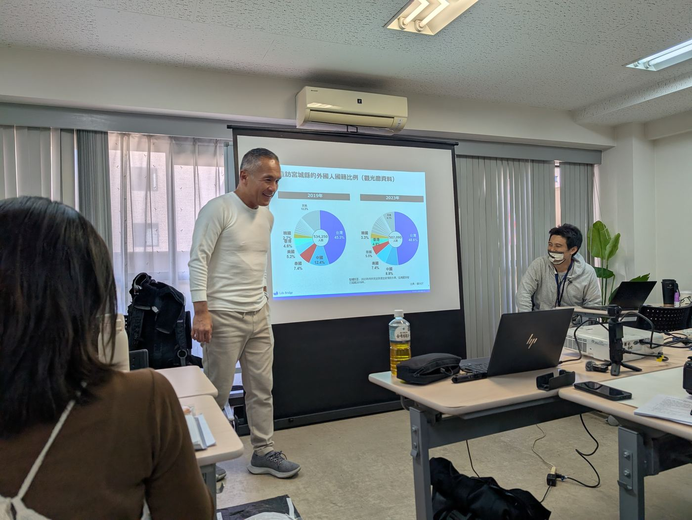
他接著分析台灣人來日本的六大動機：食物、自然景象、購物、主題公園、溫泉、歷史文化體驗，這些都很符合我身邊大部分人的旅行模式。緊接著老師問了我們一個問題：「如果要向外國人介紹你住的地方，你會從哪裡開始？」老師舉例：日本人介紹仙台時，可能會說伊達政宗，甚至說《星際大戰》的黑武士造型就是從他來的，這個消息對我來說很震驚，因為真的是「冷知識」等級的。引起動機後，老師接著問我們：那我們介紹金門會講什麼？台中會講什麼？是歷史？食物？還是某種在地的日常？講者接著說：「你要知道對方知道什麼，才能真正打動他們。」這對我目前的認知就是 TA 選定，但被說得更柔軟，也更家行動化。因此這也提醒了我們，在日本人心裡的「台灣」其實也不是我們以為的那樣，因此我們要想像他們的生活狀態，建構出他們這認知再確認我們要不要用同樣的方式，把台灣日常介紹給他們？例如：台灣人吃早餐的步調、夜市的人情味、廟宇與生活如何綁在一起、或是便利商店與手搖飲的文化等等。也知道「跨文化介紹」並不是想像那麼單純。
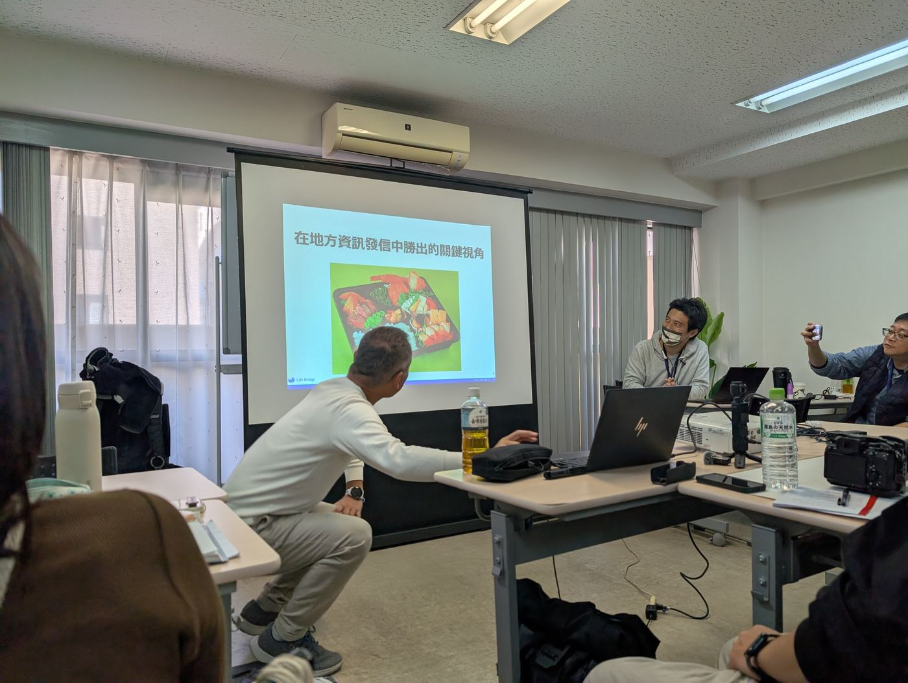
另一段我自己也非常有感的話就是：「大家都做的，就不要做。」以便當為例，幕之內便當哪裡都買得到，所以如果在地方車站也是賣這種，旅客就不會特別想買。但如果是「米澤牛便當」那就完全不一樣了，因為那是「不是這裡就不行」的內容。這讓我想到，日本地方對「獨特性」的想像其實比台灣更直接也更具體，我們可能會說「在地文化」、「地方品牌」，但在日本，他們真的把它變成能吃、能碰到的東西。講者整理了觀光內容的五個要素，我覺得非常受用：
- 有故事（例如伊達政宗與 Star Wars 的連結）
- 獨一無二（不能換地方實現）
- 能以影像呈現（因為影像會自然擴散）
- 外國人友善
- 能實現夢想（旅客想做但在其他地方做不到的事）
他舉了「岩船爆破體驗」為例，原本設定的 TA 是喜歡英雄與假面騎士的男性，結果最多預約的是新人婚紗攝影。這種「體驗的重新被使用」其實非常有趣，也提醒我，旅客會自己重新定義內容，而這種再詮釋本身也有價值。
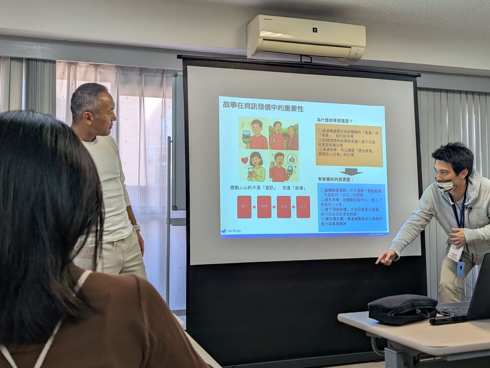
接著老師舉例以他多年的經驗來說該如何講述在地特色，他認故事比描述更能打動人。老師用「玉子燒」示範怎麼講故事。他說：「日本人的童年便當，有一半是玉子燒做成的。」這句話可以在很短的時間內引起動機，讓觀眾開始好奇、會想要更進一步的探索下去。等到引起性去後就將這個食物連同記憶、家庭與味道結合。介紹特色不是列功能，而是讓別人想起他自己。因此可以發現事物的靈魂因地而異，所以介紹方式要符合對方熟悉的脈絡，從宏觀到微觀地讓別人知道「這裡的特別」。老師整理出來故事結構其實就是：「導入 → 提問 → 高潮 → 結尾」所以比起描述味道，食物背後的故事才是讓人願意停下來聽的原因。以老師多年的經驗總結，老師認為一間在地餐廳如果要存活，一定離不開口碑、評論與宣傳，若店家願意與來往的顧客交流，進而成為朋友，那麼來自「朋友的推薦」永遠勝過廣告所帶來的宣傳效果。最後一段談到 Google Map 的評論文化。老師說，不管是在日本或是國外旅行，遊客們都非常依賴評論，如果可以先跟客人成為朋友，再請他們評論，慢慢地就會形成一種連鎖效應。目標不是讓大家按五顆星，而是讓旅客發自內心想推薦。這點其實也回到前面說的，打動人的不是資訊，是情感。再來宣傳要吸睛，量化資料與事物的稀缺性也很重要。所以老師在經營頻道時會以「唯一」、「最多」、「第一」這種字眼吸引觀眾。
最後我們透過一場實作工作坊在短時間內規劃出一場小旅行，這個小旅行的TA由我們設定，並且需要在規劃中提出吸引人的點是甚麼，整體的行程是甚麼。我們小組以原住民文化為例，設計了一個可以在全台通用、修改的原住民文化活動體驗旅程。透過腦力激盪與反覆的討論，我們建構出一個看起來真的可實行的計畫，這是我在以前的學習中是很難想像的，因為我們會用非常漫長的時間去思考一個專案，而這次的工作坊對我來說受益良多。
整體聽下來，我覺得今天的內容讓我重新理解「地方魅力」的組成方式。它不是自然存在的，而是被建構、被包裝、被重新敘事出來的。同時，觀光既是跨文化的互動，也是一種反向檢視，讓我們思考我們該如何向別人介紹自己的家鄉？我們又是透過什麼認識別人的地方？我想未來我在做文化研究或在地創作時，也會記得講者說的：「要知道對方知道什麼，你才能真正打動他。」而「故事」跟感動也遠比描述更重要，而這樣每個物件才有其獨特性，這樣的「唯一」比完整的事物更加迷人。
Day 02
台灣青年 宮城縣「地方創生•視察」政府訪問、台灣·日本/宮城地方創生的國際連攜及實踐
November 13, 2025
＋
台灣青年 宮城縣「地方創生•視察」政府訪問、台灣·日本/宮城地方創生的國際連攜及實踐
台灣青年 宮城縣「地方創生•視察」政府訪問
展開課程筆記
宮城的地方創生：農業 農家 六級產業化 農村 自然文化交流
前言
伊藤正夢米：取自伊達政宗，延續其「獲取天下的夢想」，希望延續這個夢想讓伊達正夢可以傳遍日本。
六級產業化與地區資源的活動
農山漁村 產業（生業）課
- 現況
高齡化、人口減少、年輕人外流到都市→永續～創造就業機會⇒人口回流、地區活力
- 善用地區資源
→利用土地培育產業，活絡地方經濟
- 六級產業化
→自己生產，自己加工，自己販售=1生產×2加工×3服務=6級產業
例：體驗教室、農產直銷、餐廳、觀光農園、民宿～草莓生產（生產，加工，銷售）→非良品可以變成果醬
是否只有農林水產品呢？
→自然、運動、歷史、廢校、古屋、文化也是可利用資源
例：山林～健行，生存遊戲，露營
「農作物、景觀」「加工販售、觀光旅行」「農林漁業者、在地產業」
例：竹林～電影場景，兒童體驗，野營，竹筍和栗子
- 產業課服務
- 專家派遣：幫助新創業者，派遣名間專家協助
- 研討會：開設講座提供撰寫計劃書的幫助、資金規劃（business model）、如何推廣、食品安全（共八次）
- 補助金【地區資源活用推進整備專案】希望有加工機械、開發新產品～提供補助金
- 媒合網站（對於可能沒有能力的業者）：產業媒合、委託媒合合作
- 結論「利用該地區特色」結合創新想法創增新價值
推動都市與農山漁村的交流～宮城的實踐案例～
- 日本現況
中山間地區：耕地38農家數趴44趴40趴產出額
～中山間，也就是宮城縣地區高齡化嚴重=＞聚落消失危機-＞地區活化來復興農山漁村的社區
- 都市與農區交流對地區活性化的效果
- 當臨界點被突破後聚落的功能就會消失，迎來地方消滅
「關係人口」=＞以多種方式與地區與居民互動的人們
=＞關心、參與（定期會來、關係更緊密）～也希望讓別人移居過來=＞宮城縣因交通便利所以一直在移居名單中名列前茅
- 交流的鏡像效應～交流增加當地自信也讓遊客願意一來再來
- 綠色旅遊推廣～經營農家住宿、餐廳、體驗=＞以第一級產業為主
- 問題
- ＞從業人士高齡化、接班者不足、多為志願者=＞商業上的永續+疫情～自然引退=＞轉向農泊模式
- 農泊推廣
- 提供住宿～可持續，商業，自主經營，法人為中心，各地業者，以市場行銷為主
例：古民家居住+農務體驗+手工體驗+自然體驗+溫泉+散策
- 問題：缺乏核心推動者、人手不足、宣傳能力、受益化困難、在地連結、體驗品質、國外旅客
- 解方：政府提供商業模式洽談、交流、觀察、網站連動推廣資訊、大學合作、企業支援計劃
～以在地資源開發體驗 例：梨子
～應援隊：插秧體驗、河童擦拭、防獸柵欄。。。=＞幫助在地同時協助
- 結論
- 人口高齡化，鄉村推力
- 田園回歸與地方移居
- 交流的鏡像效應「地區活化」+實踐活動
- 官方支持：人才培育跨區合作
- 擴大關係人口與回流人口，推動地區自立型活化性
QA
- 在地資訊要怎麼推廣給在地居民？
線上方式：事業者，觀光客=＞已經變成官方跟企業可以參與的平台
- 對於有意願開發事業的人，宮城縣政府有沒有追蹤關係人口？系統化的追蹤？有沒有案例？
第一部分不是農業科負責，但可以到大阪之類的地方上課。會提供移居者補助金（事業相關如機械、創立公司），線上平台、課程、宮城縣其他單位（商業。。。）～如果發現其他單位比較適合會協助媒合
- 在地要怎麼回饋政府？政府怎麼找到補助對象？
補助金就是給出去了，不能回饋政府（平行流動關係，不是上下），受到補助金後一年要寫一次報告，並報告事業效果（推廣影片）。
雖然有線上平台，也不是每個業者會看到。政府kpi是找幾個人，所以一定要找。透過區公所，email、名片主動邀請。sns是必要的，但還需要更多（現正開發中）。也會從別的部門的活動來宣傳。
- 關於業者申請時的評判細項
宮城縣政府針對機械200萬是上限，但其他縣政府不一定，國家層級可以到1億日幣。
- 如何追蹤？如果壞掉了呢？
一次買一台200萬，會有類似保固期時限約7年，設施則是20-30年，有法規規定。
- 日本的核心推動者有誰？年輕人意願高嗎？
每年約120個年輕人，8成會是當地人，多為家人經營農業比較多，可能畢業之後會回來經營。
- 怎樣比較容易過嗎？會有特定的評斷標準嗎？
因為計畫很難過，所以也會幫忙協助，不過每個單位評斷標準也不一樣，在農業科來說以他們會有怎樣的影響為評斷標準（貢獻地區）。
- 在地專家如何找？
因為派遣專家已10年以上，所以會從認識的直接找。另一個是透過顧問公司來尋找。
今天的政府視察內容，比我預期更「務實」也更「現場」。整個流程從農業、六級產業，到都市與農山漁村交流，很多概念我本來只在報告或政策文件裡看過，但在宮城看到的是真實案例、具體操作，還有背後的困境。
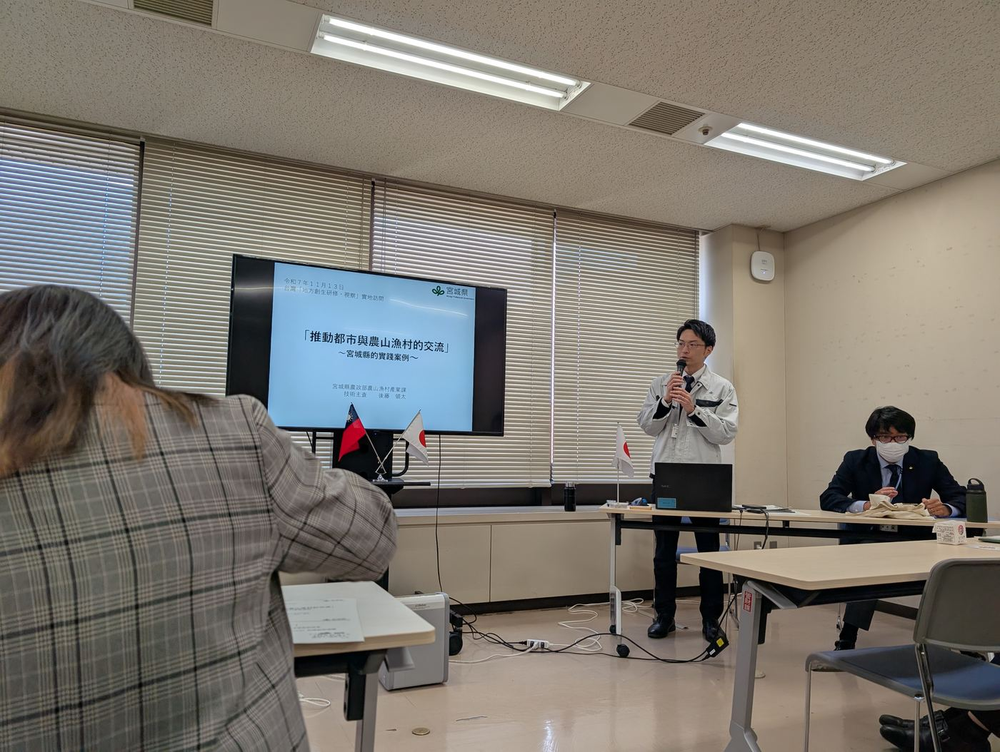
一開始是宮城縣政府人員介紹「六級產業化」日本很常講這個概念，但今天的講解讓我第一次有清楚理解的感覺。日本將把地方創生的核心講得很直接：高齡化、人口減少、年輕人外流 → 地區活力下降 → 要讓人願意回來，就要讓地方能永續生活。所以農村的 6 級產業化不是口號，而是讓地方能「自己養活自己」的方式：
- 生產（農作物、漁產、林業）
- 加工（果醬、醬菜、食品製造）
- 銷售與服務（體驗教室、觀光農園、餐廳、民宿）
1×2×3＝6級產業
說起來簡單，但一個人要做生產又要做加工還要做行銷，其實非常吃力。他們提出的案例非常具體，例如草莓園。好的草莓售出，不夠漂亮的則做成果醬，或是延伸成草莓體驗活動，這是一種「把一個作物用到極致」的系統。而且他們強調不只是農業，自然、歷史、廢校、古屋、文化全部都是資源，例如把竹林變成電影場景、兒童體驗基地等。我第一次感受到日本地方資源是「被當成價值」來對待，而不是等待別人來發現。
在政府提供的操作層面的這部分原本我以為會枯燥，但其實滿震撼的，因為它呈現的是「政策如何成為可執行的工具」。宮城縣政府會提供：專家派遣，讓他們不只是給意見，而是真的派人到場域裡，陪你把商業模式想清楚。研討會則是教企業寫計畫書、食安、推廣方式、商業模式（整整八次）。補助金用於補助企業購置加工機械、開發新產品都可以申請。在地媒合網站則是讓沒有資源的人也能找到合作對象。在這邊可以發現日本把地方創生當成產業，而不是活動。而且強調該如何利用該地區特色結合創新想法創造新的價值。這句話聽起來很簡單，卻也是整個政策的核心。
接著是介紹宮城地區的都市與農山漁村交流，並且提到「關係人口」與「鏡像效應」帶來的地區活化，以及中山間地區的荒廢問題。講師提供一張象限圖，介紹村落人口與產業的狀態，那麼一旦關於人口的臨界點過去，聚落就會消失。以目前而言宮城的問題是高齡化非常嚴重、農家逐漸減少、聚落功能慢慢消失、年輕人都到都市，這也讓我想到狀況跟台灣的山區／農村狀況非常像。而已日本現行的做法是推動「關係人口」概念，不是觀光客，也不是移居者，而是讓那些會定期回來、有情感連結、願意參與地方的人，可以持續關注這片土地，具體作法例如農泊（在農家住宿）、農務體驗、古民家住宿等。
不過講者也提到了推動者高齡化的問題，以及缺乏專職人手、志願者扛太多與最重要的，疫情時代後很多產業的自然退出，都導致推動的困難。所以宮城現在的方向是把志願者模式轉向可持續的商業運作。我滿喜歡講者提到的「交流的鏡像效應」這個說法：「當地人看到外地人喜歡這裡 → 自信提升 → 又更願意投入 → 外地人又因此想再來」。這是一個很好的正循環，也讓我想到文化研究裡「地方敘事會反過來建構地方」的概念，因此在這樣的正向的流動性下，其實是會讓地區越來越活絡，吸引到並非是單純的為了一次性體驗而來觀光的旅客。在農泊與在地體驗推廣中，講者給了許多很生活的案例，例如：古民家住宿、插秧體驗、果樹採收、手工體驗、在地散策、溫泉結合農家等。甚至還有地方青年組成「應援隊」，幫忙防獸柵欄、協助在地活動。但現行而言最坦白的是問題是：核心推動者不足、宣傳力弱、缺乏商業 know-how、在地連結不足與旅客口碑難累積。
目前的解方則是以政府端介入，提供企業商業模式諮詢、協助網站曝光、與大學合作、企業支援計畫以及與其他行政單位聯動。這些內容聽起來像政策書，但當他們講到「梨子的在地體驗」、「農泊如何整合溫泉與散策」的時候，我突然覺得「地方創生其實很生活，不是政策」。有時只是一個小產業被重新設計，新生命就會被點亮。
首先談到資訊如何傳達到在地居民。因為並不是每一位農家或業者都熟悉網路，宮城政府只能靠最基本的方式：email、名片、區公所的人脈連動，甚至是透過其他部門舉辦的活動「順便」傳遞，SNS 也在做但還不成熟。這讓我感受到，日本的地方創生雖然制度完整，但在推廣上仍需要大量「人跑來跑去」的實體接觸。這並不是效率低，而是地方行政在真實世界裡本來就長這個樣子。
補助金的部分也讓我印象深刻。政府並不期待「回饋」，只有年度報告與成果影片，關係像是「平行」而不是上下。更重要的是，政府不等業者來申請，而是會主動尋找適合的人選，因為他們的 KPI 是「找到誰」而不是「等誰來」。 有人問年輕人願不願意回鄉。政府的回答比我以為的樂觀：每年大約有 120 位願意投入農業，其中八成是當地人，很多是家中本來務農而回來接手。這說明了「返鄉」不只是經濟考量，也包含身分認同與家庭延續。設備補助的管理方式也反映出制度的成熟度——機械約 7 年、設施 20 至 30 年都有明確法規保固。這些細節乍看不起眼，卻是在地產業能不能長期運作的關鍵。
至於「專家去哪裡找」，因為制度推行超過十年，所以多半是人脈累積，也會透過顧問公司媒合。這其實讓我想到，日本很多地方創生成功的案例，背後都有幾位長期累積的「固定班底」，而不只是一次性的專案團隊。對我而言，今天的訪問讓「地方創生」這個詞從概念變成了可以被具體想像的樣子。它不是口號，也不是理論，而是：
- 地方能不能活下去？
- 資源能不能被轉換成價值？
- 年輕人會不會願意回來？
- 志願模式能不能變成可持續的產業？
- 交流能不能帶來信心？
- 而政策能不能真正支持到在地的「人」？
宮城給我的感覺是：他們正在用一系列實際的做法，試著讓地方回到「可以生存」的狀態。這不只是一場視察，更像是一堂完整的，觀察他人的「政策如何落地」的課。也讓我重新確認了，地方創生不是大企劃，而是很多微小、生活化、靠近人的努力，慢慢累積起來的。
台灣·日本/宮城地方創生的國際連攜及實踐
展開課程筆記
講師：張菁砡
- 前言
為甚麼在日本介紹台灣～大地震捐款⇒埋下種子～發現靠一個人的力量是不夠的
→開始「臺灣微體驗」的活動（特殊例子：坐著洗頭）
→以文化、旅遊為主～各個國家都認為觀光與旅遊是最乾淨、有效的經濟活動
～因地震關係，有觀光以及救災上的交流
→活動：繪製燈籠～因為畫完的燈籠袋帶回台灣展出，這些體驗者也會想要到台灣來看看自己的作品。～增加關、交流機會。
- 研究工作坊
～問題
如何在仙台宣傳台灣文化與物產？
日本人可能對台灣的甚麼有興趣？
如何創造關係人口？
可以放入甚麼元素
可以用甚麼方法吸引外地人
講師張菁砡老師來自台灣，曾就讀中文系，因緣際會之下就流在日本工作，以及開始接觸地方創生。講座一開始就提出：「為什麼她會在日本介紹台灣？」這個問題。
她說，這一切其實是從大地震時台灣大量捐款那段經驗開始的。宮城人因為那件事，對台灣有非常深的感情，而老師在那時看見一件事——靠一個人的力量是不夠的，如果要讓台灣真的被看見，就需要創造更多能夠持續互動的方式。於是她開始做「台灣微體驗」這件事，希望透過這顯簡單但是會讓別人震驚的體驗，進而介紹台灣，例如：坐著洗頭的文化。加上老師提到，旅遊跟文化是最乾淨、也最容易跨越語言與背景的交流方式，世界各國都是這樣認為的。而因為 311 之後的救災與交流，台灣和宮城的牽連變得更緊密，許多活動開始進入彼此的生活，也以此契機希望可以做到更多。
老師提到他們曾經辦過一個「畫燈籠」的活動，遊地方的參與者完成的燈籠會被帶回台灣展出，參與體驗的人就會因為「想看看自己的作品」而跑到台灣。我覺得這個方法很棒，也很聰明：不是用宣傳吸引人，而是用自己的作品讓他想來。
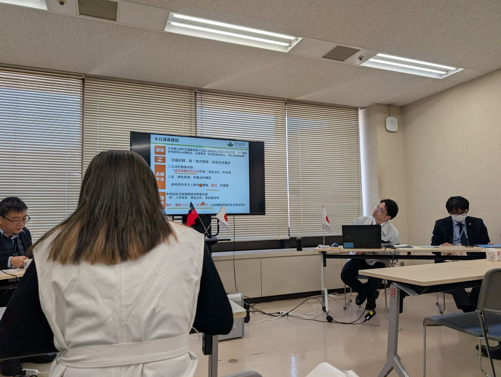
- 在仙台，我們要怎麼介紹台灣文化或台灣的物產？
- 日本人會對台灣的什麼有興趣？
- 又要怎麼讓這種興趣變成「關係人口」
- 我們能放進哪些元素？
- 又能用哪些方法吸引外地人？
以此來腦力激盪，設計出一個地方的觀光宣傳活動。我們小組是做臺灣騎樓文化，結合最近很紅的「臺灣感性」的概念，引起日本人興趣後，告訴他們為何我們有奇萊，進而比較工程與台灣的民族性與氣候差異，最後也希望他們在這邊可以有一個完整的體驗，如老人健康器材、老街走讀等等。同時也會販售花窗相關產品，也會招商近來，與當地，在日台灣人建立更加緊密的連結。看到其他組的報告也多是以日常生活切入，比較台日差異以及每個創作都十分有活力後，我更可以知道地方行銷不是硬推，而是怎麼讓別人想起你、接近你，甚至主動來找你。而台灣和日本之間那種天然的好感，其實是一個很大的優勢，只是要用什麼方式把它打開，還需要更多創意。
Day 03
鳴子溫泉觀光協會、木芥子工作坊&準喫茶カガモク
November 14, 2025
＋
鳴子溫泉觀光協會、木芥子工作坊&準喫茶カガモク
鳴子溫泉觀光協會
展開課程筆記
遊佐久則先生～鳴子溫泉觀光協會副會長
歷史
今天在的地方是東鳴子，另外還有很多地方，也教大家如何分辨地區溫泉的不同。歷史的部分，鳴子溫泉有一千年的歷史，在當時的人來說，會希望有療癒或療傷的作用。
一千年前溫泉不僅有娛樂的方式，也因為溫泉的關係需要住宿，因此有「湯治」。除了享受溫泉，來到這邊的人們也會享受宴會。
大概戰國時代的主要旅客是團體比較多，現在則是個人客比較多。
現在主要還是以觀光業為主，再來是工藝品的部分，主要以木介子娃娃以及燒瓷為主。泡湯的時候因為家裡沒有浴缸，所以育場也是在地人聯絡感情、交流的地方。日常的問候與關心在鳴子溫泉是很常見的，但現在的狀況也不一定，會去外面泡湯的人也慢慢也少了。
現在（推廣）
對一般人來說，不一定會知道鳴子溫泉。那目前也正在思考著行銷的策略。像是全國的溫泉種類來說，光鳴子地區來說就有七種溫泉，這是日本中很少見，也很特別的。
溫泉的功能一千年來都沒有變化，有著治癒身體疼痛、療育的功能。不管甚麼時代，大家都是希望來在這邊放鬆身心、享受宴會、喝酒。
五年前遊佐先生整理了一個冊子，結合鳴子區的所有特色，讓遊客來現場可以根據手冊去活動，例如之前協會舉辦的ＳＵＰ活動等。同時也會舉辦一些活動讓大家體驗鄉村生活與沒有手機的生活，達到真正的融入自然與樂活。
飲食上，也會使用在地的食材來料理，推廣鳴子地區的農產品。冊子集結在地手工藝跟住宿、餐廳業者，大家或是本地人，或是因緣際會下留下來的人，但大家都好好在鳴子區經營、深根。
現在在鳴子區最重要的策略是溫泉，但因為只有這件事還不夠，所以也要思考如何商業活化，以及如何將溫泉與其他活動結合，讓遊客可以體驗在地與傳統文化。
未來
讓大家有共識是很重要的，有一個共識後大家還是可以各自行動，也希望大家不要吵架。這樣的方法也是試驗到現在比較好的。也希望在未來可以建立一個以年輕人為主的觀光協會。一方面支持年輕人，直接連接到他們的組織與未來。透過這個方式讓鳴子町有更多年輕的力量。也希望給下一代。
以前的旅館會對於接待外國人也點排斥或是覺得為甚麼要這麼做，但現在時代變了，大家見見可以接受外國家庭很普通的出現在鳴子町。會感受到他們就跟日本人一樣在享受這邊的生活。
QA
- 保養溫泉是甚麼？
- 日本的保養、療養有種修復身體的意思(身心不健康)，所以說這樣的名詞給人一種負面、比較不好的感覺。因此才希望改成正面的意思，讓大家來這邊放鬆就好。
- 會有殺菌的功能、鹼性、酸性
- 有沒有祭典、大型活動
- 1、2月比較多人→天氣冷大家會來泡湯
- 3、4月其他地區會有活動所以相對較少
- 5月因為黃金周的關係人會比較多
- 9月會有木介子娃娃的祭典，這是在地比較大的祭典活動
～也會因為宴會關係旅客變多
- 連結不同區域的旅館的老闆最困難有挑戰的地方是甚麼？
- 看到別人成功會有一點磨擦
- 每個人在意的點都不太一樣，要每個都符合其實很難，儘管有共識也會有摩擦。所以還是盡量讓大家有共識會比較簡單一點。
- 經驗不同
- 有時候聲音比較大的人的意見就會通過，但也會有一些利益衝突的關係。目前覺得比較好的方式是，開會的時候主題對自己沒興趣就不參加，但要了解別人做甚麼，如果開會不參與，但要了解他人，這是基本規則。
- 同時也會舉辦很多會議，會邀請講師。這個開會不只有老闆會參與，甚至是地方煮咖哩飯的媽媽們也會參與，他們的反應也良好。
今天的分享是在旅館ゆさ，經營者遊佐久則先生也是當地觀光協會的副會長，他講的內容讓我第一次真正感受到「溫泉」不只是觀光、休閒的意涵，而是一個有千年歷史的日本生活文化。他先跟我們介紹現在所在的「東鳴子」，其實鳴子還細分成很多不同地區，各地的溫泉性質都有差異，日本人甚至可以用「泉質」來辨別每個地方的特色。一千年前的鳴子溫泉不只是旅遊景點，而是療傷、療養的地方。那時的人們會為了治療身體而來到此地，因此有「湯治」的文化。當時的模式就是：住宿、泡湯、宴席，也讓身心都放鬆下來。這種生活方式一直延續到近代，只是旅客的型態從戰國時代的團體，變成現在的個人客居多。遊佐先生說得很輕描淡寫，但我也讓我感受到這就是他們生活的一部分。過去家裡沒有浴缸，所以公共浴場就類似台灣的廟口一樣，是鄉親彼此交流的地方。而現代年輕世代不一定會到公共浴場了，這些交流場域也跟著慢慢淡下去，溫泉文化也在轉型。
現在鳴子溫泉仍以觀光業為主，同時推廣工藝品，尤以木芥子娃娃和漆器為主。我自己感受到這個地區的產業都是從自然資源與生活延伸出去的：以工藝、餐飲、甚至日常生活有了發展的土壤。
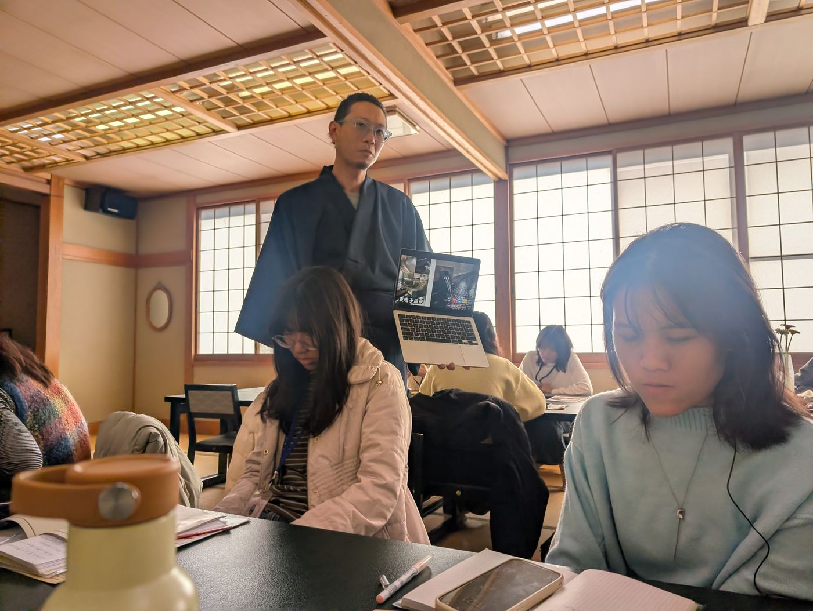
遊佐先生提到，因為鄉村人口外移及高齡化嚴重，因此正在摸索如何讓鳴子重新被看見，使人口回流。而鳴子溫泉在日本可謂是特殊的存在，光是鳴子地區，就有七種不同泉質的溫泉。這在日本是非常少見的。但如果不說，很多日本人、甚至宮城人自己都不知道。而溫泉的功能千年來沒變——治癒、舒緩、放鬆、喝酒、享受宴席。但觀光客的需求一直改變，所以他們開始把溫泉搭配不同的活動，例如 SUP、鄉村生活體驗、甚至「沒有手機的一天」這種專門讓都市人斷線的行程。
五年前遊佐先生整理了一本冊子，把所有在地的活動、工藝、住宿與料理都整合進去。來到鳴子的遊客，只要照著冊子走，就能體驗在地生活。他說冊子裡列的那些業者，有些是土生土長的人，有些是因緣際會留下來的移居者，但共同點是大家都願意深耕、願意在鳴子好好生活。但光靠溫泉是不夠的，因此在地業者現在思考的是如何把溫泉和其他體驗連結、如何讓在地文化被看見，以及如何創造持續性的商業活化。當一個地方的招牌用久了，就要開始思考下一步。遊佐先生認為，以未來而言，「共識」與年輕人才是讓地方繼續支撐下去的動力。在擔任協會幹部時需要從中調節，不過最重要的管理方式就是尋求共識，但不強求一致。有共識後，可以各自行動、不要互相吵架。遊左先生說這是他們試到現在最有效的方式，希望協會的成員們可以彼此理解、不踩到對方在意的點。他也希望未來能成立一個「以年輕人為核心」的觀光協會，讓年輕人進組織，直接負責規劃，以他們的視角創造新的地方魅力。
在以前，鳴子溫泉的旅館老闆對外國人多少會有些排斥感，但這五年改變很大。現在老闆們看到外國家庭到處走也覺得很正常。我覺得這比政策推動還重要，只有當地方的心變了，才可能真正接受不同的旅客。
在QA的時間裡我聽到一個很有趣的知識，有人問「保養溫泉是什麼？」遊佐先生說，日本的「保養」這個字其實帶有一點「身體不好才來」的負面感，所以他們現在改用更正向的方式來說：來鳴子是放鬆、是休息，不需要把自己想成「有病才來泡」。這其實是一種觀光敘事的調整：把自我療癒變成一件快樂的事。也有人問當地的祭典、淡旺季。但最讓我印象深刻的是有人問，在協會理要怎麼跟不同旅館老闆合作，有沒有遇到困難。他提到，這之中的調和確實很困難，因為每個人的重視點不同，利益收穫不同，有時聲音大的人意見就會過。但他們目前採用的方式是：開會時，如果議題跟自己無關，可以不必參加，但「你不參加，也要知道別人在做什麼」，這是基本規則。最後他提到，有些會議甚至會邀請煮咖哩飯的媽媽們一起來，她們也會提出自己的想法。這顯現了地方創生的真諦，讓在地發展不是只有菁英在討論，而是整個地方的人一起參與。
聽完遊佐先生的分享，我感受到一個地方是怎麼「活著」的，不是靠歷史光環，也不是靠天生資源，而是靠著溫泉、活動、冊子、在地食材、工藝、年輕人的加入、老一輩的妥協、大家的共識，慢慢維持起來的一個生活共同體。
木芥子工作坊&準喫茶カガモク
展開課程筆記
木芥子工作坊
今日拜訪的工作坊老闆已經是第五代。
歷史
木芥子娃娃歷史從江戶時代開始，當時以漆器為主，因為小朋友沒有玩具，所以會用木工+漆器來做成玩具。各個地方的特色都不太一樣，有些地方可能是紙，但東北木頭是特色所以以木頭做的玩具為主，加上溫泉的特色，好多觀光客會買木頭玩具當紀念。
後來就有些有名的人買了木芥子當伴手禮，就慢慢變有名。除了伴手禮外，它也有傳統工藝品的價值存在，可以拿來送禮。
特色
不同溫泉區會看到不同木芥子，怎麼畫、形狀都不一樣，鳴子町即是較為有名的地點。一般木鳴子町的木芥子，頭跟身體都是分開的，並且畫有菊花，頭是頭髮盤起來的樣子。這個形狀就像是紅包上面的蝴蝶結形狀，是吉祥物的概念。會在喬遷時送禮等。
每個職人跟工作室的做法（畫的樣子、形狀）都不一樣，屋子裡也有很多照片可以看到，儘管傳承多年看起來笑死卻有很多細微的不同。
工法
用みつき（水木）製作而成，因為水木製的木材比較白，看不見明顯的線，所以更加適合。在東北地區特別常使用，會在過年時放在祖先的佛堂。也有持續增長的意思，所以是很好的寓意。
水木會在1月生長較慢的時候砍掉，並製作成木芥子。會經過幾道公序、等待之後才會變成木芥子。
QA
- 哪裡有木芥子？
- 有木芥子的其他地方：青森、宮城縣其他地方…
- 繪製的顏料有特別什麼嗎？
- 會是特別的，鳴子町會從食/植物中提取染料。有些地方則是礦物。因為食物提取的顏色比較淡，就會有點透明的感覺。如果一直摸的話也可能會融合。
- 有特別的配色嗎？
- 黑色紅色綠色，每個地區不一樣，鳴子町這裡會加上紫色。再來大家都會自己調色，每家都不一樣。家主不一樣也會稍微不一樣
- 會有分工嗎？
- 都是同一個人做
- 畫錯怎麼辦？
- 就直接完蛋QQ
工法介紹
木芥子有四種，會有幾個體型對應角色：圓身就是帶著小孩的媽媽，也會有小孩坐著的狀態，但只有鳴子町才有坐著的孩子。這些體型是基本款，但每個工人做出來的狀態都不一樣。
水木都會先削皮，然後再把它弄成圓柱，會分頭跟身體。有時候轉不進去，但一直轉之後因為熱脹冷縮就會放得進去，最後就拔不出來，但旋轉的時候會有啾啾聲，這是鳴子町娃娃的特色。
最剛開始會做頭。再做身體，做好之前都會用稻草來磨砂，只有這樣才是正確的樣子。之後就會開始畫線、上色了，繪製會在其他地方完成。
現在也有很多變形或用途，會用在女兒節送禮，讓女孩子可以身體健康。一般是一對。也會因應外國人的需求做創新，讓整體設計簡約，也曾經跟大阪W hotel合作製作木芥子娃娃。也有跟孟克合作！
準喫茶カガモク
從東京城鎮發展助成基金會～回到鳴子定居、創辦準喫茶カガ（店長名字）モク，之後2018擔任鳴子溫泉森旅之會事務。
咖啡廳協會關鍵字：#利用在地資源 #活動活化 #國際交流
- 在地特色與創新
- 川渡溫泉→川渡音泉（當地人組成的樂團）～在地特色再深入，結合其他元素在地化
- 油菜花（店主阿公時期才開始種植）→集章活動、探索街區～在地居民認識地區歷史、成為孩童認識故鄉的契機
以逆轉思維吸引別人：奇特的人、森林資源、地方認同與動力強烈⇒擁有眾多能提供與過往不同價值觀的資源
～台灣學生與祭典活動連動⇒打造「開放」的鄉村
QA
- 怎麼知道油菜花田，為什麼大家不知道
- 都市規劃關係
- 集章活動如何進行
- 學校、觀光協會（地方支持等）
- 他們怎麼知道的？活動希望小朋友去互動，大人消費，針對青年有送米。
- 只有在油菜花開的時候會是活動
- 用什麼方式讓大家交流的呢？
- 棕袋分享會的感覺（會準備簡報，說最近在幹嘛）～認識在地人的機會
- 因咖哩會出現的活動～每個月一次帶小朋友到森林裡玩耍
今天拜訪的木芥子工作坊，是一間已經傳到第五代的老工房。木芥子娃娃從江戶時代開始，那個時候東北本來以漆器聞名，而因為孩子沒有玩具，就把木工和漆器結合起來做成給孩子玩的「木玩具」。各地的材料依地方而異，有的做紙、有的做布，但東北因為擅長木頭，就發展出木芥子。加上溫泉文化盛行，旅客來泡湯，總會帶個紀念品回家。這讓木芥子從一個童玩，慢慢變成地方的象徵，甚至變成傳統工藝。而鳴子町的木芥子看起來雖然都很像，其實都不大一樣。老闆教我們怎麼分辨桜井こけし的特色：頭跟身體是分開的、頭髮盤起來、身上會畫菊花。那個盤髮的形狀，有點像紅包上的蝴蝶結，是一種祝福、吉祥的象徵。他說在鳴子，這種木芥子常被拿來送禮，像是搬家、喬遷之類的時候。
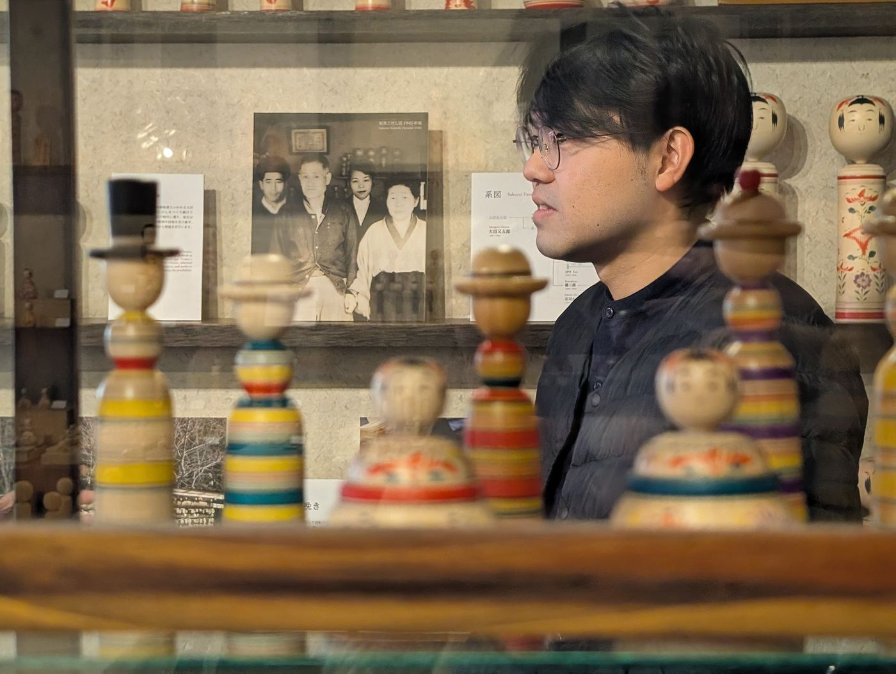
木芥子已傳承多年，儘管一直都堅持傳統，但仔細看會發現是「帶著前人留下來的東西，再加上自己的一點點」的感覺，我覺得，木芥子本身就像是地方的縮影，看起來一樣，但每一代也都不太一樣。
木芥子使用的是水木（みずき），這種木頭本來就很白，不會有明顯的木紋，非常適合上色。在東北，木頭會挑在一月砍伐，因為那時生長最慢、木質最好。然後經過削皮、乾燥、等待，才能開始做第一個步驟。
最療癒的瞬間是老闆示範木芥子的組裝。他把頭和身體分開給我們看，然後介紹到有時候頭塞不進去，但轉久了因為熱脹冷縮就進去了。頭卡進去的那一刻會有一個很小很小的「啾啾」聲，那就是鳴子木芥子最重要的特色。上色前，木頭會用稻草去磨。用砂紙也可以，但稻草帶來的細膩度、柔和度是不一樣的。老闆也展示了很多不一樣狀態的木芥子：有用在女兒節祝福女孩健康的、有做成簡約線條的、有被外國旅客重新喜愛的。甚至也有跟大阪 W hotel 合作，還有與藝術品合作設計木芥子。那一刻我才真正理解「傳統工藝」不是守著不變，而是找到自己能走到未來的方式。今天在木芥子工作坊，我覺得木芥子不像一個「商品」，更像一種「地方被製造出來的方式」。木頭的紋理、稻草的觸感、木頭的啾啾聲、五代的延續、盤髮的吉祥花紋的細節都在告訴我，地方是被一代又一代的手「做出來」的。鳴子木芥子之所以能走到今天，不是因為觀光客買，而是因為有人願意一直做。我覺得這就是地方創生最真的部分，這不是商業策略，也不是口號，而是那些每天在那裡持續工作、持續創作、持續堅持的人。他們讓文化變成可以被摸到、可以被拿起來、可以被帶回家的形狀。
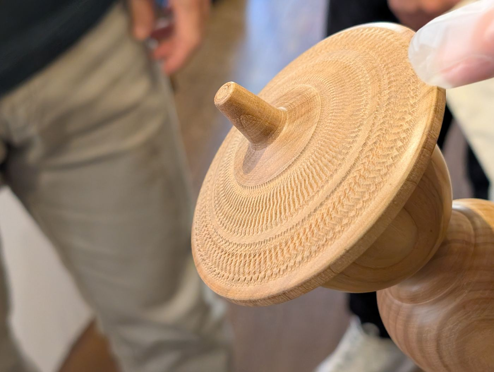
準喫茶カガモク的店主原本在東京做城鎮發展的工作，後來搬回鳴子，開了這家咖啡店。除了開店外，也在 2018 年加入了「鳴子溫泉森旅之會」的運作。這個組織不是想把鳴子變成大型觀光地，而是希望把它變成一個「能夠開放、能夠交流」的地方，是以日常生活為出發點的地方創生行動。我認為他在做的事情有三個重點：利用在地資源、活動活化以及國際交流。在這邊的交流都可以感受到大家不是要舉辦一個新的、商業性的活動，而是讓舊生活變得有新的意義，大家也可以參與的模式。像川渡溫泉，原本只是溫泉地名，結合了當地人自己組了樂團，變成了川渡「音泉」，把音樂、溫泉，重新串在一起。油菜花也是。聽店主說這一帶有一片油菜花田是自他的阿公時代開始種植的，但以前沒有人特別在意，也因為交通規畫的部分，不太有人知道。他卻把它變成了「集章活動」，讓孩子去尋找地圖上的小點、去跟地方互動，大人跟著孩子走路、買點東西，青年甚至能拿到一袋米的獎勵。他說這活動不是給觀光客的，而是希望讓孩子「認識自己出生的地方」。也深深的感受到當地人看待地方創生不一定是「讓外地人來」、商業性的需求，而是「讓這裡的人重新看見這裡」。我覺得這部分就跟我之前的想法很像，「地方的魅力不是被安排出來的，而是原本就存在，只是沒被講出來。」也是因為這樣，在後來與台灣學生合作，把祭典活動、街區探索、森林經驗連動起來。
店主希望打造的是一個「對誰都開放」的鄉村，我覺得這個概念很棒也是台灣值得思考的點，大家都喜歡有故事、深度的地方，而唯有我們堅持住自己的特色，認真做、好好做，外面的人進來一定會感受的到。而對外地人的「開放」不是口號，而是一種態度，在堅守自己的同時願意讓來自各地的人來參與，並成為建構者，才能達到真正的永續、韌性。
後面的QA中有人提到為何油菜花田沒什麼人知道，以及活動如何推廣等問題。我對第二題特別有感，因為店主說其實這些活動的宣傳都在附近地區的學校、觀光協會還有些地方的支持下，才慢慢傳播出去。而這個活動也只在油菜花盛開的那段時間中舉辦，儘管是一年一次，但成效深遠。這種儀式性的季節活動，讓地方像在呼吸。
也有同學詢問地方的大家平常是怎麼交流的，店主回答，其實就是在某一間餐廳，大家帶著簡報、說最近在幹嘛、遇到什麼問題，是一種非常低門檻的地方連結。對我來說就像棕袋分享那樣，大家在野餐的時候說說近況，沒有壓力且充實。對我而言這種活動本身，就是地方最重要的人文資產。地方不是因為觀光客變得更好，而是因為有人願意留下、願意回來、願意重新想像自己與地方的關係，像是那些活動、油菜花、森林遊戲、社區集會，看起來小，但每一個都是支撐地方的骨骼。
我覺得這趟交流與觀摩下來，鳴子町這個地方之所以迷人，也許就在於這裡的人不急著把地方推向世界，而是先把地方重新串起來，再邀請世界進來一起坐坐。
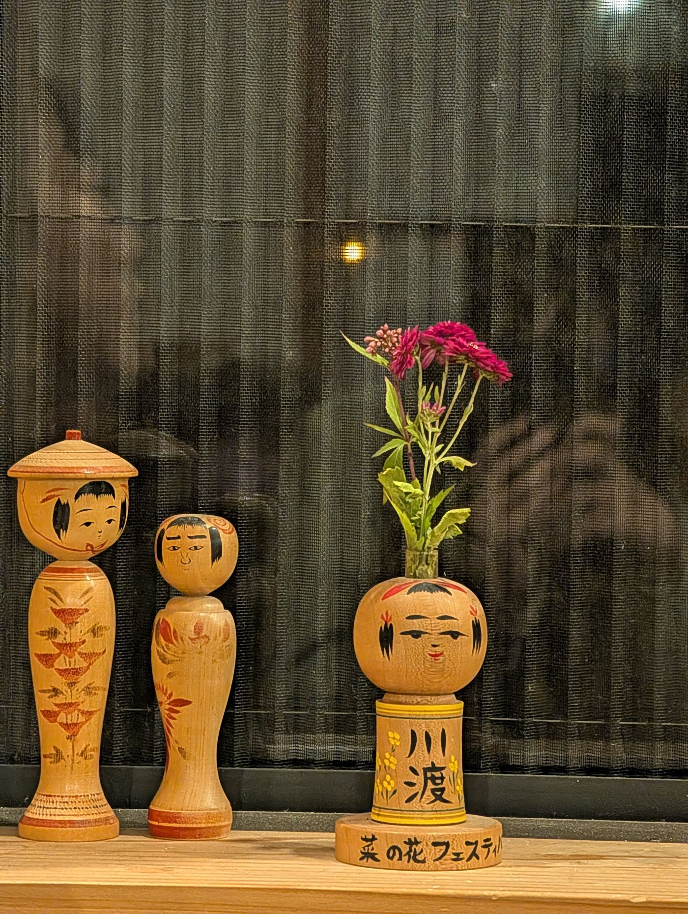
Day 04
道之驛、somespice-青年移居者的好生活與創就業支持系統
November 15, 2025
＋
道之驛、somespice-青年移居者的好生活與創就業支持系統
✨在日本中我們都需要負責一些工作事項，在日本時我負責的是【研究組】，所以需要撰寫課程紀錄。因此兩種資料轉化的處理上會較為不同。✨
道之驛
展開課程筆記
道之驛簡言之就是休息站～「休息的地方」。東北地區很大，所以車程中都需要休息的地方。由於人口流失，很多年輕人外流後都會開車返鄉，因此道之驛也是在這個脈絡中誕生，提供車程中可以休憩的地點。
這個地方也會被期待有當地特色的食物，同時也會協助販賣當地農產品。因此在這個地方可以看到濃縮的當地特色。
今日前往的道之驛是宮城最大的，每年參觀人次約300萬人，因此我們可以在今日親身一觀。
而台灣也會有很多休息站，目前最大的是新東陽，因此台灣在地小農與文創商品也會與新東陽合作，將商品放在休息站販售。使得地區的每個休息站都有在地特色→區域治理。
中小企業署也是，
微創⇒讓區域型的子品牌，由中小企業署彙整、收集各地有地方DNA的產品，統一跟新東陽聯絡。內容包含短期活動：檔期、地區、節慶、體驗活動、市集。另一種合作方式是長期上架，在抽成上就會相對較低，支持年輕團隊。
國發會則是以獎勵金制度，補助小企業。也會跟相關金控企業合作，讓金控企業贊助或是使用相關支付模式，的互惠模式。如此也可增進企業社會責任。
也有相關政府支持，如諮詢等
行前需要思考的問題
- 道之驛有賣甚麼？甚麼東西展現了當地的DNA？
- 非常多農產品，有在地特色的伴手禮。也針對了很多不一樣的客群，但最多的是食品、禮品類。也看得到日本知名IP(如吉伊卡哇、角落生物)的當地限定款。有些同學認為在地的溫泉饅頭、伊達正宗與木芥子相關的產品是他們最喜歡的，也很符合他們對在地的想像。
- 同時也有販賣高級的生巧克力，但跟空間的連結不高，覺得有點可疑，希望可以跟當地特色連結的限定巧克力。
- 客群有哪些？
- 目測大多30歲以上，觀光客跟在地人都很多，觀光客主要是購買伴手禮，在地人則是購買生活用品。後來有去觀察停車場裡面的汽車，發現最多的還是以仙台為主，再來是宮城、山形，其他的地區則零散幾輛。
- 還可以怎麼改善？～怎麼樣吸引台灣人？
- royce希望可以販售更多跟在地有關的食品，因為相比其他商店，這家的商品比較沒有在地特色。生巧克力在台灣可能也都買得道，就相對還好。另外希望可以有更多熟食的攤位讓來到道之驛的旅客休息用餐。以這次的觀摩經驗來說，可以用餐的地方相對較少。
- 自己的感覺呢？有特別的觀察嗎（消費者／經營者的立場）
- 我蠻喜歡這個道之驛的，因為這裡有很多當地的農產品跟伴手禮可以買回去送禮。我發現這邊的熟食店其實不算多，選擇也不多樣，以來這邊用餐的消費者角度而言，會覺得不太知道吃甚麼比較好。但或許以經營者島角度而言，這個空間只適合餐車型的賣店以及幾間廚房，對於以「快速」、「有效」宣傳當地特色的角度來說，餐飲或許沒有那麼重要。不過以消費者角度而言，還是希望可以吃到當地特色的美食會比較好。
道之驛簡言之就是休息站～「休息的地方」。東北地區很大，所以車程中都需要休息的地方。由於人口流失，很多年輕人外流後都會開車返鄉，因此道之驛也是在這個脈絡中誕生，提供車程中可以休憩的地點。現在的休息站會希望加入小鎮的特色，這個地方也會被期待有當地特色的食物，同時也會協助販賣當地農產品。因此在這個地方可以看到濃縮的當地特色。
今日前往的道之驛是宮城最大的，每年參觀人次約300萬人，因此我們可以在今日親身一觀。
在台灣的脈絡中，我們的高速公路旁也會有很多休息站，台灣模式是以先有政策為主，以專案名站點後，委外競標。目前最大的承包商是新東陽，因此台灣在地小農與文創商品也會與新東陽合作，將商品放在休息站販售。使得地區的每個休息站都有在地特色。而這也是區域治理的一部分。同時，台灣的中小企業署也會從中媒合，協助地方品牌進駐休息站，讓休息站有地方DNA。
- 補充：微創⇒讓區域型的子品牌，由中小企業署彙整、收集各地有地方DNA的產品，統一跟新東陽聯絡。內容包含短期活動：檔期、地區、節慶、體驗活動、市集。另一種合作方式是長期上架，在抽成上就會相對較低，支持年輕團隊。
國發會則是以獎勵金制度，補助小企業。也會跟相關金控企業合作，讓金控企業贊助或是使用相關支付模式，的互惠模式。如此也可增進企業社會責任。
也有相關政府支持，如諮詢等
山口老師在行前給我們需要思考的問題
- 道之驛有賣甚麼？甚麼東西展現了當地的DNA？
- 非常多農產品，有在地特色的伴手禮。也針對了很多不一樣的客群，但最多的是食品、禮品類。也看得到日本知名IP(如吉伊卡哇、角落生物)的當地限定款。有些同學認為在地的溫泉饅頭、伊達正宗與木芥子相關的產品是他們最喜歡的，也很符合他們對在地的想像。
- 客群有哪些？
- 大家都有趣觀察再停車場裡面的汽車，發現最多的還是以仙台為主，再來是宮城、山形，其他的地區則零散幾輛。再道之驛觀摩時會發現除了觀光客外，也有很多當地人來這邊用餐以及購買日常用品，例如蔬菜肉類等。觀光客吉當地人目測年齡會在30歲以上。
- 還可以怎麼改善？～怎麼樣吸引台灣人？
- 有同學提出裡面的royce希望可以販售更多跟在地有關的食品，因為相比其他商店，這家的商品比較沒有在地特色。生巧克力在台灣可能也都買得道，就相對還好。另外希望可以有更多熟食的攤位讓來到道之一的旅客休息用餐。以這次的觀摩經驗來說，可以用餐的地方相對較少。
- 我們自己感覺呢？有特別的觀察嗎（消費者／經營者的立場）
- 日誌
（一）歷史與脈絡
「道之驛（Michi-no-Eki）」最初作為日本地方長距離移動時的「休息空間」而設立，尤其在幅員廣大的東北地區，車程往往冗長，返鄉或通勤的年輕族群需要一個能暫時停留、補給與休息的場所。在人口逐漸外流的背景下，道之驛同時也承擔起維繫地方生活機能的角色，逐漸從單純的休息區發展為展示在地文化與物產的場域。
道之驛的興起，不僅回應移動需求，更隨著地方政府的政策思維轉變，開始被賦予文化傳遞與區域行銷的任務。現今的道之驛往往集結地方名產、觀光資訊、農產品販售與飲食空間，使其成為「地方」的展示櫃。此次參訪的宮城縣道之驛為全縣規模最大的據點，年遊客量高達約 300 萬人，足見其在交通與地方振興上皆有重要地位。
在台灣的脈絡中，高速公路休息站的模式則以政策主導為主，採取委外經營模式，由大型企業（如新東陽）承包營運，地方農產品與文創品透過政府媒合進駐，使得休息站除了交通功能外，同樣成為在地品牌展示的重要窗口。此模式也與區域治理、地方創生政策深度連動，透過微型品牌整合、短期檔期及長期上架制度，協助地方品牌接觸更廣泛的客群。
（二）地方行動與現行運作（協會／政府部門的作法）
現代的道之驛已從交通基礎設施轉化為「地方文化匯聚點」。隨著旅客對地方特色的期待提升，各地開始將自家名產、物產與故事置入休息站，使其成為旅途中的文化入口。
在台灣，中小企業署透過「微創」計畫協助地方品牌彙整，並統一與承包業者（如新東陽）接洽，使地方小農、青年創業者能更容易進入休息站的市場。國發會也以獎勵金制度補助小型企業，並與金控企業合作推廣合作支付或 CSR 計畫，形成更具彈性的地方品牌支援網絡。
日本的道之驛則透過展示地方農產、手工藝、特色食品，聚集不同類型的客群。以宮城縣的道之驛為例，除了觀光客外，亦成為當地居民購買蔬果或日用品的日常場所，反映出道之驛不只是「旅客空間」，更是「居民空間」。
此次觀察中，我們也注意到宮城道之驛販售的內容多元：
食品與伴手禮仍為主流
具地方象徵的溫泉饅頭、木芥子娃娃周邊商品深受旅客吸引
日本知名 IP（如吉伊卡哇、角落生物） 的「當地限定款」亦是吸引客群的方式之一
我們也發現部分品牌（如 Royce）產品雖具知名度，但在地方性呈現上相對薄弱，顯示在地化敘事仍有提升空間。
（三）現場觀察與人才培育（使用者／經營者視角）
透過本次田野觀察，我們嘗試以使用者與經營者雙重視角檢視現場狀況。在客群方面，停車場車輛以仙台、宮城、山形車牌為主，顯示多數為地區性移動或鄰近縣市的旅客。觀察消費者年齡層，多為 30 歲以上成人，其目的從觀光、購物、到日常採買皆有。這反映出道之驛的「使用者組成」較台灣休息站更具地域性。
在改善與優化上，學生提出兩點重要觀察：
希望商品更具在地性：如 Royce 儘管知名度高，但地方連結度較弱，建議增加與宮城、鳴子相關的限定口味或合作款式。
餐飲與休憩空間不足：此次道之驛的熟食攤位較少，旅客尋找用餐區有一定難度，顯示未來可提升餐飲與停留空間的規劃。
針對山口老師行前提出的問題（地方 DNA／客群分析／空間使用），學生的回應顯示出地方觀察方法的轉變，同學從「看見商品」到「理解商品背後的文化邏輯」；從「辨識客群」到「理解人們為什麼在此停留」。
整體而言，透過此次道之驛觀察，我們理解到「休息站」並非單純服務交通，而是在地文化、區域治理、品牌策略與生活形式交會的節點。未來如何讓道之驛同時承擔地方經濟、文化展示與公共服務的角色，將會是地方創生中值得持續追蹤的課題。
在東北城市之間間隔很大，年輕人外流後返鄉也多半靠開車，因此「道之驛」是在這樣的脈絡下誕生的，它不只是休息站，而是讓人在長途移動中可以「停下來」的地方。但日本的休息站不只有休憩的功能，更是一個小型地方縮影。裡面販售當地農產品、限定口味的食品、甚至是只有這裡才買得到的手工製品，它賣的不是一般伴手禮，而是濃縮的「在地樣貌」。透過這些陳列，你能很直接地感受到地方的個性。我們今天去的是宮城縣最大的道之驛，一年有 300 萬人次造訪。
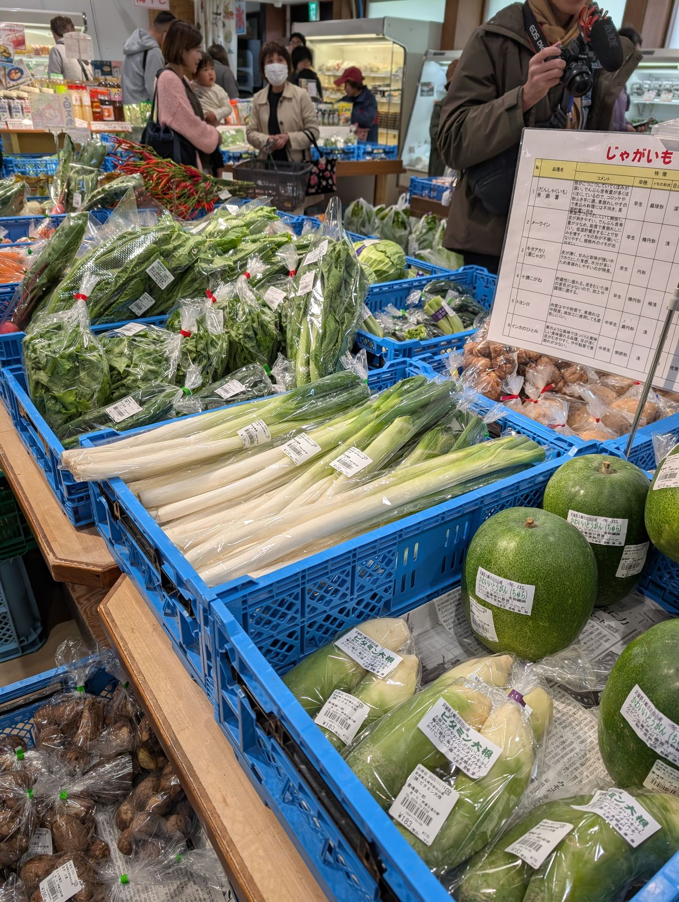
而台灣高速公路休息站的邏輯不同，多以政策主導、統一委外的方式經營，目前最大承包者是新東陽。因此台灣的小農品牌、文創商品會透過合作的方式進駐休息站，形成各地的「微型在地展示」。雖然模式不同，但目的類似：讓休息站不只是休息，而是聯繫在地文化的節點。台灣用「微創」的方式，把各地具有地方 DNA 的產品彙整起來，再統一媒合給新東陽。這樣的模式讓品牌不用各自奔走，也能在節慶、地區主題、短期活動或市集期間曝光。而若選擇長期上架，中小企業署也會透過較低的抽成支持年輕團隊，降低進入門檻。國發會則是用補助和獎勵金的方式扶植小企業，並串連金控企業，讓他們透過贊助或支付方式合作，形成一種互惠的 CSR 模式。
看完日本的道之驛，再回頭看台灣，我突然覺得我們正在做的事情其實有同樣的核心：如何讓一個「交通節點」變成一個「地方入口」。不只是販賣商品，而是展示、連結、推動在地價值。而這些政策背後的邏輯，可能比以前以為的還要更系統化，也更貼近所謂的「地方治理」。
山口老師在行前給大家需要思考的問題：
- 道之驛有賣甚麼？甚麼東西展現了當地的DNA？
非常多農產品，有在地特色的伴手禮。也針對了很多不一樣的客群，但最多的是食品、禮品類。也看得到日本知名IP(如吉伊卡哇、角落生物)的當地限定款。有些同學認為在地的溫泉饅頭、伊達正宗與木芥子相關的產品是他們最喜歡的，也很符合他們對在地的想像。
同時也有販賣高級的生巧克力，但跟空間的連結不高，覺得有點可疑，希望可以跟當地特色連結的限定巧克力。
- 客群有哪些？
目測大多30歲以上，觀光客跟在地人都很多，觀光客主要是購買伴手禮，在地人則是購買生活用品。後來有去觀察停車場裡面的汽車，發現最多的還是以仙台為主，再來是宮城、山形，其他的地區則零散幾輛。
- 還可以怎麼改善？～怎麼樣吸引台灣人？
royce希望可以販售更多跟在地有關的食品，因為相比其他商店，這家的商品比較沒有在地特色。生巧克力在台灣可能也都買得道，就相對還好。另外希望可以有更多熟食的攤位讓來到道之驛的旅客休息用餐。以這次的觀摩經驗來說，可以用餐的地方相對較少。
- 自己的感覺呢？有特別的觀察嗎（消費者／經營者的立場）
我蠻喜歡這個道之驛的，因為這裡有很多當地的農產品跟伴手禮可以買回去送禮。我發現這邊的熟食店其實不算多，選擇也不多樣，以來這邊用餐的消費者角度而言，會覺得不太知道吃甚麼比較好。但或許以經營者島角度而言，這個空間只適合餐車型的賣店以及幾間廚房，對於以「快速」、「有效」宣傳當地特色的角度來說，餐飲或許沒有那麼重要。不過以消費者角度而言，還是希望可以吃到當地特色的美食會比較好。
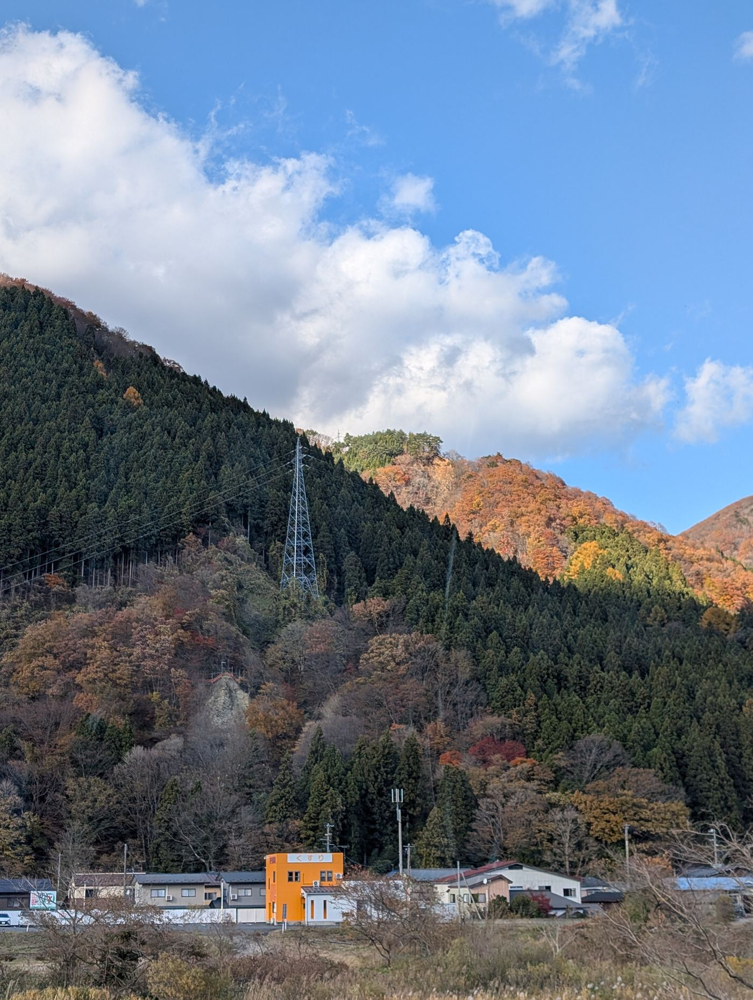
- 研究組
somespice-青年移居者的好生活與創就業支持系統
展開課程筆記
小觀察：現場用煤氣式的暖氣爐，齋藤理先生說，這是他們冬天的味道。
講者：齋藤理，目前從事森林旅遊、觀光、文化、溫泉。重新複習鳴子的相關知識，因為溫泉源泉約360個，但人口只有3000多人，或許是日本擁有溫泉源泉的比例最高的。而昨天泡的溫泉是紅色的，但鳴子溫泉種類有七種大多是黑色。
另外也有很多特色，如昨天的火山、木界子娃娃、栗子團子等等。
awesome tours
- AT：冒險旅遊
- 自然、文化、活動～成為旅客經驗⇒體驗、健康、自然影響力低、挑戰性～想法的變革
- 平均花費：43萬日幣～八成費用由在地業者取得
- 旅客怎麼找到他？旅客直接、旅行社、網路資訊．．．
- 有導覽（低階旅行）、協助安排食宿
- ＫＡＴＥＮＵＭＡ ＬＡＫＥ ＴＯＵＲ～水的顏色因為有溫泉的關係，所以有礦物質導致會有青色跟白色的顏色，每天都不一樣。
- 鳴子水壩也有溯溪活動
- ＷＩＬＤ ＯＭＳＥＮ ＨＩＫＩＮＧ
- 湯治文化的遺跡～1586開湯，但已搬離，現在只保存遺址。會有一些遊客到這邊自己泡湯，但齋藤理先生也會運用自己的力量去整理那個地方。
- LEAVE NO TRACE 無垢旅行～環保旅行⇒旅行同時對環境影響小
- 野外求生也很重要
- 古道旅遊＆多多觀看其他東西⇒才有其他的新發現
- 南原FARM TABLE與在地農家的合作
- 農業體驗
- 穴堰見學
- 昼食
～會介紹早期開發的歷史（地主慢慢挖，開墾）
金流都會在地區內流轉回饋在地，讓地域資源可以永續，並讓遊客可以感受到當地的魅力
ＣＯＲＥ
聚焦在這個支持系統如何做為在地的中介者，將生態、旅遊、在地業者串聯起來，提供給遊客。以及他們如何吸引更多的人。
這些認識的關係有共鳴、溫度的共同理念，以企業的話就是旅館，這邊有個協會聚集了不一樣的業者，包含木芥子娃娃的老闆也是成員之一。鳴子町有８５趴式森林，因此一直有在推動森林循環與保育。由於很多企業都跟木有關，所以大家也希望可以跟自然好好相處。
鳴子町有很多回鄉的人、來到這邊移居的人，老闆也是積極的在跟移居者合作，希望可以推動森林循環與地方創生。相關的活動有種水木的活動，大家都是為了在地而活動，也希望可以繼續增進人跟人之間的關係。
小觀察：現場用煤氣式的暖氣爐，齋藤理先生說，這是他們冬天的味道。
講者：齋藤理，目前從事森林旅遊、觀光、文化、溫泉。重新複習鳴子的相關知識，因為溫泉源泉約360個，但人口只有3000多人，或許是日本擁有溫泉源泉的比例最高的。而昨天泡的溫泉是紅色的（含鐵），但鳴子溫泉種類有七種，北部多是綠色，黑色則是只有鳴子町有。
另外也有很多特色，如活火山（這裡就有日本1/10）、木界子娃娃、栗子團子等等。
awesome tours
旅客以歐美人居多
- AT：冒險旅遊
- 自然、文化、活動～成為旅客經驗⇒體驗、健康、自然影響力低、挑戰性～想法的變革
- 旅遊生態祭（結合業者、農夫、店家）
- 因鳴子町85趴都是森林，所以會以自然環境為主打
- 旅客怎麼找到他？旅客直接、旅行社、網路資訊．．．
- 平均花費：43萬日幣～八成費用由在地業者取得
- 有導覽（低階旅行）、協助安排食宿
- ＫＡＴＥＮＵＭＡ ＬＡＫＥ ＴＯＵＲ～水的顏色因為有溫泉的關係，所以有礦物質導致會有青色跟白色的顏色，每天都不一樣。
- 鳴子水壩也有溯溪活動
- ＷＩＬＤ ＯＭＳＥＮ ＨＩＫＩＮＧ
- 湯治文化的遺跡～1586開湯，但已搬離，現在只保存遺址。會有一些遊客到這邊自己泡湯，但齋藤理先生也會運用自己的力量去整理那個地方。
- LEAVE NO TRACE 無垢旅行～環保旅行⇒旅行同時對環境影響小
- 野外求生也很重要
- 古道旅遊＆多多觀看其他東西⇒才有其他的新發現
- 南原FARM TABLE與在地農家的合作
- 農業體驗
- 穴堰見學
- 昼食
～會介紹早期開發的歷史（地主慢慢挖，開墾）
金流都會在地區內流轉回饋在地，讓地域資源可以永續，並讓遊客可以感受到當地的魅力
ＣＯＲＥ
聚焦在這個支持系統如何做為在地的中介者，將生態、旅遊、在地業者串聯起來，提供給遊客。以及他們如何吸引更多的人。
這些認識的關係有共鳴、溫度的共同理念，以企業的話就是旅館，這邊有個協會聚集了不一樣的業者，包含木芥子娃娃的老闆也是成員之一。鳴子町有８５趴式森林，因此一直有在推動森林循環與保育。由於很多企業都跟木有關，所以大家也希望可以跟自然好好相處。
鳴子町有很多回鄉的人、來到這邊移居的人，老闆也是積極的在跟移居者合作，希望可以推動森林循環與地方創生。相關的活動有種水木的活動，大家都是為了在地而活動，也希望可以繼續增進人跟人之間的關係。
- 日誌
講者｜齋藤 理（森林旅遊、觀光、文化、溫泉領域）
（一）歷史與地方脈絡
鳴子町以溫泉聞名，源泉數量約 360 個，人口僅 3000 多人，是日本溫泉密度極高的地區之一。本區共擁有七種溫泉泉質，顏色與功效各異，例如昨日體驗的紅色鐵質溫泉，以及北部常見的綠色泉水，黑色泉質更是鳴子特有。這些溫泉類型與火山地形緊密相連，鳴子所在區域擁有日本 1/10 的活火山分布，使溫泉文化得以持續千年。除溫泉外，鳴子亦以木芥子娃娃、栗子團子等地方工藝與食文化聞名，形成「自然—溫泉—工藝」的多層次地方樣貌。當地冬季使用煤氣式暖氣爐，齋藤先生形容這是「冬天的味道」，亦是日常生活的一部分，反映地方文化並非只存在於觀光層面，而是與生活細節深度交織。
溫泉文化的歷史同時伴隨湯治傳統而生。鳴子湯治遺址自 1586 年開湯，原本為長期療養者停留之處，如今已遷移，但遺址仍吸引訪客。齋藤先生亦會自發整理遺跡周邊，使其維持可進入性，顯示地方文化維護多半仰賴居民自主行動。
（二）地方行動與觀光模式（organizing / action）
齋藤先生經營的「awesome tours」以「冒險旅遊（Adventure Tourism, AT）」為核心理念，主打自然、文化與戶外活動體驗。冒險旅遊重視低環境負擔、身心挑戰與文化接觸，強調旅客透過行動獲得觀點的轉變。鳴子町超過 85% 為森林，使自然生態成為最具吸引力的旅遊主題。
主要活動包括：
- 湖沼探訪（Katanuma Lake Tour）：湖水因溫泉礦物質呈青／白色，色調每日變化。
- 溯溪與野外溫泉健行（Wild Onsen Hiking）
- 森林教育、野外求生訓練
- LEAVE NO TRACE 無垢旅行：強調環境友善的旅遊方式，降低遊客足跡。
- 南原 FARM TABLE 農家合作行程：包含農耕體驗、穴堰見學與在地食材午餐，並介紹早期開拓史。
在金流方面，平均旅遊消費約 43 萬日圓，其中八成費用由在地業者取得，使資源能在地方內部循環，回饋在地社群與產業鏈。此模式強調地方價值應透過旅遊直接反饋給地方，而非外流。鳴子亦透過舉辦旅遊生態祭、串聯店家、旅館與農家，形成跨業合作網絡，使地方能以整體方式對外呈現。齋藤先生指出，旅客來源包括直接預約、旅行社合作與網路搜尋，顯示國際旅客對冒險旅遊需求已具有成熟市場。
（三）人才與社群培育（中介者角色、移居者／年輕世代）
齋藤先生在這個產業中擔任的是「中介者（mediator）」的角色，串連生態、旅遊資源、旅館業者、工藝師等，使旅客能獲得完整體驗。鳴子地區擁有多個跨領域協會，其成員包含旅館業者、木芥子職人、農家等，形成支持系統，使地方行動得以長期推進。鳴子有許多回鄉者與移居者，他們多擁有跨域背景，並願意投入森林循環、環境教育與地方創生。協會與業者積極與移居者合作，例如參與植栽水木、森林保育等活動，希望透過共同勞動使人與土地的關係更加緊密。森林旅遊與冒險旅遊中的「協作」形式，也拓展地方的人際網絡，讓異業間能以共享理念（環境友善、循環經濟、生活連結）進行合作。齋藤先生認為，年輕世代的加入能帶來國際語言能力與新型態的創意，使鳴子在推廣對外交流時更具彈性。
此次的講座與觀摩讓我們發現鳴子的觀光模式不僅依賴自然資源，更透過「人—業者—土地」的連結建立永續循環。森林、溫泉與在地產業並非分散存在，而是透過中介者的角色被重新整合，形成鳴子特有的旅遊與生活文化。
一到講座現場，就聞到濃濃的汽油味。講者齋藤理先生說東北地區冬天都會使用煤氣暖爐，所以我們聞到的汽油味就是鳴子冬天的味道。
齋藤先生目前從事森林旅遊、觀光文化推廣與溫泉導覽。目前鳴子町人口約三千多人，但溫泉源泉卻多達三百六十個，是日本擁有溫泉密度最高的地方之一。在本次旅程中住的旅館yusa所使用的紅色溫泉水即是七種中的其中一種，而鳴子甚至有只有這裡才有的黑色溫泉。齋藤先生在當地的主要行動是將鳴子「變成」一種深度體驗， 因此開創了「Adventure Tourism」的概念。齋藤先生分享了他的 awesome tours。他提到，他的旅客大多來自歐美，偏好的是「冒險型」的旅行方式：不是看風景，而是用身體、感官、思考去「體驗」自然。像是Katenuma Lake Tour，那座湖因礦物質每天變換青色、白色，行程中也有可以沿著水壩走的溯溪行程、走訪湯治文化遺跡、野外求生課程、古道旅行等，我覺得這些活動不只是「旅遊」，更是讓一個人真正走進當地生活與環境的契機。齋藤先生提到，一趟行程平均 43 萬日幣，八成的金流都回流到在地業者手中，所以他也在透過旅行的方式，在建立一個能讓在地永續的循環。
在齋藤先生提到的例子中，他與南原農家合作，旅客可以在田裡工作、在遠古開墾過的水渠旁吃午餐，一邊聽早期地主怎麼挖水路、怎麼開墾，「活用」在地的歷史與土地。
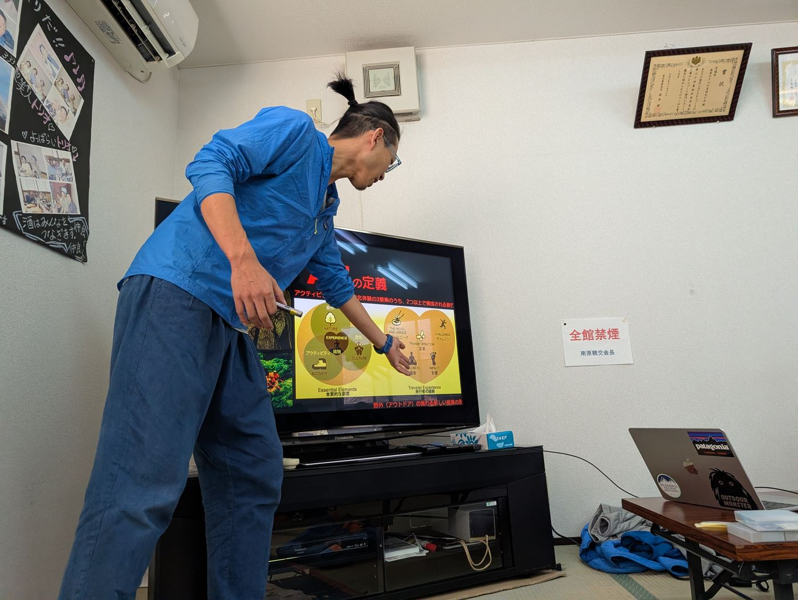
鳴子町 85% 都是森林，因此木工、木芥子娃娃、森林循環、保育、自然旅遊幾乎是同一個生態系。很多業者都跟木材有關，也很自然地成為一起推動永續森林的夥伴。從職人、旅館、農家到導遊，大家都在為「同一片土地」工作。齋藤先生在做的其實就是把人與資源串起來的「中介系統」。我特別喜歡他講的一句話：「大家都是因為喜歡這個地方，所以想讓這裡變得更好。」這裡有很多移居者，也有很多回鄉的人。齋藤先生自己也一直在跟不同背景的人合作，從種水木的活動到森林循環的計畫，都是為了讓人與土地靠得更近。
在這次的分享裡我知道這裡的行動者不是把地方「變得更觀光」，而是讓地方的生活本身變得「更有人想留下、也更值得被看見」。齋藤理先生的分享讓我看見鳴子不是一個觀光地，而是一個「有人生活、有故事、有循環」的地方，而觀光，只是那些故事和人們的日常被看見的一種方式。
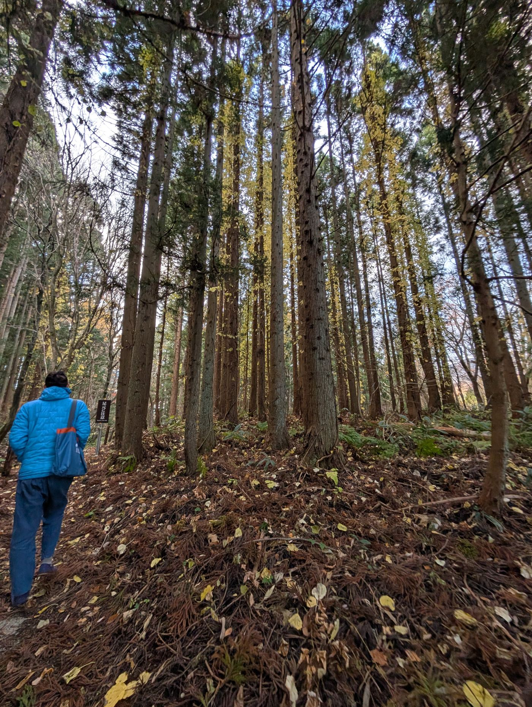
- 研究組
Day 05
宮城縣栗原市花山區一般社團法人花山網路
November 16, 2025
＋
宮城縣栗原市花山區一般社團法人花山網路
宮城縣栗原市花山區一般社團法人花山網路
展開課程筆記
邁向「小型據點」建設的十年歷程~由居民主導推動的地方創生~
講者：海山裕太
- 前言：選擇最喜歡最有感覺的照片、分享感受、聽聽看別人的想法、思考共通點～
- 花山介紹：
- 交通
- 從台灣出發飛機加鐵路的話約五小時。
- 旁邊有非常多很棒的景點，如鳴子溫泉、銀山溫泉、世界遺產平泉。
- 自然：森林面積超過90趴，農林資源非常多，像是：東石楠花、水芭蕉花都是日本特別重視的花卉。
- 美食：蕎麥麵、山菜、菇類、岩魚（當地特色）、野生山藥
- 體驗：三處溫泉、花山青少年旅行村（露營）、花山青少年自然之家（果小生、國中生住宿體驗）、花山湖冰吊細鱒魚
～以自然、體驗為主
- 地方創生背景
- 一般社團法人花山網路沿革
- 2014年成立「小型據點建設」推進協議會
- 2018法人成立
- 2023 獲得內閣總理大臣獎
- 社區營造（2014年推動「小型據點」建設）
- 「城鎮·人·工作創生法」⇒國家政策～以花園市中心的三百公尺開始基礎建設（車站、）警察局、郵便局
- 以社區居民為主的營造組織
- 「喚起意識－行動確立－生活維持－收入保障」以社區居民為出發點，郵居民主導行動體制，維持日常生活的設施，保障日常民生。
- 聚焦花山地區的課題，轉化為專案
| | 問題 | 解方 |
| --- | --- | --- |
| 人口 | • 最多的時候是1956年4560人，之後慢慢下降，2005年花山村併入栗原市，人口約1500人。在十年間人口減半。
• 人口減少+高齡化(59趴)+生產人口下降 | 體驗住宅、行政區合併 |
| 空屋 | 野生動物進入、破壞 | 空屋活化用民宿 |
| 交通 | 高齡者無法開車 | 建立共乘需求型交通 |
| 購物 | 個人開的便利店、道之驛、自己經營的餐廳～最近的便利店也要開車20分鐘 | 開設行動販售車、經營「旬彩」交流中心 |
| 交流 | 聚會場所不足 | 花山公民館經營，增加就業機會 |
| 震災 | 因輻射的問題花山地區禁止販售山菜與菇類 | 整備周遭環境，進行放射能檢測 |
- 【人口減少對策】
- 「交流－關係－定住」：從認識、交流道願意長久居住
定居：給予補助，創立三年計畫⇒針對對地方有興趣的人
- 移居者
| 類型 | 原居住地 | 移至 | 居住原因 |
| --- | --- | --- | --- |
| U型 | 栗原 | 栗原 | 退休為主 |
| J型 | 宮城 | 栗原 | 照顧家人、工作 |
| I型/移居 | 宮城縣外 | 栗原 | 職業關係(以20-50歲為主) |
| 雙城生活 | 夏天在花山 | 冬天在其他地方 | 數位游牧 |
- 海山先生為何移居來這呢？
～奶奶家在栗原
～大學時代參與了栗原市的調查專案
～研究原因跟當地人有連結
搬來之後～喜歡歷史、文化、技術的部份，被打動，希望可以分享自己所感動的地方
- 空屋對策
- 2017年閒置空屋調查→存在77棟閒置房屋
- 開始慢慢整理、想辦法活用（居住用、交易成立、市政府專案據點）
- 例子：
- 團子店～2018年開始。
- 團子店的DIY工作坊～與搞笑藝人合作
- 小圖書館空間
- 民宿小豆佃～2022年開始
- 老屋改建成住宿設施
- 花山舞祭
- 休憩象徵的DIY工作坊
- 聚會
- 舊千葉宅邸
- 原本是服飾店，交通良好（中心），位於道之驛正前方
- 湖畔的店 與旬彩
- 社區咖啡店的概念，也提供外地人可以一起交流
- 舉辦活動超過５０場
- 石楠花中心
- 活動、咖哩日
- 道之驛 路田里花山
- 觀光客為主，提供當地的食材料理與伴手禮
- 工作坊主題發表
- QA
- 怎麼獲得產權以及可以進屋的許可？
- 達成信任
- 經費如何而來？怎麼篩選房屋的優先次序？
- 從國家政府、縣政府那邊申請補助金，以空屋活化的名義撰寫企畫書。空屋活化的主要成本以人工最多，再來就是設備跟垃圾處理。但是處理垃圾的部分是由屋主負擔，因為這部分不給核銷。
- 優先次序首先是外觀、跟居長、居民聯絡可不可以合作，但全部77件最多能馬上使用的只有2、3件，其他都需要整理
- 補助金透過誰申請的？
- 花山網路（協會）協助申請
- 空屋經營是協會做的、民宿是業者、空屋的補助金來源是政府給予，但政府會補助幾成呢？
- 行政只能是
- 設計團隊
- 花山網絡協會的團隊成員
- 你是地區協調員，請想出讓台灣人想來花山的政策。（至少使用一項今天報告的設施）
工作坊心得
我們小組聚焦在吸引年輕人來到花山地區學習語言與農業相關知識，透過語言學習以及農業知識學習，吸引20~35歲的單身青壯年，鎖定這群人的原因是因為這群人經歷一個正在尋找自己、願意移動、願意嘗試的階段，我們認為他們更容易也更願意移居到這個地方。而半年以上的停留也不是為了「深度旅遊」，而是讓人真的有機會在這裡生活：知道哪裡買菜、哪裡喝咖啡、哪裡會遇到鄰居——那種生活感是三天兩夜不可能做到的。
透過這個計畫，不管事學校的空間、學生宿舍，都需要將老舊空間重新使用。我們希望可以把「地方問題」，在我們的方案裡變成「地方資源」。配上語言課、農業技職、在地輪班實習、幫店家做雙語菜單等體驗活動與實習，讓學生住進古民家，他們所體驗的整個生活就是學習本身。
我們的方案希望可以處理空屋、就業、外國友善等問題，可是方式不是挖東牆補西牆，而是邀請一群願意探索自己的人，在這裡重新長出新的生活。如果有人因為半年而愛上這裡，那這個地方就真的開始變得不一樣了。
看大家的簡報會發現大家都聚焦在花山地區的人口老化、就業人口不足、交通不便的問題，大家都希望可以活化地區、建立生活支持系統，讓這個地區變得更加宜居。而對於外國人來說宜居最重要的就是工作機會以及語言友善問題，因此如何解決是非常重要的。
同學們的報告都非常有趣，其中對於app與AR科技的運用特別有趣，這是一個相對活潑的提案，讓我印象深刻。
海山裕太先生一開始讓我們自己挑的照片，選一張最喜歡的照片，然後跟小組分享為甚麼選擇這張照片。這些畫面都是花山地區的景緻，每一張照片都乘載了當地的文化、自然景觀與生活感，可以看到這些照片真的太開心了！花山是一個森林覆蓋率超過 90% 的地方，花卉、山菜、岩魚、蕎麥麵、溫泉都是生活的一部分。附近就是鳴子、銀山和平泉等景點，有很完整的自然、人文體驗資源。海山先生說花山的魅力不是「景點」，而是「生活」本身。
花山地區的地方創生的核心是以居民主導，而非政府主導，其2014 年開始推動「小型據點」建設，重點不是蓋設施，而是讓居民自己提出需求、居民自己行動，政府只是在旁支持。他們把每個課題拆成可行的行動：
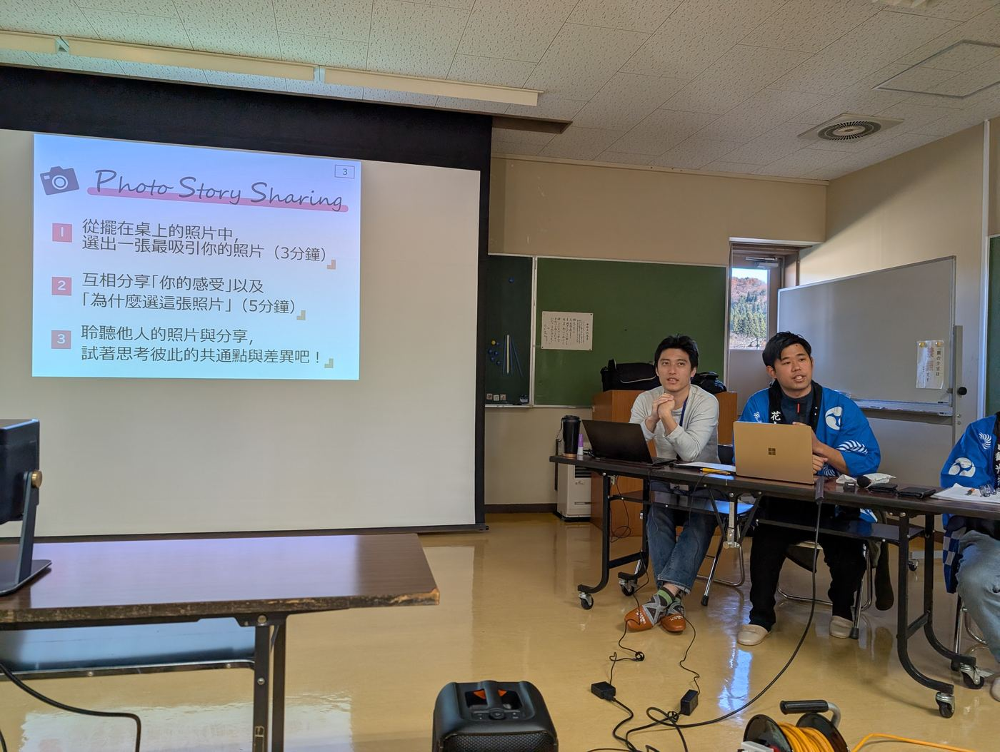
海山先生作為一位移居者，他提到做地方創生或是吸引人移居的步驟是人要先來、再互動、再喜歡，最後才會留下。組織整理了一個非常完整的圖表：
| | 問題 |
| --- | --- |
| 人口 | • 最多的時候是1956年4560人，之後慢慢下降，2005年花山村併入栗原市，人口約1500人。在十年間人口減半。• 人口減少+高齡化(59趴)+生產人口下降 |
| 空屋 | 野生動物進入、破壞 |
| 交通 | 高齡者無法開車 |
| 購物 | 個人開的便利店、道之驛、自己經營的餐廳～最近的便利店也要開車20分鐘 |
| 交流 | 聚會場所不足 |
| 震災 | 因輻射的問題花山地區禁止販售山菜與菇類 |
因此他們的移居政策不是補貼，而是先讓人「來住住看」，透過活動、空屋據點、公民館讓人跟地方建立關係。他自己也是因為大學時做調查，與居民有連結，才選擇回來。移居不是浪漫，而是一次次被地方打動後的選擇。這種「交流 → 關係 → 定居」的模式讓這個地區的移居者對地方有一定的認同感，因此他們也會願意成為向海山先生一樣的行動者，將感動回饋地方，推廣到外地。
| 類型 | 原居住地 | 移至 |
| --- | --- | --- |
| U型 | 栗原 | 栗原 |
| J型 | 宮城 | 栗原 |
| I型/移居 | 宮城縣外 | 栗原 |
| 雙城生活 | 夏天在花山 | 冬天在其他地方 |
在來海山先生提到花山地區的空屋活化問題，2017 年調查花山有 77 棟空屋。其中最重要的就是居民的信任，只有他們願意信任協會與工作者，活化才有可能發生。在這個脈絡下，空屋再生不是工程問題，而是關係問題。活化出來的空屋非常多元：團子店（圖書館＋DIY）、民宿小豆佃（祭典＋聚會）、舊千葉宅邸（位於道之驛前，成交流樞紐）、湖畔店・旬彩（咖啡 × 社區據點）、石楠花中心（活動場所）等。這些地方不僅是觀光用途，更是當地居民的生活的據點。
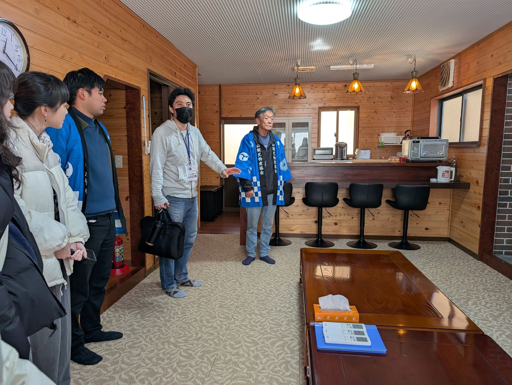
由於花山地區自３１１震災後也重建的很辛苦，所以這些據點除了純粹的工具用途外，也是希望可以「把生活重新建起來」，花山網路希望把居民、小孩、移居者、空屋、商店、自然串連起來。
後來我們去了非常多的地方，主題是用古屋改建的各類房子，我最喜歡在湖邊的那間民宿，旁邊有個小圖書館，房間裡還有可以直接看到湖邊的陽台，覺得非常溫馨。我本身又是很喜歡書的人，所以真的住在那邊的話我應該會一直在圖書館裡面吧！
路過的道之驛
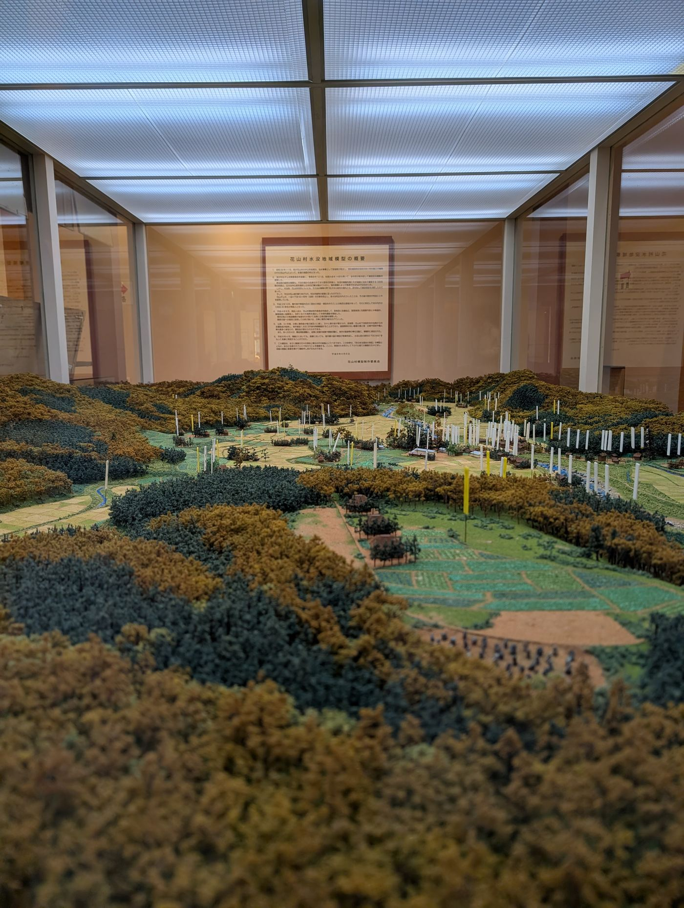
居民活動中心中的展覽
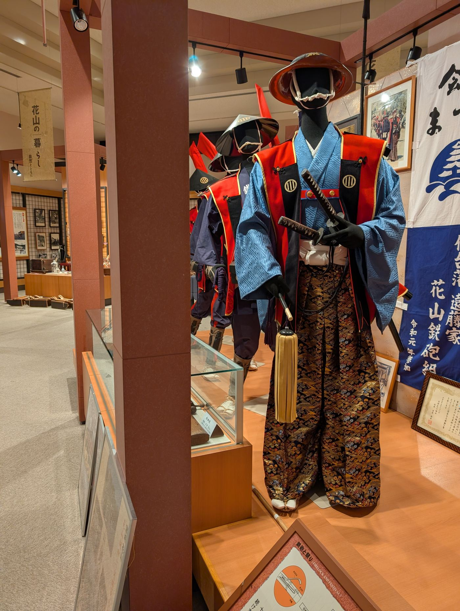
Day 06
sun brew 廢校、空屋活化及地方創生創業支援系統、鳴子町提案工作坊
November 17, 2025
＋
sun brew 廢校、空屋活化及地方創生創業支援系統、鳴子町提案工作坊
sun brew-廢校、空屋活化及地方創生創業支援系統
展開課程筆記
講者：伊藤理惠～從事教育、勞務、人事相關。
「生活學習學校」－擴大農村人口規模的新挑戰
前言
不太會用地方創生這個詞，而是「創造街區」。必須要這三個才能做出來：協調人員、創業者、財務。以協調為主，目前是創業。
想要創業的契機是因為移居台灣的經驗，因為語言不通的關係，就希望可以跟大家產生連結，回饋大家，所以在台灣開設跟花藝有關的教室。
後來因為老公外派工作五年結束的關係，回到了日本駐在宮城，但在２０１０年時候遇到了３１１。在這次震災的經驗接受了很多人的幫助，在此之前其實對地方創生沒有興趣，但因為這次事件後，就覺得應該要為自己的生活做點甚麼。後來宮城縣的人口越來越少，高齡化問題也變的嚴重。儘管不是專業的，但現在集結了很多人的力量，去做計劃，協助地方協助農民。
three days 介紹
- 事業領域：創業支持、職涯支援、企業研修、地方協調
- 企業理念：希望每一個人能實現自己想要做的事情，同時維持多樣性，給與大家溫柔的支持。
- 由來：移居到宮城縣之後發現很多女生儘管大家都有執業證，但都沒有工作。好奇地詢問後才發現在大崎市沒有這個機會，一個是沒有溝通的機會，第二是希望以優先照顧孩子為主。但工藤小姐覺得一天三個小時也好，希望給他們機會。
- 目前組織包含：共享空間、旅館兼學校…
- 工作內容
- 與公部門合作的方式：跟公部門提案後，會提供補助金。目前維持每年12個專案，對象包括工程縣政府、大崎市，也有其他地區。由於沒有業務部門，所以多是政府來找他。大約是每年7、8月的時候會由公部門去找他。會用這個機會跟公部門說他提案，不只會說他想要做的事情而已，還有提及他做的這部分對社區的貢獻。
- 創業支持、職涯支援：其中一個做的事「地域創生協力隊」，這個協力隊都是移居者。因為他們只有三年有新水，所以之後可能會進入地方工作或創業，因此宮藤小姐就會從旁協助。
- 地方協調：一定要把握地方的狀態與公部門的語言，對他們來說公部門與民間不同的想法不是麻煩，更是想想這要怎麼做才能變得更好，所以從中協調是很重要的。所以有個職業就叫「地域協調」人員，這個工作一定要有熱情或是喜歡這個地方。所以做這個工作時，有沒有理念是很重要的。也有人事在做的時候慢慢發現地方的好，然後更細心的從中協調，讓事情慢慢變好。
- QA
- 財務怎麼維持、運作的呢？
- 工藤小姐：補助金以政府為主、但募資就是組織來。以日本現況，地方創生都是跟公部門合作，但民間企業也需要有營運能力。會舉辦相關的活動，但後續的經營狀況不是公部門會協助的，因此組織自己就要考慮這部分。
- 彭老師：首先還是確認理念，讓他變成行動，有行動後就會有志同道合的朋友一起行動。在持續的行動當中，就會遇到更多一起合作的夥伴，青創、跨國、藝術家、學校等合作夥伴。慢慢把他們變成常態性的合作。如何變現呢，則是跟觀光團體合作，此時伊這客戶的需求去規劃觀光的行程，將地方的特色因人而異的訴說。先依照地方需求，在思考這中間可以變現的方法是甚麼。
- 公部門的對接窗口是誰？
- 主要有三種：移居定居政策的部門（協力隊）→類似台灣的內政部移民署，台灣會有關懷新住民的活動，跟就業站、中小企業署的部分（協助企業扶持）、農業。
- 會開相關的說明會嗎？還是地域協調員起頭為主？
- 當甚麼都不知道的時候可能會由工藤小姐這樣的人來協助，才會慢慢知道地方的狀態、人力資源跟公部門協調的眉角。
- 協力隊其實全國都有，有各式各樣國籍的人。
以創業者的立場所做的行動
- 核心：創業輔導（台灣的創業風氣比日本更加興盛，日本人的顧慮可能更多）
- 公部門的機會會比較穩定、風險低→工藤小姐會幫助想要創業的人，給予簡單的輔助機會
- 小問題：創業需要甚麼呢？
- 潛在的創業家行動→讓他們認識已經創業的人
- 研討會、讀書會
- 提供創業學習機會
- 會給潛在創業家稍微挑戰一下，因為民族性比較穩定，所以要一步一步來
- 創業輔導
～有共享辦公室、協會會員提供空間使用如廚房→扶持到不需要協助為主
～雖然共享辦公室很遠，但還是會有很多不一樣地方的人來到這邊呢？～黏著性（可能是因為大都市壓力大、因緣際會認識後來到這個地方）
～也會用email定期傳資訊給大家（輕鬆的、資訊類型的都有）～
～不管是好的事還是不太好的事， 都希望在分享會理跟這些創業家說，讓他們知道產業的樣貌～
～簡單的交流也很好，但最重要的是可以持續下去～
從廢校改來的完全旅館「學校」+「溫泉旅館」
- 核心：希望除了創業的方式，可以認識潛在未來創業的人，還有透過實作經驗更加知道問題，可以用這接實職經驗幫助大家。
提供一個地點讓大家沉澱～丹麥有這個教育理念，因此這個模式是參考他們的
- 為何地點在鳴子町？
- 問題發現：人口減少、旅館業業者漸漸消失、
- 解決方式：想要透過旅館業的方式稍微努力、復興一下當地，透過這個機會跟當地人建立關係，如果任是外地人也希望可以增加關係人口⇒工藤小姐想要努力的部分
- 2021疫情～「危機就是轉機」⇒用一輩子的時間想要做的事情→花三個月的時間跟這些人一對一聊天。大家互相支持，並建立了營運委員會，委員會成員來自各地。
- 2022丹麥研習中也是做了工作坊的是做，後來公部門找他做農業相關的計畫（長期）
- 2023年提案給宮城縣政府農業科，後來成為宮城縣政府的專案，儘管金額不高，但是不無小補。人力成本的部分由公部門負擔。目前就是以旅館業、學校課程（明年1月）
- 課程內容
- 核心：放鬆、藝術、自然、體活（當地文化班）
- 營運狀況：以學校為中心，周遭協力成員～委員會、當地課程講師、公部門宮城縣農業科、丹麥學校合作、扶持的創業夥伴
- QA
- 這個空間是學校也是旅館，課程會在這個地方或是去外面，也有二樓。
- 簡單的工作在這個地方也是可以的，大多是朋友們來拜訪，目前還沒有真正的咖啡廳營運。借用空間可能500日幣，空間+輔導1.5萬日幣，輔導+獨立空間2.2萬日幣，目前是以輔導+獨立空間2.2萬日幣的方案最多人選。
- 輔導過最多的案例，是心理面想要、有規劃但沒有勇氣。以隨緣的心態，用對話的方式來跟他們說怎麼做會比較好。有開始創業之後的人的輔導，大多是營業中但狀況不好的業者。那如果有這種問題的時候，但一定會說的部份是「不要賣東西而已，要賣故事」，要知道自己抱持的怎樣的熱情、使命感在做這件事情。
- 目前學校課程剛開設，還在思考應該要怎麼宣傳，因此目前還沒有太對外開放的讓大家來參與，先以可以聯絡到的人來參與為主。希望可以先請理念相同的人邀請，試做之後慢慢調整。
今天的講者是之前來過金魚厝邊的伊藤理惠小姐，她的背景跨越教育、勞務和人事，也從事地方創生的工作。但她自己說，比起「地方創生」，她更傾向用「創造街區」來理解自己的工作，因為地方如果要動起來，需要三種角色：協調者、創業者、以及能處理財務的人，而她目前落在協調與創業之間。而他為甚麼想要開始接觸這部分的工作，是因為他人生裡兩個關鍵轉折，第一個是曾移居台灣。因為語言不通，她很強烈地希望能和當地建立連結，後來就開了一個花藝教室，把這個願望具體化。第二個是 311 大地震。她說在震災裡獲得很多人的幫助，讓她第一次認真想「為地方做點事」。後來宮城的人口持續下降，高齡化越來越嚴重，她當時雖然不是專業，但開始把周圍能一起做事的人聚起來，慢慢形成現在的組織。接著，她介紹了自己的組織 THREE DAYS，範圍從創業支持、職涯陪伴、地方協調，甚至是今晚住的旅館兼學校，她的理念就是希望讓每個人都能做自己想做的事，同時保有多樣性。
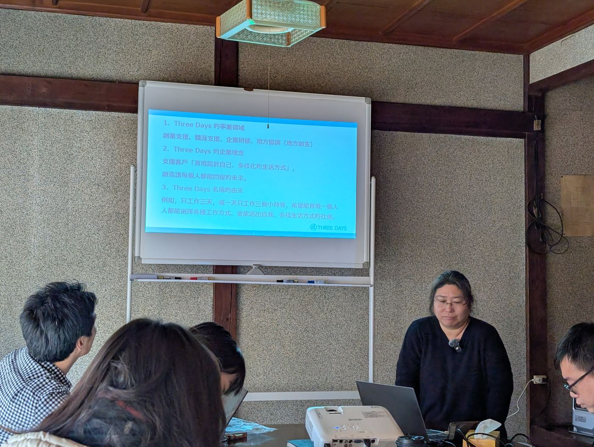
她提到一開始注意到宮城很多女性「有執照、沒工作」。原因不是能力不足，而是沒有溝通機會，也希望照顧孩子，但其實對他們來說，一天三小時的工作就已經能帶來很大意義，THREE DAYS 的計畫就是從這樣的日常觀察開始。她也談到組織跟公部門合作的模式，公部門通常會主動接洽，THREE DAYS 則需要具體告訴政府「我們的行動如何回到地方」。不過以目前的狀態來說，儘管日本的地方創生機會多半來自政府，但民間還是必須自己想辦法活下去。其中「地域協調」的概念是我認為最困難，但也是最重要的，這些組織需要懂地方，也要懂公部門的語言。協調的難點不在「衝突」，而是在「如何讓不同的立場變成可能的合作」。
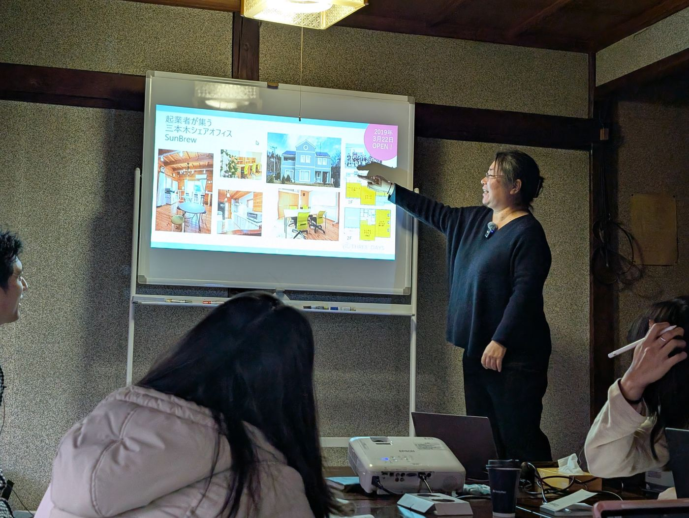
THREE DAYS其中一項重要業務就是創業支持，她認為，日本人往往顧慮多、步子小，所以輔導方式要以漸進的方式，讓大家一步一步建立信心。她給予的創業扶持有這些：認識已經創業的人（研討會、讀書會）、給予學習資源、設計小型挑戰、包含共享辦公室、會員空間、廚房等。其中我很喜歡他提到的顧客「黏著性」，明明辦公室偏遠，但就是有人特地跑來。大城市壓力大，人只要認識到某個地方就會願意繞遠路來休息，在來世，大家都很信任伊藤小姐，「就是因為他在，所以多遠都願意過來。」的這個心態，讓很多青年創業家聚集在此。另一個重點是透明。她會把好事與壞事都在分享會講清楚，讓大家知道地方創業的真實樣貌。
她目前最投入的新計畫，是把廢校改成「學校＋溫泉旅館」的複合空間。核心理念是辦一所「讓人沉澱」的學校，參考丹麥的模式，強調放鬆、藝術、自然、在地文化等。有同學提問到，為何選擇鳴子町的溫泉飯店，他說道，因為目睹了這個地區旅館一間間消失，而人口減少的速度遠比想像中快。她希望至少能在旅館和住宿業上做點努力，同時讓更多外地人願意和地方建立關係。「如果就這樣不見的話就太可惜了。」用著這樣的心態來思考。這個計畫在 2021 疫情後開始醞釀，她花了三個月跟各方人士一對一討論，從而形成第一個營運委員會。後來又因丹麥研習的契機，接到了農業科長期合作案。2023 推出提案後，這個案子正式成為宮城縣的專案。目前旅館空間還在試營運階段，課程剛開始，因此大多讓理念相近的人先進來，慢慢調整。
整場聽下來，我覺得伊藤小姐的路徑很不同於我們在台灣看到的「地方創生模式」。她不從「專案」出發，而是從「人」出發：
——觀察到誰被落下
——把他們拉進某個小空間
——再讓這個空間長成系統
整個過程都很生活化，甚至有點像把生活縫縫補補，最後拼成一塊地方的未來藍圖。我自己覺得最有參考價值的是她的「漸進式創業輔導」與「協調者」這件事。她不是站在上面指揮，而是站在中間串起本來互不相干的人，讓事情自然往前走。比起大型企劃，她的方法更接近「細水長流的持續修補」。但實際上，這或許才是農村最需要的能量。
- 研究組
一、背景與問題意識
講者伊藤理惠，長期從事教育、勞務與人事領域。她提出，地方再生並非「地方創生」式的口號，而更接近「創造街區」。其核心需同時具備三種角色：協調者、創業者、財務管理者。她現階段以「協調者—創業者」身份行動，在此之前，其實他對於這塊內容未有涉略，但後來因為因為一些機緣巧合而投入地方工作，這些契機包含：
移居台灣的經驗——因語言隔閡而希望建立連結，後來在台灣開設花藝教室。
2011 年東日本大震災——受到多方協助後，開始意識到自己應為地方做些事。
宮城縣長期面臨人口減少與高齡化，促使她開始集結各類資源，共同協助農村。
二、THREE DAYS 組織介紹
事業領域：創業支持、職涯支援、企業研修、地方協調
組織理念：讓每個人都有機會實現想做的事，同時維持多樣性並提供溫柔的支持。
成立背景：發現宮城地區許多女性雖具備執業資格，但因缺乏溝通機會、育兒需求等因素而無法工作。THREE DAYS 由此開始提供彈性工作與交流空間。
組織型態：包含共享空間、旅館兼學校等多功能據點。
三、主要業務內容
與公部門合作：
每年約承接 12 個公部門專案（宮城縣、大崎市等）。公部門通常主動接洽；組織需同時說明「想做的事」與「對地方的貢獻」。補助金由政府提供，但後續營運仍由組織自行維持。
創業支持・職涯支援：地域創生協力隊（多為移居者）。
協力隊多採三年期制度，任期後需在地就業或創業，因此 THREE DAYS 提供後續輔導。
地方協調（地域協調員）
此角色需理解地方現況與公部門語言差異，並在兩者間協調。講者強調：地區協調需具備「理念」、「熱情」、「對地方的喜愛」。協調不是排除差異，而是找到能讓地方變更好的途徑。
四、財務運作與對應措施（Q&A）
目前組織的財務來源以政府補助金為主，活動營利、募資與觀光合作為輔助收入。因此在公司營運上，需要與公部門的窗口移居定居部門（協力隊），還有就業相關的處理部門（類似台灣的中小企業署）等。
在創業支持上，初期多由協調者直接陪伴移居者理解地方狀況。另外伊藤小姐提到一個重要的國家政策，「協力隊」，這個制度遍布全國，各國籍成員皆可參與。但如何在這三年內讓協力隊成員對這裡產生情誼，並且願意留下來，這是目前伊藤小姐正努力的方向。
五、創業支持的具體作法
引介創業者：研討會、讀書會等基礎接觸。
提供學習機會：課程、技能講座。
設計輕度挑戰：依日本民族性採「循序式」挑戰。
正式創業輔導：共享辦公室、會員空間、廚房設備等。
補充：共享空間雖偏遠，但具有社群黏著性，因此會使用EMAIL的方式，定期提供資訊更新。組織每周都會舉辦分享會，其重視透明度的特點，讓創業者可以在現場討論成功與失敗的案例，是日本相對少見的公開討論。伊藤小姐提到，創立組織的目標不是大量擴張，而是持續、穩定地陪伴，讓大家願意嘗試。
六、「廢校 × 旅館 × 學校」的複合空間
講者目前主要推動將廢校改建成：「完全旅館」＋「生活學習學校」。核心目的在於提供「沉澱」與「重新學習」的空間，辨識並培育未來可能的創業，也希望透過住宿、課程與在地互動擴大地方關係人口。這裡的課程活動以放鬆、體驗為主，因空間目前處於初期階段，優先邀請理念相同者試行，持續調整後再擴大對外。
七、輔導常見問題（Q&A）
有同學詢問，已知旅館空間兼具學校與工作場域，但是否還有其他使用的可能。伊藤小姐回覆到，空間租借費用依需求而異（例：空間使用、輔導組合）。目前都還是已有人拜訪，租借為主，收費的部分就不會這麼硬性，但也是可以繼續思考的點。也有同學提到學校課程目前如何宣傳，伊藤小姐回覆，由於學校課程剛啟動，仍在測試階段，因此宣傳仍以小規模、親友團規模試行為主。
其中，有同學好奇為何日本的產業輔導需要伊藤小姐這樣的組織來協助，他說道，因為日本民族性的關係，大家在創業時最常遇到的創業問題反而是心理層面（有想法但沒有勇氣），大家在事業已開始但營運不佳的狀況下反而需要很多協助與心理支持。並且伊藤小姐想要強調創業輔導重點：「不要只賣商品，而是賣故事」，他希望所有經他輔導的創業者都可以找到自己的熱情與使命感。
鳴子町提案工作坊
展開課程筆記
前言
- 早上講座的QA
- 旅館以前是空屋，現在活化後成為旅館與學校。會先想好要做甚麼東西，才開始找適合的物件。當然會考慮物件的地點與狀況，也會以現況去思考，考輛當地的特色去調整。
- 針對服務的部分，會直接去詢問客人的意見，問問他們喜歡怎樣的狀態，後來發現大家都是因為他這個才來參加輔導的，因此地點在哪邊都可以。但因為是長期課程，所以還是希望可以住宿，另外還需要上課，所以也需要教室。那學習人數都不一定，但因為附近業者都是朋友，都可以互相協助。
工作坊
第二組
- 以台灣人的角度，大家為甚麼要來鳴子町呢？
- 協力隊的制度（三年）→不限國籍沒什麼限制⇒需要宣傳、為甚麼一定要這裡
- sunbrew扶持系統
- 自然景觀
- 溫泉泡湯文化
- 慢活
- 地理位置佳→以這邊為中心去往東北都很方便
- 如何吸引台灣人到鳴子町移居？移居到鳴子町的優點又是什麼？
- 不一樣的生活、四季感很重→對於想要體驗生活的人來說很棒
- 慢活
- 自然景觀
- 汙染少
- 人情味
- 東北很歡迎台灣人
- 人均居住面積高
- 物價便宜
- 目前的鳴子町，有哪些需要優化的地方？請列舉三個！
- 生活機能低
- 就業機會少
- 宣傳度低
- 請大家思考若要設計一個行銷方案，要鎖定哪個客群？為什麼？銀髮族？學生？剛畢業的新鮮人？
- 產學合作案：學生可以來這邊擔任觀光巴士的導覽員
- 客群17-35歲學生
- 東北大學、岩手大學(農業師範工業合併)、(備案)北海道大學
- 青年儲蓄帳戶組>講這個名詞、解釋它、希望可以有連結
- 社團活動(運動)
- 請大家依據討論的內容設計並提出一個鳴子町的行銷方案
核心：想要學習台灣沒有日本有的事情
THREEDAYS 起業者交流會
這是這個協會的第一百次交流會，現場聚集了非常多產業的職人，也開餐廳、溫泉業者、清酒專賣、飯糰店、地方創生相關的，也有很多線上參與的人在現場。
- 職人分享
- 菅原小姐 飯糰清酒店
他們說到，現在在地人真的越來越少，所以餐廳的事業很冷清，後來有因為觀光慢慢的增加。但還是希望可以與在地有聯結的同時，繼續延續下去。因此飯團主菅原小姐說，她開了一個飯糰店與酒吧，希望可以讓大家就算是早上也可以來。因為早上鳴子町都沒有甚麼店。所以都會下午才來，開這間店也是因為想要讓早上來的人也有東西可以吃。
在這之前其實只是有理念而已，也會在X上面分享生活與想法，慢慢地就累績了一些粉絲，後來真的要開店的時候就有很多朋友非常支持。
老師向菅原小姐問問題，像這樣在地深耕的組織，會不會大家都把生活大小是丟給他呢？菅原小姐說，她也確實會遇到這些問題，本來只是要載FB分享，但後來人數越多後也會收到不好的評論，但人數越多就需要管理。遇過最大的問題是有人反映旅館不好，但她也沒辦法協助解決，請那位反應的人另尋他處。
- 咖啡店店主
現在是協力隊的隊員，也曾跟其他店家合作，從事攝影、寵物相關。她為甚麼做跟咖啡有關的生意是因為大家都會認為鄉下比都市落後，但是其實這裡不是落後只是接受資訊慢，所以才更需要更前緣的資訊。創辦咖啡廳也是希望可以創造一個大家可以輕鬆在一起的場域，讓大家可以建立輕鬆的連結。在小鎮可以有這樣的空間是很重要的，大家可以在這邊交流經驗，用一杯咖啡的=費用可以認識不一樣領域的人、知道新的想法。
然而如果沒有吸引力的話也沒辦法讓人在這邊句及，機械、品質的選擇上都會特別篩選。
他認為地方需要的人才是「翻譯者」，可以在地方跟小鎮的人溝通的人，以及在都市地區也可以交流的人。那些可以把最前緣的知識給與小鎮的人，可以把小鎮的魅力交給都市人的人。就是因為發現這件事，但知道這件事很難，加入了協力隊。
他想要達成的不是賣咖啡，而是更大家一起創造一個美好的未來。
QA：在協力隊裡面不需要專職，可以有副業，但需要向公部門報告。通常會需要跟地方的特色有關（佳美町→農業）。如果想參加協力隊的話，可以先確認當地協力隊的組織狀況，看自己有沒有比較習慣的部分。
- 漁業
住在的島只有50位居民。喜歡魚喜歡海，所以想從事相關工作。漁業需要花非常多的心力跟時間。在日本從事漁業需要上過相關課程以及通過執照，這是很辛苦的。透過一彭小姐的輔導來創業，寫企劃。雖然中間不太順利，但也發現了更多可能性，向是除了漁業的部分還有觀光等等。因為在在地很久了，也是希望用自己的角度訴說故事，讓他們知道跟觀光以外的問題。
目前推動的活動有上船體驗捕魚的部分、去魚市場認識魚貨、跟水生館合作體驗傳統捕魚的方式
[各組簡報](https://docs.google.com/presentation/d/1mEAxuVJ-DAnDR4cyoV7QRwPf8MbdkUBb2agZ9X3r7hs/edit?slide=id.g3a47db3e351_1_0#slide=id.g3a47db3e351_1_0)
現場在地職人的反饋多是針對實行度、在地狀態來補充與提問，另外他們也很在意台灣怎麼想。另外，因為可以跟台灣人接觸的時間很少，所以他們也很希望可以在這次機會中問問台灣狀況。包含學校如何運作、創業支持計劃如何做。
[大家的簡報](https://docs.google.com/presentation/d/1mEAxuVJ-DAnDR4cyoV7QRwPf8MbdkUBb2agZ9X3r7hs/edit?slide=id.g3a47db3e351_1_0#slide=id.g3a47db3e351_1_0)
https://docs.google.com/presentation/d/1mEAxuVJ-DAnDR4cyoV7QRwPf8MbdkUBb2agZ9X3r7hs/edit?slide=id.g3a47db3e351_1_0#slide=id.g3a47db3e351_1_0
今天早上的 QA 主要在談旅館與課程服務的實作經驗。我注意到兩個重點：
空屋活化不是「找到空屋才開始想做什麼」，而是先決定目的，再尋找合適物件。選址會考慮交通、物件狀態與周邊特色，但彈性很高。
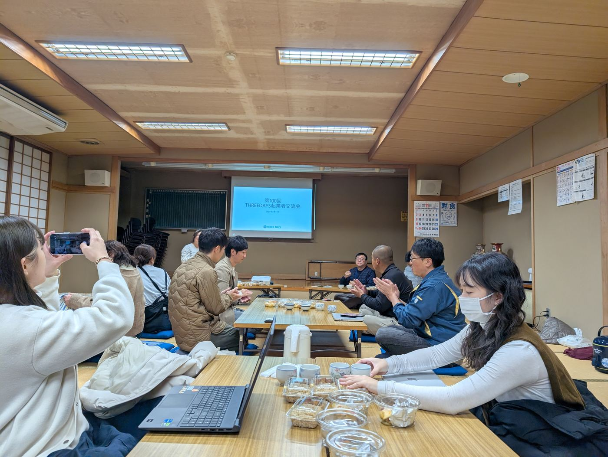
課程設計非常依賴使用者回饋。老師提到，很多人來上課主要是因為「相信他」，而不是因為場地。由於課程是長期形式，他們會優先提供住宿與教室。附近業者彼此熟識，所以人力與空間都能相互支援。
整體觀察下來，這種方式雖然不大規模，但確實有效率，也更貼近地方的真實條件。
完成早上的QA後，下午的工作坊延續上午的講座，老師請大家討論「台灣人為什麼會來鳴子」以及「如何吸引台灣人移居」。我是第二組，我們的討論大致如下：吸引人的可能元素、協力隊三年制度、sunbrew 的扶持網絡、鳴子町的特色（自然景觀、溫泉、四季變化）、生活步調較慢、污染低、地理位置可作為東北旅遊中心、當地對台灣人的友善、移居優點、空間大、物價低、自然條件較好、適合尋找不同生活節奏的人等等。
但同時鳴子町也有一些弱勢，例如：生活機能不足、就業機會有限、宣傳度不高。以此為參考點，我們在設計行銷計畫時設定的客群在17–35 歲學生與青年，並且想從東北大學、岩手大學延伸，透過產學合作、觀光導覽、社團交流來建立與地方的第一次接觸。核心概念是：把「台灣沒有、日本有」的生活體驗變成吸引力，而不是用景點吸引人。整體討論的方向比較務實，重點是找出「最可能願意移動的人」。所以想要推出一個教育中介平台，協助想要赴日學習生活的人可以有組織協助，從中媒合，到鳴子町體驗。我們也希望可以跟台灣的大學合作，讓校際間有聯絡與交流的機會，使人才互通、經驗碰撞。完成工作坊後我們來到交流分享會，這裡聚集了餐飲、溫泉業、漁業、旅館、創業輔導等各種領域的人。第一個分享的老師是飯糰清酒店的老闆，店主提到，鳴子早上幾乎沒有店開，所以她選擇做飯糰店與酒吧的結合。原本只是在線上分享生活，累積了一些支持者，後來決定開店。她也坦言，地方社群擴大之後會出現負面評論，甚至有人把旅館問題丟給她，但她能做的有限。這讓我看到「在地深耕」並不只是理想，也包含很多無法預期的責任。
再來是咖啡店店主，第二位講者目前是協力隊成員。他開咖啡店的理由很簡單：地方資訊傳遞速度慢，需要一個能交換資訊的場域。他認為地方需要「翻譯者」——能把都市知識帶進來，也能把地方的魅力傳出去的人。他加入協力隊并不是只為了經營咖啡，而是希望為地方建立一個更有彈性的交流平台。
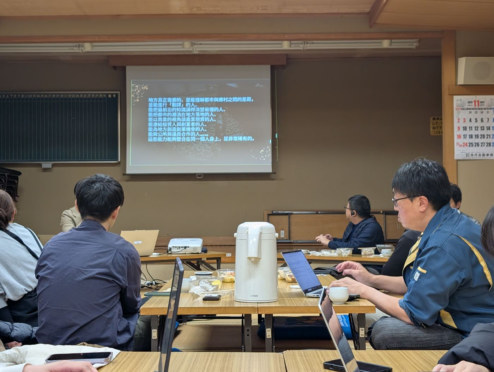
第三是漁業青創者，講者來自只有 50 位居民的小島。目前從事漁業相關的產業，由於漁業本身門檻很高，他在創業輔導的過程中也遇到了一些問題跟碰撞期，逐漸把範圍擴大到觀光體驗、與水族館合作等活動。真正重要的不是產量，而是讓更多人理解漁村的現實與海洋文化。
整天的活動讓我看到鳴子與周邊地區在做的事情，都不是「大型政策型」的地方創生，而是從生活問題開始，一步一步把解方拼起來。無論是空屋、移居、創業、旅遊或資訊交流，背後都有一個共通點，就是每個行動都從非常具體的生活需求出發，而不是願景口號。我覺得這種模式比我預期的更務實，也更貼近地方能負荷的節奏。今天的內容讓我重新認識了「地方行動者」這個詞：不是帶著大理想的人，而是願意從身邊的小事開始，把事情慢慢做下去的人。
第一組的重點放在「吸引台灣人移居鳴子」。他們的切入方式滿實際的，先從鳴子目前的條件盤點，再提出具體策略。他們觀察到鳴子其實由五個小村組成，交通在東北地區算是方便，生活機能雖然不強，但旅遊與長住的潛力都存在。川渡地區被他們特別提出，因為那裡的組織串聯能力比較強，也相對更友善外國人。弱點也講得很直接：人口太少，光靠本地的消費力幾乎不可能支撐商業運作，所以如果要談地方活化，就必須先有穩定進入的人流。他們提出三個方案，目標族群都不同，但共通點是「用居住與學習把人留在地方」。他們鎖定剛到日本、語言還不熟的人。除了上課，他們希望透過語言學校讓移居者可以比較自然地跟在地人建立連結，不會因為語言問題感到孤立。某種程度上，語言學校也被視為一個「準社群入口」。再來是數位遊牧者，提供能工作也能休息的空間，讓他們可以在這裡邊生活邊工作。這個想法和最近日本很多地方推的「workation」路線很接近，也算是把鳴子的慢節奏當成資源。最後是工藝學徒，讓想學木工、漆藝等傳統工藝的人，可以直接住在鳴子並跟職人學習。目標是讓學徒在這裡長期生活，並在之後可能創業或留下來工作。這個方案非常「在地」，因為鳴子本來就有木芥子與漆器文化，把文化變成吸引人的理由，是很棒的方向。
我認為他們小組的核心是以下：
來學語言 → 融入地方
來當遊牧者 → 建立生活習慣
來當學徒 → 留下來發展
他們把這個過程寫成一個路徑：「建立關係 → 融入在地 → 開創事業 → 成為長居人口」，這個路徑本質上就是在把移居者當作地方的潛在「關係人口」。他們透過創造「讓人可以住下來的理由」，而不是單靠觀光吸引，讓人把鳴子町視為「可以住的地方」。
第三組的核心則是設計一個「四個月的生活體驗計畫」（4–7 月、9–12 月），讓參與者在鳴子長時間停留、慢慢進入在地生活的軌道。目標族群設定在18 歲以上、想要在鳴子停留一段時間的人。我覺得比較有趣的是：他們把「在地生活」遊戲化。參與者至少要待一個月，其間要去上伊藤小姐開的民眾高等學校，並配合地方節慶完成各種任務。每完成一項，就可以到道之驛兌換當令食材或折價券，算是把「生活本身」變成一種任務。他們還設計了一個「遊戲流程圖」：
創建角色
跟店家／居民交流、泡溫泉
到各地掃描 QRcode
獲得經驗值或獎勵
蒐集成就徽章
前往下一個指定地點、持續探索
最後回到終點，解鎖完整體驗
整體像是一個「生活版 RPG」，用遊戲的方式讓外地人有動力去走訪景點、參加活動、認識店家，順便增加地方消費。這組的重點不是觀光，而是「讓生活可被體驗」。而我覺得這個方向的確滿貼近鳴子最近在談的價值：不是吸引人來一次，而是讓人願意待久一點、理解當地、進而建立關係。
第四組則是從「台灣人為什麼會選鳴子町」切入，他們指出鳴子對台灣人的吸引力：台灣本身就有泡湯文化，而鳴子的溫泉種類豐富，且具「健康維持」的形象，這點和台灣人的醫療與藥品使用習慣意外契合。但是在鳴子町，四季景觀的差異性大，春天有花、夏天有祭典、秋天紅葉、冬天則是能看到台灣沒有的雪景。
目前的旅遊趨勢是「小團體深度旅行」，鳴子本來的規模就適合這種步調。加上有直航仙台的便利性，使得移動成本降低。現在鳴子町需要改善的面向和我們討論的差不多，像是：交通系統有限（共享車、路線巴士不足）、生活機能弱（便利商店與公共設施稀少）以及缺乏對外國人友善的移住政策。在如何讓台灣人願意移住這個問題上，他們提出的是「資訊 × 支援系統」的模式，希望可以架設一個線上平台，提供資訊，接著提供移住後完善的支援中心，也就是現在大崎市在做的 CU:RUS（移居支援中心），同時，也希望跟THREE DAYS合作，提供創業、職涯、地方協調等協助。接下來他們以台灣人視角為出發點，將這些創業者需要的支援做成系統。他們整理的可能需要的支援分成：
軟體：心理支持、人脈資源、理解當地文化與商業思維
硬體：法律協助、財務、土地、商業登記
感覺很像是想把所有「不知道怎麼開始」的門檻拆掉，讓有心移住的人比較不會踩雷。這組是站在「台灣人在考慮移住日本時會遇到的困難」這個角度切入，所以報告內容偏行政與制度面。所以我在這組的報告理也學習到很多。
第四組把鳴子町定位為「生活體驗場域」，主軸是：「旅館 × 學校 × 小鎮生活」的混合型方案。整體方向比我想像中更「生活導向」，而不是單純的觀光。他們將TA設定為「1個月或4個月」的短期停留者，像是那些想離開都市壓力的短期族群、需要遠距工作的數位工作者、對日本文化交流、溫泉療癒有興趣的人（特別是台灣人）、大學生、短期移住體驗者。他們設計了兩種方案：像是入門型的以語言交換、基本在地探索為主，對象多是大學生或上班族利用假期完成任務。第二個則是深度版約120 天，這部分是給遠距工作者或有移居意願的人，內容包含拍攝鳴子生活記錄、短片製作、旅館新菜單企劃、提出改善建議，變成半個「小鎮參與者」的角色。他們很強調活動中的「文化交換」，希望以在地生活為基礎，來到這邊的人也可進行語言交換，體驗木芥子、溫泉文化、漆器工藝等在地技能。其中也會參加許多季節性的活動與節慶，但我最喜歡的是山菜／野菜工坊，透過跟在地農作與山菜導覽，像白蘿蔔、栗子、稻米、藍莓等，不管事導覽、彩摘還是手作，都強調「把在地物產翻譯成台灣味」。我覺得整份報告很務實，沒有把鳴子想成觀光地，而是「適合緩慢生活」的場域。他們把「生活」拆成可執行的活動節點，從語言交換到農務體驗，都讓短期停留變得有目的、有累積感。
現場在地職人的反饋多是針對實行度、在地狀態來補充與提問，所以在某些組別中，他們也會很直接地提出這個專案的可行性以及哪裡還想的不夠多。有時候我們提的專案甚至是他們已經實行過後的，但沒辦法持續運行。另外，我發現他們也很在意台灣怎麼想，由於可以跟台灣人接觸的時間很少，所以他們也很希望可以在這次機會中問問台灣狀況。包含學校如何運作、創業支持計劃如何做等。在這次機會中，我們可以透過台灣的視角去設計一套創業計畫，而他們也可以以過來人的視角向我們提出問題以及可以改進的地方。我認為這次的學習不管是日本的大家還是我們都獲益良多，真的非常感謝他們的招待。
- 研究組
研討／工作坊主題：
剛開始老師以循序漸進的方式引導我們去思考該如何設計一個創業計畫，首先從台灣參與者的角度討論「台灣人為何會選擇鳴子町」，再來是台灣人移居鳴子町的潛在優勢，第三點是鳴子町需改善的三項面向，最後是行銷策略的討論，讓我們在後續可以鎖定客群與合作方向。各組同學都很認真的在討論，可以發現同學們對於鳴子町的優勢與劣勢都相當一致，分別是：自然環境優美、環境移居等。但同時，劣勢的部分首當其衝是就業機會少、交通不便、在地特色宣傳度低等。針對這些憂/劣勢，各組為鳴子町設計行銷方案。設計完簡報後，同學們到了附近的活化學校進行THREEDAYS 起業者交流會，這次剛好非常幸運地是組織舉辦的第一百次交流活動，參與者橫跨多個行業，包括餐飲、溫泉旅宿、清酒業者、飯糰店、地方創生組織等，並有線上參與者共同加入。
以下整理三位分享者的重點內容：
- 飯糰清酒店主・菅原小姐
由於在地人口逐年減少，造成餐飲經營不易，但觀光客逐漸增加。因此想要開設飯糰店兼酒吧的目的，是提供早晨也能用餐的場所，補足鳴子早上的商店空白。在開店前，原先只在 X（社群平台）分享理念與生活，逐步累積粉絲，最終在開店時獲得許多支持。然而老師也提問，這樣的組織是不是常常接受到權責以外的事務，菅原小姐回覆，深耕地方後確實會面臨「被賦予過多期待」的狀況，也需面對負面反應與意見管理。以他的立場還是希望親自回應地方生活相關問題，但仍會明確界定店家可協助的範圍。
- 咖啡店主（協力隊成員）
以咖啡為媒介在鳴子創業。指出「鄉下不是落後，只是資訊流通較慢」，因此希望把前沿資訊帶入地方。咖啡廳作為「輕鬆交流的公共場域」，讓不同背景的人彼此連結。他認為，地方需要的不是單純的店家，而是能在地方與都市之間進行溝通的「翻譯者」。加入協力隊也是因為理解到「地方魅力需要有人協助解讀與傳遞」。強調自己想做的不是賣咖啡，而是「與更多人共同創造更好的地方」。
有同學提到，協力隊制度如何進行，以及為何可以邊在協力隊邊開店。講師回覆，這份工作是可以兼職的，但副業需向公部門申報，如果工作內容多與地方產業相關，如某些地區是關於農業、食農體驗等，可能通過機率會較高。但還是建議參與者事先了解各地協力隊的組織與風格。
- 漁業創業者
創業者居住於一個僅 50 人的小島，因為熱愛魚與海而投入漁業。但日本漁業需修習專業課程並通過資格證，門檻高且體力要求大。在伊藤小姐的輔導下走上創業之路，期間雖遭遇困難，但逐步找到更多發展面向。在漁業之外，也積極發展觀光、教育與文化傳承等內容。目前進行的體驗活動包含：船上海上捕魚體驗、魚市場導覽、與水生館合作的傳統捕魚體驗。目標是讓更多人理解島嶼生活不只是觀光，而是一套完整的產業與文化。
綜上所述，大家或許來自各式各樣領域，在做很多不一樣的事情，但都希望以地方為出發點，為地方做點事情，儘管困難可能很多，但大家都在各自的領域裡努力。
第一組
一、鳴子町現況觀察
第一組以「吸引台灣人移居鳴子町」為核心主題，並以條件盤點作為切入。他們指出：鳴子由五個小村落構成，交通在東北地區相對便利。生活機能有限，但具備旅遊與長住的潛力。川渡地區因組織串聯能力較強、外國人友善度高，被視為推動移居的重要節點。主要弱點則集中在：人口規模過小，內需消費不足，難以支撐持續性的商業行為。因此，若要談地方活化，前提是創造穩定的人流與居住人口。
二、提出的移居方案
第一組提出三項策略，雖針對不同族群，但共同理念是透過「居住 × 學習」建立長期停留的動能。
（一）小型語言學校方案
期間：3 個月至 1 年
目標對象：剛到日本、語言能力不足的移居者
以語言課程作為生活入口，降低初期適應與孤立感。語言學校同時被設計為建立社群、認識在地的起點。
（二）數位遊牧者方案
期間：3 年期
目標對象：遠距工作者、希望慢活生活者、偏好自然環境者
提供兼具工作與休息的空間，讓使用者在地生活與工作可並行。概念接近「workation」，以鳴子的慢節奏與自然作為主要吸引點。
（三）學徒方案
期間：3–5 年
目標對象：對木工、漆藝等傳統工藝有興趣的青年
使學徒能直接向在地職人學習，並同時在鳴子居住。方案結合鳴子既有的木芥子、漆器等文化資源，屬文化導向的移居策略。目標是培養長期留在地方的可能性，包含未來在地創業。
三、策略核心
三個方案共同構成一條銜接式的移居路徑：建立關係、融入地方生活、發展職涯或事業、成為長期居住人口。此路徑的核心概念是將移居者視為地方的「潛在自發性人口」，透過生活與學習形成黏著度。
四、結論
語言學校、遊牧工作空間、工藝學徒制度等，都是以「給出明確的居住理由」來吸引人留下，而非單靠觀光吸引短期訪客。但在執行上可能面臨的挑戰包括：
誰負責營運與長期管理？
當地工藝職人的教學能量是否充足？
遠距工作者是否能接受地方的生活節奏？
三個方案之間的流動是否能真正形成？
第一組以不同層次的方式拆解「移居」議題，提出多入口的方案，其最終目標一致：使外地人逐漸將鳴子町視為「可居住的地方」。
第二組
技術・職業體驗 in 鳴子町
一、前言
第二組希望在鳴子町推動的「跨國探索實踐基地」計畫，核心聚焦於為青年提供職涯試錯機會（キャリアを試してみる機会），並透過地方社群力量，形塑一個能支持其生活、工作與探索的環境。然而，目前鳴子町仍面臨地區特色（地域 DNA）宣傳度不足的挑戰，導致外部社群對地方魅力的了解有限。計畫旨在透過台日合作，使青年能在自然環境中邊生活、邊工作、邊探索人生；同時強化地方與外部人才的連結，為地方創造長期的人力與關係人口。
二、地區優勢（Strengths）
東北生活體驗：日本式慢活～鳴子町具備四季分明、自然資源豐富的生活環境，適合希望遠離都市壓力的青年。
自然生活：景觀豐富、汙染程度低～山林、溫泉與多樣農產，使參與者能實際感受「自然共生」的生活方式。
富足生活：人情溫度＋物價相對低廉～居民友善、生活成本不高，是外地青年建立生活基礎的優勢條件。
三、受眾設定（Target）
對象年齡：18～35 歲（大學以上）
特徵如下：
對未來仍感到不確定，尋求新方向。
希望更換生活環境、遠離都市壓力。
對不同職涯或專業領域抱有探索意願。\
對日本地方文化、生活方式與自然環境具有興趣。
四、合作模式（協力モデル）
此計畫以「跨國協作」為基礎，透過多方單位的互補形成完整支持鏈。
（一）台灣端（Taiwan）
合作院校：三校聯盟（台大 / 台師大 / 台科大）、優九聯盟（九所私立大學聯盟）
提供：青年人才（學生）、文化與視角交流、報名資訊與宣傳管道
（二）鳴子町端（Three Days / Sun Brew / 花山網絡）
提供：在地實習與職涯體驗、社群支持（コミュニティの支援）、日常生活協助與地方協調、地方 DNA 整合與體驗設計
（三）日本東北地區大學
合作單位：岩手大學（農學、教育）、東北大學（商業、科技）
提供：學習機會（在地教育資源）、產官學協力的協同研修、專業知識支援
五、課程方向（Course Theme）
課程分三大核心領域，對應鳴子町的地方資源：
手工藝（工藝文化）：文創設計、漆器、木芥子、太鼓
農學（地域農產）：科技 × 農學、農家行銷、里芋、栗子、鳴子新米等農產品、
環境教育（AT／食農教育）：教育活動、戶外體驗（Adventure Tourism）、食農文化理解、招攬對環境永續有興趣的年輕人
六、計畫願景（Vision）
設計一個讓年輕人在自然景觀中，邊生活、邊工作、邊探索人生的「跨國探索實踐基地」，讓年輕人在鳴子町能「生活中前進，工作裡實踐，探索中創新。」透過跨域實踐，協助青年在生活與工作之間找到下一階段的方向。
第三組
一、企劃概念
第三組提出的主題為「鳴子暖暖（Narupoka）」生活體驗計畫，其核心目標在於透過中長期停留，使參與者能實際進入鳴子的日常生活脈絡。企劃設定了一個 四個月的生活體驗期間（4–7 月、9–12 月），並將目標對象鎖定為 18 歲以上、希望在鳴子停留一段時間的人。第三組將鳴子視為可長期生活的場域，而非單純以觀光視角切入，強調的是「生活可被體驗」的方向。
二、體驗設計與運作方式
企劃中特別強調「遊戲化」的概念，將生活與在地參與行動設計成任務流程，以提升外地人的參與動機。體驗期間至少需停留一個月，並須完成下列核心活動：參加伊藤小姐開設的民眾高等學校課程、依照當地節慶節奏參與活動、完成企劃所設計的在地任務等。每完成一項任務，即可至道之驛兌換當季食材或折價券，藉此促進地方消費，並加深生活參與度。
三、遊戲化流程
第三組以角色扮演形式（RPG-like）來建構參與歷程，流程包括：
創建角色
與店家、居民交流；體驗溫泉文化
於指定地點掃描 QR Code
累積經驗值與獎勵
蒐集成就徽章
前往下一個目的地／持續探索任務
完成全區域體驗並抵達終點
此模式將「在地移動、交流、消費」整合成一套可視化的生活導引系統，讓初次踏入鳴子的外地人能以遊戲節奏理解地方。
四、價值與定位
此企劃的重點不是短期觀光，而是建立與地方的關係。其目標在於：鼓勵外地人以較長的時間在鳴子生活、在生活過程中理解地方文化、累積與居民、店家、活動之間的連結、讓「生活感」成為吸引力，而非僅是遊覽式體驗。
這個企劃方向與鳴子町近年的政策方向吻合，現場的在地創業家們也都非常看好，且表示目前政府也正致力於在這個領域發展，即從用科技、遊戲化、嶄新的方式「吸引一次性旅客」轉向「增加在地停留與關係人口」。
第四組
一、鳴子町對台灣人的吸引因素
第四組以「台灣人為什麼會選擇鳴子町」為主軸，從文化習慣到生活需求的角度，整理出以下幾項具有吸引力的要素：
溫泉文化相通性：台灣本身具有泡湯文化，而鳴子擁有多樣泉質，且以「健康維持」為形象，被認為符合台灣人對養生、保健的偏好。
四季景觀鮮明：春季賞花、夏季祭典、秋季紅葉、冬季雪景，提供台灣人不常見的季節體驗。
小團體深度旅行的適：鳴子規模小、節奏慢，和當前興起的「小團體深度旅遊」相契合。
直航仙台的交通便利性：可降低旅客與潛在移住者的移動成本，是鳴子相較其他東北地區的優勢。
二、鳴子町目前需改善的面向
組別整理了三項主要瓶頸：
交通系統不足：共享汽車、路線巴士等移動選項有限，難以支撐無車族的生活。
生活機能弱：便利商店稀少、公共設施不足，對外國移住者的日常生活造成壓力。
缺乏外國人友善的移住政策：尤其是移居初期的行政指引與支援不足，是目前最大的制度性落差。
而住些面向皆與各組認為鳴子町有的弱勢高度重疊，除可見大家的觀察一致外，也顯示明子町在吸引外來人口、觀光上有非常明確、可以改善的弱勢。
三、吸引台灣人移住的策略：資訊 × 支援系統
第四組提出以「資訊整備」與「完善支援」為核心的模式，整合多方資源：
線上資訊完善化：資訊需集中、易懂、具體，減少外國人摸索成本。
移住支援中心（CU:RUS）的角色強化：包含諮詢、媒合、行政指引、生活支援等面向。
THREE DAYS 的專業支持：提供創業輔導、職涯協助、地方協調，是移住後融入地方社會的重要媒介。
空屋銀行與生活支援：整合空屋資訊、各項文件協助與軟性服務，降低生活面與行政面阻礙。
此架構將「政府、公部門、地方組織、企業、移住者」四方角色清晰定位，同時也能將四種不同的角色結合再一起，彼此再各自的領域哩，同時協手合作。
四、台灣視角的創業支援系統
他們特別以台灣創業者為例，提出一套明確的支援架構，包括：
軟體面：心理支持、人脈資源、理解當地文化與商業思維
硬體面：法律支持、財務系統、土地與空間使用、商業登記指引
此架構在於降低年輕人創業時「從零開始」的恐懼感，讓想移住、創業的人能有清楚的行動路徑，透過完善資訊與支持系統，讓更多人願意留在此處深耕。
五、行動計畫示例
第四組進一步提出具體化的行政輔助工具：鳴子移住 × 生活法務手冊，透過文件審查志工或專業人士制度、標準化的契約書模板、定期的法務講座等方式，將複雜流程一般化，甚至是「台灣化」，讓來到此地的外國人能以更低門檻理解行政程序。
六、綜合觀察
第四組的切入點偏向行政與制度面，聚焦於外國人移住後的行政流程、適應期的支援以及如何協助從旅客轉變為居民。這部分補強了各組聚焦於「生活感」、「在地節奏」、「關係建立」的不足，使鳴子町的移住問題從制度與生活兩端都能被看見。兩種視角並置後，對鳴子町的整體理解更加完整，也讓「移住 × 生活 × 支援」之間的連動性更清晰。
第五組
第五組的企劃將鳴子町定位為一個「生活體驗基地」，核心概念並非觀光，而是以旅館、學校與小鎮生活結合的混合式體驗方案，主張透過「居住」來促成文化交換與地方參與。
一、企劃定位與目標族群
第五組設定的體驗對象為 1 個月或 4 個月的短期停留者，主要包括：
希望暫時離開都市壓力的人
可遠距工作的數位遊牧者
對日本文化、生活方式與溫泉療癒有興趣的族群（尤其是台灣人）
大學生、短期移住者、文化交流參與者
強調來到這邊「在鳴子生活」而非僅是「在鳴子旅遊」。
二、生活體驗方案內容
第四組提供了兩個生活方案，分別是一個月體驗版，以及四個月的深度體驗，在一個月體驗版（30 天）中包含語言交換、在地探索等基本活動。適合大學生與上班族利用假期選擇，並且個個活動採「任務制」，完成可累積體驗值，也是句被遊戲性的體驗。在四個月深度版（120 天），針對遠距工作者或具移住意願者，參與內容較深入，如：拍攝鳴子生活紀錄、協助旅館菜單企劃、協助提出地方改善建議，讓外來者的角色從體驗者擴展成「小鎮參與者」。
三、文化與生活活動類型
企劃特別強調文化交流，包含：
在地技能與文化課程：木芥子體驗、漆器工藝、溫泉文化課、在地生活技能課程、台日語言交換等。每位參與者至少需修習 2～3 門課，並且使用遊戲化的方式，讓學員們能以集章的方式體驗在地課程，增加參與者黏性與積極度。
交流性活動：台灣 × 鳴子料理交流日、與居民共食季節定食、節慶活動體驗，如雪地散步、紅葉走讀等。這些活動的重點在於讓外地人進入日常，可以在短期內好好的體驗當地生活，並且萌生留在當地的想法。
四、交通動線與移動規劃
企劃也補充台灣旅客常遇到的移動困難，提出可行的交通支援，如：國道與自駕路線、JR 鳴子溫泉站、新幹線串聯、公車系統等。希望能讓國外來的「無車族」也能順利完成在地生活體驗。
五、特色：山菜／野菜工坊
本組企劃的一大特色是以農作與山菜作為生活體驗的農地導覽，透過採集季節野菜，並且使用在地食材製作「台灣料理」來展現「在地物產 × 台灣味」的文化融合。這個活動兼具地方連結與生活深度，與鳴子的農村特質高度相符，同時也可以與他國文化交流。
六、整體觀察與評析
第五組的提案以「生活導向」為核心，不以觀光吸引人，而是強調鳴子町的慢生活，讓停留期間具有目的性與累積感，透過明確的活動節點建立地方關係。企劃設計上也根據時間性上有調整與側重不一樣的面，兩種方案皆提供清楚的地方參與方式，有助於外地人理解鳴子的生活樣貌。
Day 07
大崎市立語言學校、大家一起學日語
November 18, 2025
＋
大崎市立語言學校、大家一起學日語
大崎市立語言學校
展開課程筆記
大崎市立語言學校介紹
講者：齊木校長
兩年前本來是國小，廢校後花了一年的時間改成語言學校。現在的學生有51位，有來自越南、印度跟台灣學生，光臺灣學生就22位。
語言學校理會有很多課程，包含交通安全、文化節慶、自然體驗、傳統文化體驗等。活動分布在個個月份，非常豐富。
概況
- 為甚麼蓋公立的語言學校？現在全日本約850間語言學校，幾乎都是私立的，只有兩家是公立的，一家是大崎一家是北海道。之前除了仙台外，這個地區幾乎沒有語言學校。目前日本面臨高齡化，宮城縣本來有預計蓋新的學校，自2022年開始制定創辦語言學校的計畫，大崎市願意推動後面臨第一個問題是，要在哪裡創辦語言學校。中間出了一些狀況，如當合併學校時，勢必需要廢校，選址問題等等，最後才選定了西大崎的廢校改建。
- 創辦之後宮城縣開始在世界各地創辦職涯支援中心，例如台灣、印尼、越南等。
- 他們希望打造以日本與維和新的多元文化小鎮，除了學習外，也希望羅洛在地，例如從宿舍到學校的ＪＲ路羽東線崎時因太少人搭乘，可能要廢線，也希望透過語言學校來活絡使用。
- 除此之外，也希望可以讓各國來的同學們跟彼此交流、跟當地交流，也希望讓他們可以喜歡大崎市，留在大崎市。→增加觀光、地方物產、交流及關係人口的擴展
- 對於在地來說，因高齡化嚴重所以也希望透過語言學校可以增加一點新血，也活絡地方，增進彼此交流，這樣遇到重大事件時大家才可以互相扶持。所以學校很希望來這邊的留學生可以繼續留在大崎市。
同學提問，在創辦外國的職涯支援中心有沒有遇到困難，那已大崎市的角度而言，希望宮城縣政府可以到國外創辦中心。那以往的語言學校都是以展覽類別吸引學生。但老師也詢問了來到大崎語言學校的台灣學生，他們會覺得公立的學校覺得比較放心。而大崎市羽宮城縣的關係，以宮城縣政府提供經濟上的負擔，大崎市則是承辦為主，因此皆是公部門協助。也有同學詢問，語言學校的老師有幾位，目前共5位，由於校長沒有語言教學的證書，所以只有四位老師會上課。
一般而言，學校都是以考過JPLT N2為目標，預估N5到N2大概要兩年，N4到N2大概一年半，N3到N2大概是1年。
- 教室有理科教室、家政教室、圖書館以及可以看風景的工作區。最特別的是有一個空間給越南來的同學可以做一天五次的禮拜，也有設置洗手台供他們清理。
- 目前行政5人，老師5人。隨著學生越來越多一定會不夠，所以也希望之後畢業的學生可以留在這邊繼續上班。
- 由於準備資料到可以都需要2、3個月，加上還有簽證，所以都要到6-8個月左右的準備時間。
今天聽齊木校長介紹大崎市立語言學校，整體比我預期中的規模更完整，也能感受到地方政府把「語言學校」作為人口策略的一部分，而不是單純的教育機構。這間學校原本是國小，兩年前廢校後花了一年整理，才重新以語言學校的形式啟用。現在共有 51 位學生，其中台灣學生就有 22 位，其他主要來自越南與印度。
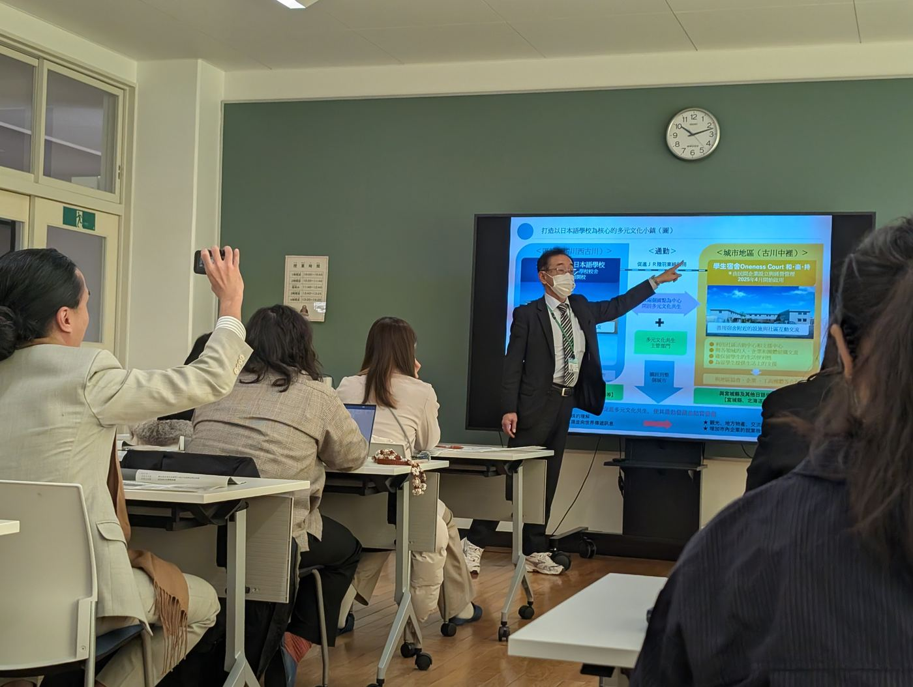
校長提到，日本約有 850 間語言學校，但公立的極少，只有北海道與大崎市各一所。宮城縣過去沒有語言學校，而本地又面臨高齡化與人口流失，因此縣市兩方才共同推動這個計畫，把語言學校放在廢校空間內再利用。後來宮城縣更在台灣、越南、印尼等地設立職涯支援中心，希望吸引更多學生來日本。做為一位台灣學生，可以有個公立的語言學校，並且學費便宜，真的有點心動。或許有機會、有時間的話真的會想考慮到這邊就讀。
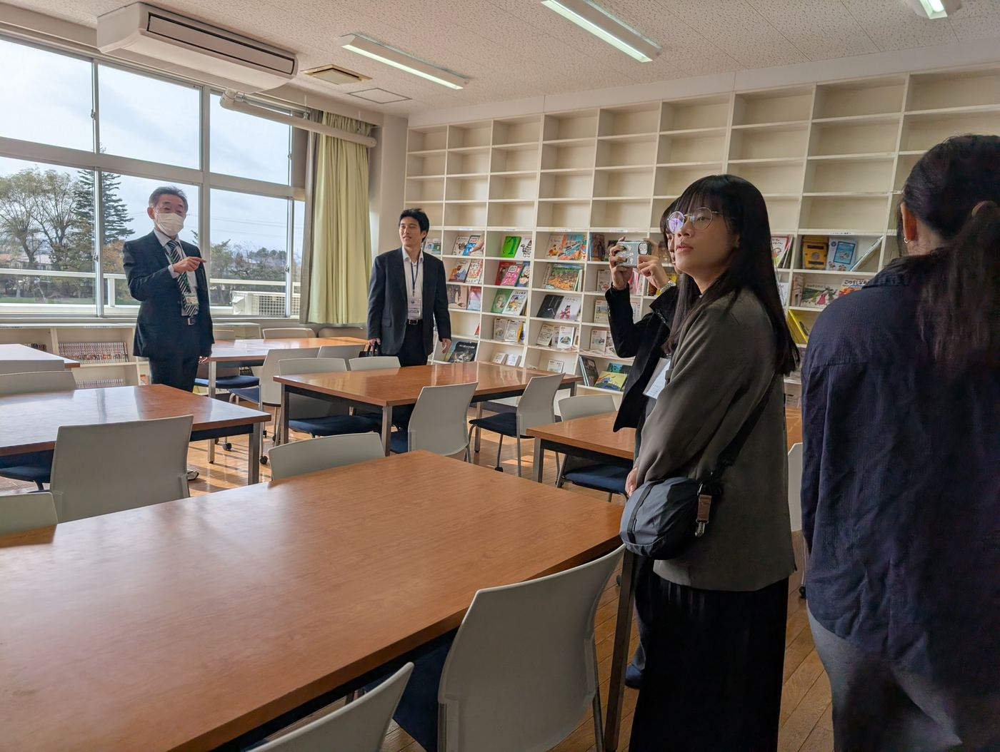
另外，校長特別提到，這所學校的目標不只是教語言，而是希望可以增加學生與地方社區互動，不只是國際學生可以認識在地，更是當地居民可以知道國際在幹嘛。額外的考量還有希望透過這個學消之中招收的學生，增加 JR 路線的使用量（避免被廢線）。也希望這些學生願意在畢業之後留在大崎市工作或生活，透過多元文化交流補充地方「新血」。聽到這裡，我覺得這間語言學校比較像是「地方接待國際新住民的入口」，而不是單純的教育場域。
他們的課程安排很生活化，包括：交通安全、節慶文化、自然體驗、傳統文化體驗等。每個月都有不同活動，看得出來他們很努力的把「地方文化」融入語言學習。由於這棟建築是是由廢校改建的，所以教室保留了理化教室、家政教室、圖書館等設備，也提供能看風景的自修空間。針對穆斯林學生還有禮拜室與洗手台，看到這樣的設施會覺得很暖心，因為他們在創辦學校，從事教育的同時也尊重多元文化的需求。
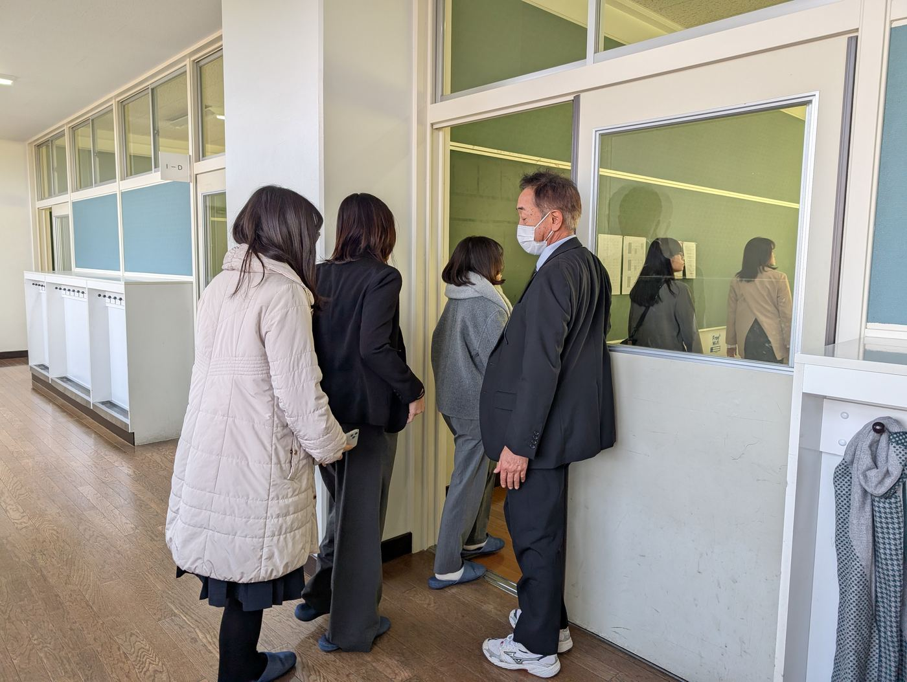
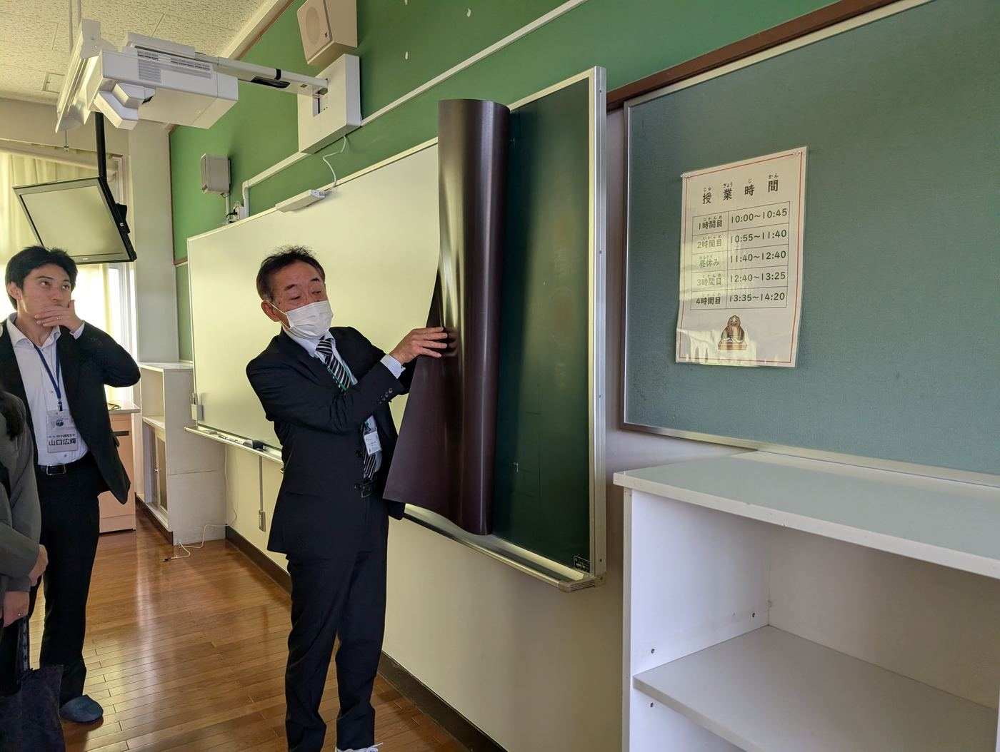
在我自己的觀察中，這間語言學校其實牽動著地方的交通、人力、社區活化，算是「功能性人口策略」的一部分。比起一般語言學校強調職業需求或升學需求，大崎市的重點更像是：如何讓外國學生留下來，變成地方的一份子。整體給我的印象是，這是一間利用「教育」來支撐地方未來人口結構的學校，而不是單純提供語言課程。
大家一起學日語
展開課程筆記
- 讓日文沒有這麼熟悉先說最近說過的日文～平常可以使用的日語
- ご清聽（せいちょう）ありがとうございましだ報告最後使用
- よろしくお願いし（剛見面時候用，初次見面）
- はじめまして（初次見面）
- 報告或分享會可以使用的
- 開頭可以說什麼？
- 第一組：皆さんこんにちは。本日のテーマはまるまるです。どうぞ楽しんでいてください。
- 皆さんこんにちは。今日はどうぞよろしくお願いします。
- こんにちは。私たちは第5グループです。ご清浄ありがとうございます
- こんにちは。よろしくお願いします
- 皆さんこんにちは。今から発表します。よろしくお願いいたします。
- 如何自我介紹
- 打招呼：こんばんは。初めまして
- 名字：私の名前はリリスです、
- 自己做甚麼：私は今修士の学生って、現代芸術(げんだいげいじゅつ)と歴史をお勉強しています
- 最後：どうぞよろしくお願いいたします。
山口老師在大家要去home stay 前，先教導我們一些簡單的日語，其中有很多是關於報告、打招呼相關的日語，這些用語在我們這趟旅行中很常使用，所以很感謝老師的教導，讓我們成為一個比較有禮貌的台灣學生XD
- 讓日文沒有這麼熟悉先說最近說過的日文～平常可以使用的日語
- ご清聽（せいちょう）ありがとうございましだ報告最後使用
- よろしくお願いし（剛見面時候用，初次見面）
- はじめまして（初次見面）
- 報告或分享會可以使用的
- 開頭可以說什麼？
- 第一組：皆さんこんにちは。本日のテーマはまるまるです。どうぞ楽しんでいてください。
- 皆さんこんにちは。今日はどうぞよろしくお願いします。\
- こんにちは。私たちは第5グループです。ご清浄ありがとうございます
- こんにちは。よろしくお願いします
- 皆さんこんにちは。今から発表します。よろしくお願いいたします。
- 如何自我介紹（後面是我自己的）
- 打招呼：こんばんは。初めまして
- 名字：私の名前はリリスです、
- 自己做甚麼：私は今修士の学生って、現代芸術(げんだいげいじゅつ)と歴史をお勉強しています
- 最後：どうぞよろしくお願いいたします。
我沒有真的學過日文，基本上都是透過動漫、歌曲的方式去認識日文，這次是第一次有老師真的很口語的、實際的教導我日常生活的用語。這些練習對我來說很重要，非常感動，希望之後可以一直使用到這些用語。
Day 08
南三陸町觀光協會、宮城縣南三陸高等學校交流會、Home visit
November 19, 2025
＋
南三陸町觀光協會、宮城縣南三陸高等學校交流會、Home visit
✨在日本中我們都需要負責一些工作事項，在日本時我負責的是【研究組】，所以需要撰寫課程紀錄。因此兩種資料轉化的處理上會較為不同。✨
南三陸町觀光協會
展開課程筆記
介紹
南三陸位於東北靠海地區，以章魚、杜鵑花維特色，同時這邊的經濟活動也是以養殖漁業為主，像是鮭魚(養殖技術從這裡開始，擴散全球)、牡蠣、鮑魚、海鞘。
東日本大地震
因為地震與海嘯的關係，地區有7成的設施的被破壞，包含各種基礎建設（市政府、消防局、警察局）。三一一之前其實也會有相關的防災訓練，所以算是準備好了，不過三一一的規模巨大，所以受難者們的影響也非常巨大。
因為東北地區算是地震比較多的地方，所以大家有一點防災意識。理論上來說，大家都會在海嘯來的時候去到高的地方，當災害來臨時，很多人都往高處走，或是往學校避難。
由於醫院建立在海邊，因此三一一的時候也遭到破壞。當時台灣捐款非常多，也提供很多物資協助，也自這次的支援，東北地區跟台灣也特別的情意。會希望可以好好感謝、招待、或是持續的交流。
三一一後的產業
- 2015年取得森林管理國際認證⇒「炭」為主要產業之一
- 2016年「戶倉牡蠣」取得海洋國際認證
- 教育旅程～以森林、山、海為主的體驗活動
- 自然災害防治～紀念館
- home visit
- 舉辦「飲食」相關活動
推動對小鎮好的、對人好的事務
三一一那時候發生地震後約30分鐘後海嘯來，當地居民都開車離開海邊，廣播只會說要去高的地方，但大家都決定開車到高處去。
在三一一以前的觀光協會以推動居民為主觀光政策，例如海上運動、居民介紹在地特色（居民要活躍）為主，三一一後其實沒有改變太多，但增加了災害防治與教育旅程等活動。
三一一後除了學生可以在學校接受相關的避難知識，老人家有沒有相關的知識補給呢？三一一後有特別規定海邊不可以設置住宅，只能有賣店與工作地點。針對不知道三一一的孩子，也會特別教育。以公部門來說，會特別舉辦講座，但因為大家都是經歷過的人，所以大家會自己解決，或是要更加重視自己的生命，以此為推廣。
對觀光客的部分，會說要是發生地震的話，要往哪個地方，通常大家都透過旅行社去訴說這些士強，也講避難的重點。都會先以準備為主，但遇到的時候怎麼防範又是另一件事。
今天的行程主要是認識南三陸的背景，從地理到產業，再到 311 後的重建脈絡，整體讓我對「海邊小鎮的韌性」有更具體的想像。
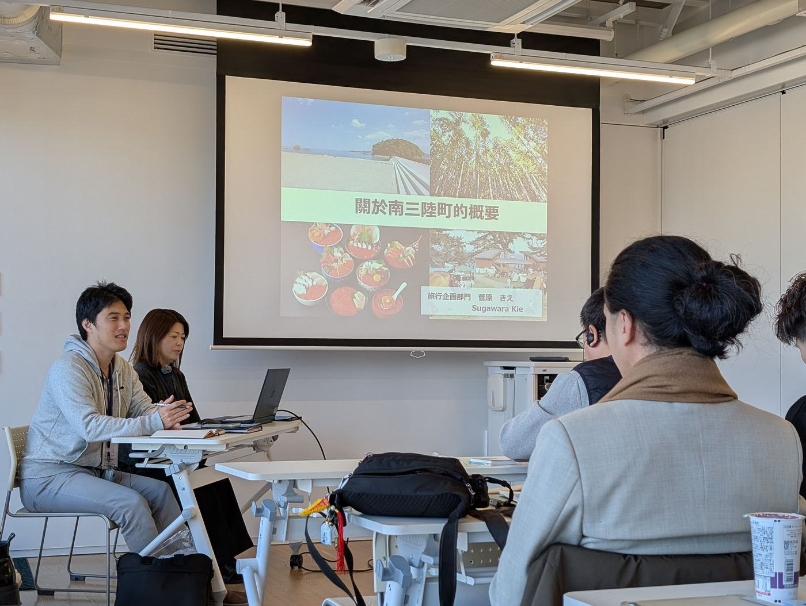
南三陸位於東北沿海，以章魚與杜鵑花作為象徵。這裡的主要產業是養殖漁業，包括鮭魚、牡蠣、鮑魚、海鞘等。其中鮭魚養殖技術甚至是從這裡發展後擴散到其他國家。這裡給我的印象是典型的「海與山交織的小鎮」，資源集中在第一級產業，但從工藤小姐的講述中，也感受的出來這個地區亟欲推動「六級產業」。但也因為地理環境與災後重建的關係，這裡的生活節奏安穩，也在穩步上升。其中，對這個地區最大的影響就是 311日本東北大地震，講者提到，當時我們所在的地區約 7 成的設施損毀。這反映的是整個城市幾乎要從零開始，包括市政府、消防局、警察局等基礎設施。從工藤小姐、甚至是山口老師的口中可以發現，東北地區對於海嘯與地震的防災意識其實很高，但即使東北地區原本就有防災意識，311 的規模仍超過想像。許多居民雖然照著訓練往高處避難，但因為海嘯速度與高度都遠超預期，傷亡仍然巨大，醫院因靠海也被毀，這代表整個小鎮在那一刻失去醫療支撐，光從語言上就以無法想像當時的人該如何在這樣的狀況中生活。
所以當工藤小姐提到台灣協助時，他的語氣帶著明顯的感謝。台灣當時提供非常多物資與捐款，也促成此後南三陸與台灣間持續的交流。我能感受到這是他們非常珍惜的一段連結。
311 之後的災後產業重建，基本上與原本南三陸的產業方向沒有完全改變，而是用重新「獲得認證」和「重新建立信任」的方式來加強在地產業，例如：
2015：森林管理國際認證（以木炭等林業資源作產業）
2016：戶倉牡蠣取得海洋國際認證
同時推動以森林、山、海為核心的教育旅程、體驗活動，而地震帶來的傷害也被南三陸町轉化為可以跟別人說的經驗，因此他們在講述災害防治這件事上真的非常全面，也成立了震災紀念館，讓災害經驗得以傳承。另外，這個地區也有 home visit 與食農活動，強調生活與交流，整體方向是把「自然 × 生活 × 災後學習」結合起來。
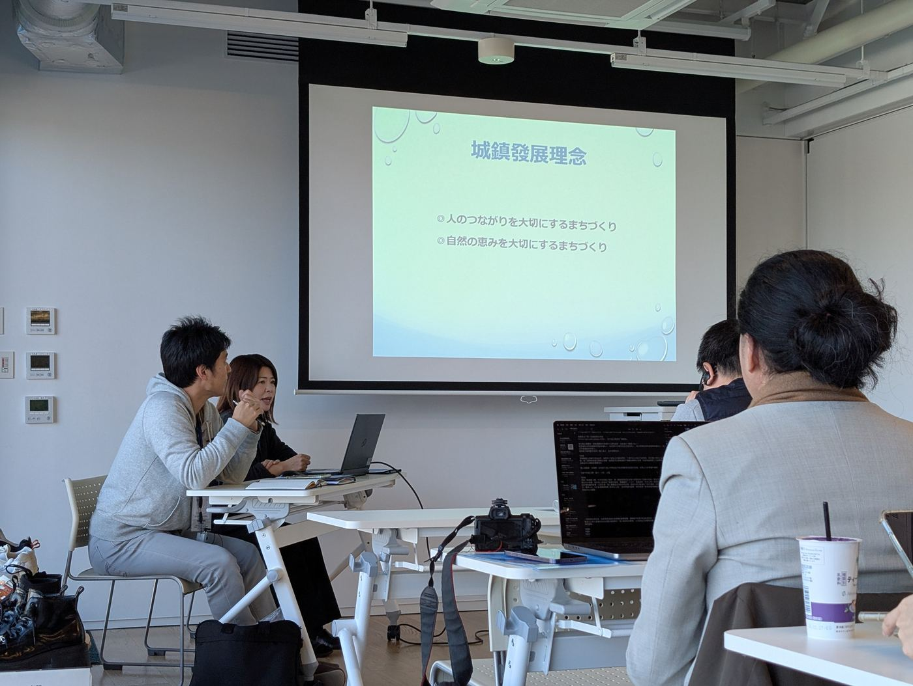
在後三一一的政策中，公部門規定海邊禁止設住宅，只能保留店家與工作場所。這說明政府把「學到的教訓」制度化，希望下一代不會重複相同的風險。在地教育方面，小學生會在課堂學避難知識；比較還沒經歷過 311 的孩子，也會補充知識。老人家則多倚靠講座與社區活動補充防災資訊。對觀光客部分，旅行社與在地導覽都會要求先了解避難路線。因為「災害可能發生」幾乎是日常的一部分，所以幾乎所有地方，不管是市役所、圖書館或是美術館的文宣，都可以看到震災相關的資訊。
對我來說，南三陸並不是以「災後悲情」作為主題，而是把災害經驗轉化為一種教育、生活態度、與人對話的方式。他們強調的是讓防災成為日常的一部分，也希望將這份經驗傳遞給其他人，讓更多人可以做好準備以備無患。整體來說，南三陸給我的感覺不是沉重，而是非常務實。從海邊不再設住宅，到觀光加入避難指引，再到產業公開透明，似乎都是這個小鎮在努力把「經歷過的事」轉化成「下一次能活下來的方法」。
宮城縣南三陸高等學校交流會
展開課程筆記
宮城縣南三陸高等學校交流會
老師先介紹了之前與台灣的高中交流的經驗與活動內容，不管是去對方的學校，或是線上都有。有趣的去章魚的神社參拜，然後用章魚的諧音（octerpus）製作禮物，帶著他去參拜就一定會合格。也有體驗日本夏日祭典活動的攤位「緣日」等。到台灣也有參觀廟宇、工房體驗、散策、寄宿活動。
在行前會先在日本事先有一些簡單的學習，例如語言、歷史等，到台灣之後才交流。
日本學生到台灣是南三路町的公部門來安排，請老師來提前學習。學生來這邊不會去上真的課程，會以交流活動為主。
設定台灣人persona，日方該怎麼招待。
今天的交流會主要聚焦在南三陸高校和台灣高中的交流經驗。老師一開始先介紹過去曾經做過的交流活動，內容比我想像中多元，而且帶有明顯地方特色。其中一個有趣的例子是章魚神社。因為章魚（octopus）在日文中常被當成象徵 all pass 的諧音，所以日本學生會帶著以章魚為主題的小禮物去參拜，當作祈求合格或好運的象徵。同時也會參加當地的夏祭攤位體驗（緣日），讓外地學生能快速接觸日本社區型的文化。而台灣端的活動則包含：參觀廟宇、工房體驗、散策、寄宿到台灣家庭等。整個交流的設計都是「用生活體驗來認識文化」，而不追求形式化的學術交流。
有同學詢問學生們交流前的行前學習與交流方式，老師回覆日本學生在出發前會做一些基礎準備，例如簡單的語言、歷史背景等。等來到台灣後，才正式以交流活動為主，不會真的參與台灣的學校課程，而是透過活動建立連結。在制度部分比較特別的是，日本學生到台灣後的行程是由南三陸町的公部門統籌安排，會請日本老師先做行前訓練與準備，顯示這類交流算是由地方政府主導，而不是完全由學校負責。這個問題要不是有同學問的話根本就不會知道，所以覺得很有趣。
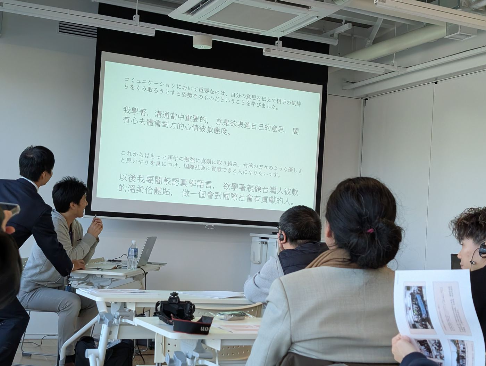
交流會最後日本端也嘗試設定「台灣學生的 persona」，討論如果是台灣學生來日本，他們應該怎麼設計活動、如何安排接待方式，而這也是我們接下來工作坊需要考量的事情。這裡可以看到日本端對跨文化交流是有意識地在做「雙向理解」：不只是讓台灣學生理解日本，也要日本學生學習如何迎接外國訪客。
我覺得在這部分就體現了日本跟台灣民族性的差異，或許是因為歷史跟氣候關係，日本總是給人一種較為冷漠、一直在準備的感覺。但台灣人就更加逆來順受，強調遇到了再說。這個細節在國際交流上的準備也有體現，日本人總是很希望知道他人怎麼說，他人有甚麼想法，我覺得這樣的做事方式是我們可以學習的，是一個我的很小的觀察。
Home stay
心得
下午行程是到當地居民的家中拜訪，在我的個人經驗中沒有參與過類似 home visit、寄宿家庭等活動，所以對我來說很新鮮。這趟旅程最喜歡的果然還是 Home stay 吧」，感覺回台灣之後還是會這麼想。在這裡看到的人都閃閃發光的，很努力地保護著自己的寶物在前行著。
在這幾天的交流中，我發現台灣跟日本民族性的差異，在台灣我們好像總是想著要活著、要活得好，活的好的狀態下就需要錢、需要現實的考量。但在這邊，大家會先問問自己的使命感是甚麼、自己喜歡甚麼。就像抓住一個細線般，努力的將生命與其聯繫。或許「一生懸命」就是這種感覺。
南三陸町的大家在面對困難記憶（以他們為例的話就是自然災害）的想法其實很單純，因為經歷過一次，所以希望不要再發生一次，如果可以的話希望下一次有更多的準備。所以很認真地保留著這些記憶、防災的知識，一直一直走下去。
很喜歡 Home stay 的時候爺爺跟我們說的故事，當時因為水管、物資整個中斷，剛好他們家旁邊就是乾淨的水源，所以有十來個人左右來到他們家裡住，沒有水就去溪邊取水，沒有火就去砍柴。就這樣自給自足到了自衛隊來的時候。
說這段的時候其實還是笑著的，說著大家如何到海邊撿海鮮，回家吃 BBQ，大家如何協力，儘管心裡還是有著這段經歷的恐懼，但可以在現在，活著，跟其他人訴說這些故事，這是我感受到的他們的使命感。
爺爺現在從事漁業，他很開心的跟我們分享他被採訪的影片，奶奶也一直拿食物出來款待，那個當下真的會有種回到臺灣家裡的感覺，覺得非常溫暖。後來大家在聊天的時候聊到怎麼在日本祈求緣分，爺爺就跟我們分享怎樣挑選另一半，當下真的會覺得就是在跟家中長輩聊天一樣溫暖。後面我跟爺爺也聊到了喜歡的啤酒，我們各自推薦覺得很讚的品牌，這個經驗我在台灣也不曾有過，畢竟家人都會希望我不要接觸酒精，但是在這邊真的有種很親近、很有趣，就像進入繪本世界遇到森林裡的老爺爺老奶奶的感覺。
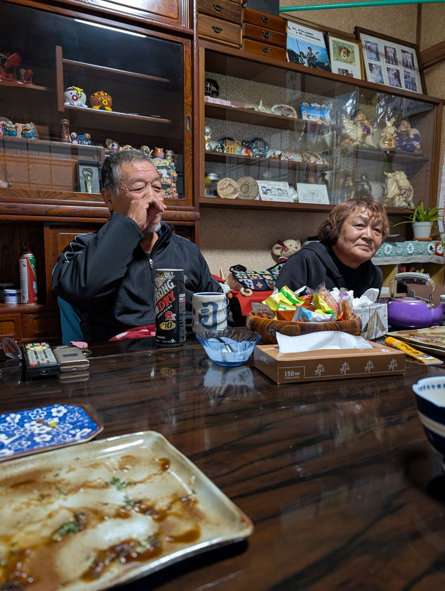
Day 09
南三陸311紀念館、南三陸町公所、研修招募提案工作坊
November 20, 2025
＋
南三陸311紀念館、南三陸町公所、研修招募提案工作坊
南三陸311紀念館
展開課程筆記
就算再怎麼防範，自然的偉大跟破壞是超過我們的想像的。
831位過世的人，831個盒子，大家都已經認真參加研習也認真避難了，
這是我們每天過的時間，我們現在過的時間是他們想過的事情。
到紀念館中，會先看到關於東日本大地震的一些量化數據，例如震央在哪、地震規模、死亡人數等等。其實從包含導覽員、工藤小姐或是山口老師的口中都可以獲得一個訊息，大家都已經演練過無數次了，也做了當時認為「萬全」的準備，但事實就是就算再怎麼防範，自然的偉大跟破壞是超過我們的想像的。在東日本大地震中有831位受難者，其實最剛開始聽到的時候會覺得比預想的還要少或甚麼的，覺得這麼嚴重的地震，災後重建與死亡人數這麼低，果然是日本民族，心裡依舊是萬分婉惜地將這個事件視作一個悲劇。
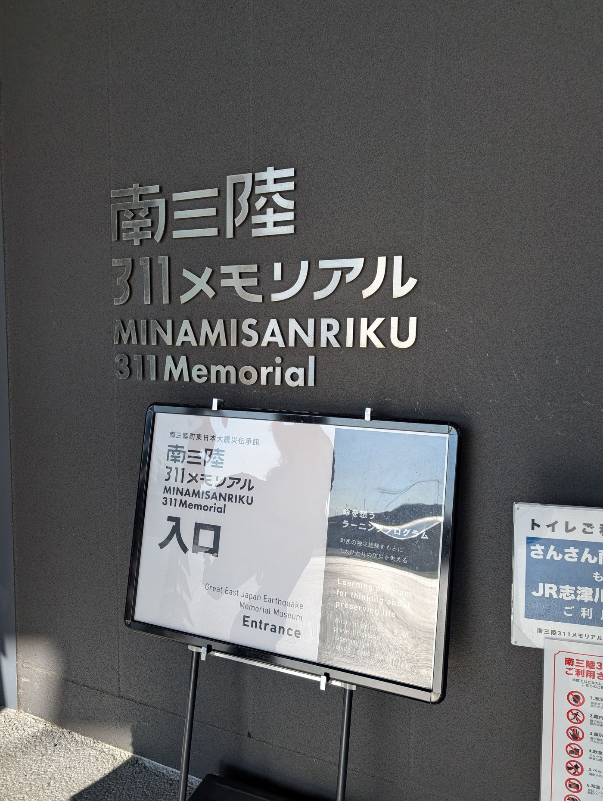
後來我們到一個裝置藝術的空間，很可惜的是裡面不可以拍照。空間中擺放的是非常多的鐵盒，象徵的是在事件中過世的人們。831位過世的人，831個盒子，明明大家都已經認真參加研習也認真避難了，但為甚麼還是會造成這麼嚴重的傷亡呢？我覺得這是我一直聽到的心聲。但不同於台灣民族總是遇到就忘，日本人是個很會記住教訓的民族。這個作品的用意就是為了讓還在世的人記起這個悲劇。讓這些生還者們可以提醒自己，我們每天過的時間、我們現在過的時間，是那些過世的人他們想過的事情，我們應該要連同他們的份一起好好的活下去。
後來我們到一個空間觀看影片，影片內容以生還者的口述歷史為主，他們講述自己在這事件中不同的經驗。我認為做得很有趣的地方是，影片在中間會有個節點讓大家討論或是投票，想像如果我們在那個情境中會怎麼做選擇，或是想像為甚麼他們會這麼做等等。這個行動的用意除了讓大家更加融入情境外，我認為也跟影片中提到的「『安心』就真的『安全』了嗎？」是有關的，就是需要這樣的思考，才可以在真的災害來臨時去做出真正正確且安全的判斷。這個影片中我有幾度落淚，可以想像到他們當時經歷多大的恐懼，有些故事需要透過真實的影像以及他人的講述才能真的想像。三一一發生時我國中，只知道台灣捐很多錢，日本受災嚴重。但真的看到影片後才知道他們當時的天氣與處境有多嚴酷，這些倖存下來的人們有多堅強。
「就像噩夢一樣，大家都是這麼想的。平常的街道去哪裡了呢？森林去哪裡了呢？人們又去哪裡了呢？從出生到現在第一次憎恨大自然。」這是我在翻閱一本攝影集時看到的一段話，這就是大家當下的心情吧。但我覺得很棒的是，在看到他們災後重建後，認真的思考如何與大自然共生，甚至在自願減少養殖量之後，品質與產量反而提升，就覺得真的是太棒了。
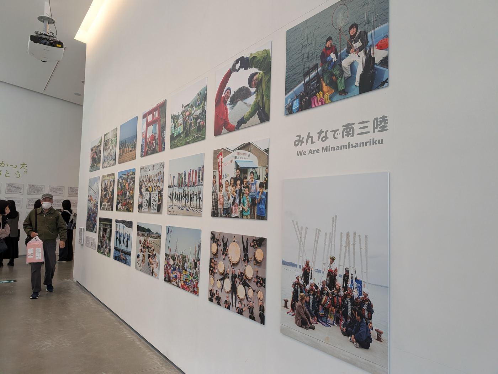
最後的空間是一些災後重建的照片與畫作，含有當事人寫信。我覺得整體的體驗非常的棒，可以跟個人經驗結合，也不會強行煽情，一定要讓別人同情他們之類的。感覺得出來這個紀念館的用意更像是要把這件事情保存下來，同時也記住這次的經驗，希望下次不要再發生。
南三陸町公所
展開課程筆記
- 打造安心的街道，讓大家都可以在這邊好好生活
- 住宅地都往山上建立，平地架高１０公尺，架高屏地的土壤都還自於山上建設時候的土地。
- 在日本，公共醫療復興事業，需要恢復到跟以前一模一樣。當時台灣捐款２２億日圓在支持醫療建築重建上。
- 希望用國際交流的方式交換彼此經驗，也發現台灣的防在教育相對薄弱，所以也希望透過這個機會，跟台灣傳遞防災的重要。
- 除了導覽之外，也會有ｈｏｍｅ ｓｔａｙ的活動可以體驗料理等。⇒重視國際交流。不管事台方來日方或是日方來台方。
- 打造與自然環境共生的小鎮
- 台日防災、海洋研討會～海水溫度越來越高，海鮮產物變動
～台灣跟南三路町的關係是災害，但現在也開始可以談論未來了
ＱＡ
- 規劃醫院⇒沒辦法在原址，希望到山上，他們申請預算的方式不是說要更多錢/維持災害前跟後，只說架高地機需要錢。
今天的行程主要聚焦在南三陸的復興規劃與防災理念。整體下來，我感覺南三陸的重建邏輯非常「務實」，很多規劃都是直接從 311 的經驗延伸而來，而不是概念性的都市更新。講者工藤小姐提到，現在的政策方針是希望打造讓居民能「安心生活」的街道設計。南三陸目前的居住區域幾乎全面轉移到山上，平地則被架高 10 公尺。導覽時有提到，這些填高的土都是從山上建設住宅時挖出的回填土，等於形成一套可循環利用的工程流程。重建最困難的是公立醫療。日本的公共醫療復興事業必須將設施完整恢復到「災前等級」，因此醫院不能只是重建，而是要回到原有的規模與能力。這一塊台灣其實貢獻很大——311 後台灣捐了 22 億日圓協助醫療體系重建。今天在現場聽到再次被提起，還是能感覺到日本地方對台灣的感謝。
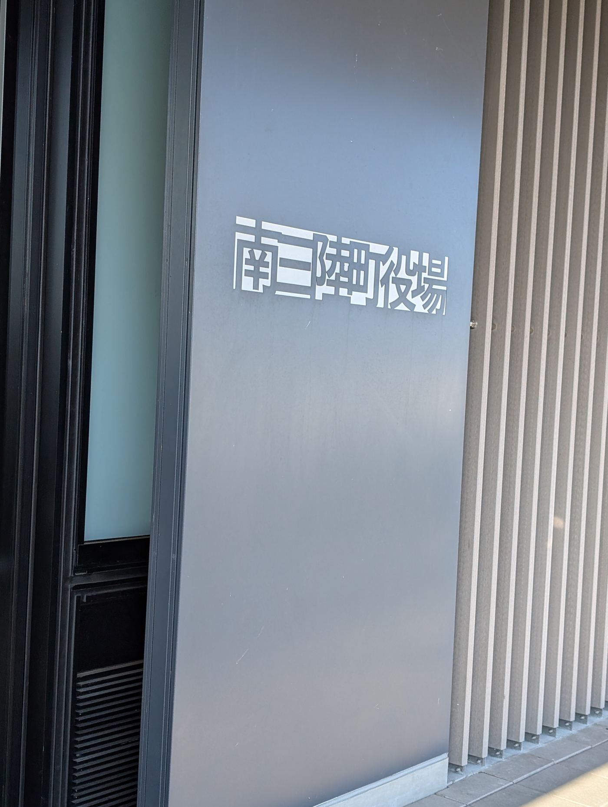
另外，自三一一後南三陸很重視國際交流，他們也希望藉由交流把防災經驗往外分享。這裡的說法是：日本因為常有地震，所以居民普遍有防災意識；而他們覺得台灣對「海嘯」這類災害的理解相對不足，所以希望透過交流把相關知識帶給台灣。除了導覽，這裡也提供 homestay，包含料理體驗等活動，目的還是希望透過生活接觸建立更深的文化互動。
我覺得南三陸町最好的就是與自然環境共生的思考與行動。不僅僅只面向在地或是日本，這裡會辦台日的防災、海洋研討會，討論像是海水升溫後漁獲變化等議題。很明顯，311 雖然是雙方的建立交流的契機，但現在的交流已經不只是關於災害，而是開始一起思考未來。
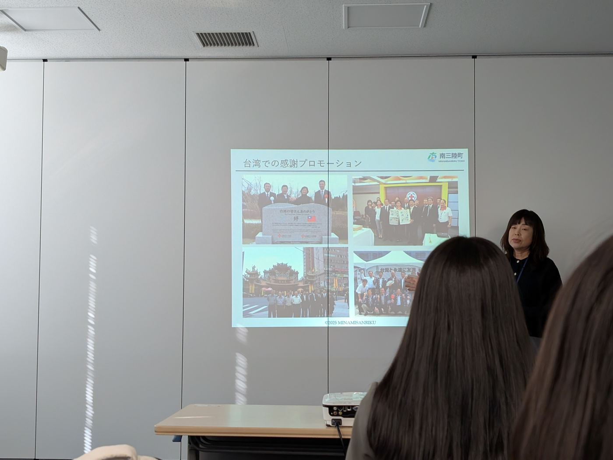
其中覺得比叫有趣的是同學在問答中提到醫院選址的過程。由於原址靠海已不適合再建，他們最後是選擇往山上遷移。日本的預算申請邏輯頗有趣：他們不是以「災後需要更大規模」去爭取，而是以「架高地基需要經費」作為主要理由，讓預算能順利通過。
研修招募提案工作坊
展開課程筆記
QA
- 以南三陸町來說，6、12、1月是旅遊或是國際交流的淡季
- 這邊的國際交流最多300個人。
1. 以臺灣高中職學生來說，臺灣人的角度為甚麼要選南三陸町？
→ 森林、海事、海鮮、繁體字友善、台日友好、防災知識、歷史、化石
2. 請提出三個吸引台灣青年來南三路町見學的理由？
→ 防災教育、home visit（生活、文化體驗）
3. 以我們想到的這三個亮點設計一個見學觀光團？
⇒至少三天兩夜。
補充：國際認證只有這個地區的蚵仔。
提案報告：
[https://docs.google.com/presentation/d/1GxIyLlk2pedRjsWUDnAfobEOFy4kauWj/edit?slide=id.p1#slide=id.p1](https://docs.google.com/presentation/d/1GxIyLlk2pedRjsWUDnAfobEOFy4kauWj/edit?slide=id.p1#slide=id.p1)
在南三陸的交流會裡，老師提到這裡的旅遊與國際交流有明顯的淡旺季。尤其是 6 月、12 月、1 月，整體活動量會降得很低；而一年最多也大概接待 300 位國際交流的來訪者。這些數字其實說明，南三陸的接待量不算大，但規模小反而讓體驗更細緻。老師問了幾個問題，分別是：
- 台灣高中職生為什麼會選南三陸？
我們小組討論：如果站在台灣學生的角度，南三陸的吸引力其實滿具體的：與森林、海洋直接相關的自然環境、海鮮與養殖漁業文化（尤其是有國際認證的牡蠣）、對繁體字友善、台日交流歷史深、防災知識與 311 的歷史脈絡、特殊的化石與自然資源。這些都不是一般觀光地能提供的，反而更接近一種「有內容的見學」。
- 吸引台灣青年來見學的三個亮點
今天我們小組討論出的三點，其實非常符合南三陸目前的特色：
- 防災教育：311 的故事、避難經驗、重建過程都很有深度。
- Home Visit：透過料理、生活空間、聊天接觸更真實的日常。
- 文化體驗：從自然到產業，都可以變成體驗式的課程。
我自己覺得這三個方向都比單純觀光更能留下「學習痕跡」，同時對於我們來說，也希望將這次的體驗分享給台灣的其他人。。
- 以這三個亮點設計的見學團
我們試著把想法變成一個行程，稱為：〈南三陸・三生の絆旅〉。「三生」的概念我蠻喜歡的，因為它包含：生命（防災）、生業（產業）、生活（日常、文化）。可以用三個面向重新理解南三陸，也讓行程有了更清楚的主軸。
我們設計了五天四夜的行程，希望大家可以用稍微長的時間體驗南三陸町。
Day 1｜生命：了解南三陸的防災體系
參訪防災中心、地震海嘯相關展館，理解這裡如何從災難中重建。
Day 2｜生業：接觸當地漁業
走訪漁港、了解牡蠣養殖，認識「國際認證」背後的品質與管理。
Day 3｜生活：自然、home stay、居民互動
進入在地家庭，從飲食到日常作息感受生活節奏。
Day 4｜交流會
學生與在地人分享心得，討論彼此的文化差異與共同關心的議題。
Day 5｜文化與藝術體驗
與南三陸的地景、工藝、祭典相關的體驗課程。
另外我們也設計了一個伴手禮清單，讓大家在這次旅行中可以帶回一些辦手禮分享給在台灣的大家，並且也將這份記憶帶回家。我們選的辦手禮都可以在三一一紀念館旁邊的sunsun商店街禮買到，包含海產加工品、有認證的牡蠣、木工小物、地方限定商品等。我們希望傳遞的理念是：「透過三生之旅，可以親身感受到南三陸的災後復興、產業再生與日常文化。」
Day 10
でんでんむしカンパニー工作坊、南三陸町工作坊成果發表會
November 21, 2025
＋
でんでんむしカンパニー工作坊、南三陸町工作坊成果發表會
南三陸藍～でんでんむしカンパニー工作坊
展開課程筆記
講者中村未來～
因為311的關係，在半年後來到這邊，在這邊當志工參與地區復興後留下來。發現當地的社會課題～高齡化⇒能從事生產、農田廢棄和房屋空置等，同時發現這間百年老屋，就接手下來。
業務範圍：
- 藍染：植物染～蓼藍（可以泡茶、染布、染髮）⇒工藝作坊、體驗、銷售
- 住宿：除了住宿外也提供餐食，食材來自在地，可以體驗活動（如劈柴）
大家想到南三陸町通常想到海，但其實這邊山也很多。
「為了幫助人們重回正軌，我首先必須了解當地的氣候。而要了解氣候，短短一週或一個月是遠遠不夠的。我想我需要在那裡待上一年，即使只是短暫的一年，這樣才能體驗到四季的變化。」
希望可以在未來：
- 做出跟蓼藍有關的飲食（麵包、茶、食譜）
- 與企業合作開發產品
- 一家可以體驗里山生活的旅館
- 休息寓所
「對不再使用的物品，可以創造出與未來連結的物品與體驗。」
洗手間是用土，微生物分解，酷。
房子感受的出來很老了，但是是用真心在保存的，樑柱也看的出來是在地的木頭鋸下來後建成的。我們也體驗了古老的可以收納的梯子，覺得在大自然裡生活的老人家身體一定很好。
這裡的產品感受的出來中村小姐的用心，也很喜歡她留下來的原因，整個脈絡都很溫暖。
今天參訪的是南三陸でんでんむしカンパニー工作坊，講者是 老闆中村未來。中村小姐是在 311 之後半年來到南三陸擔任志工。原本只是短期參與，但在災後的重建與陪伴過程中，她看見了當地的課題：人口老化、農田荒廢、空屋增多。也因為這些問題，她決定留下來，接手了一間百年老屋，然後慢慢把它轉成現在的藍染基地與旅宿。
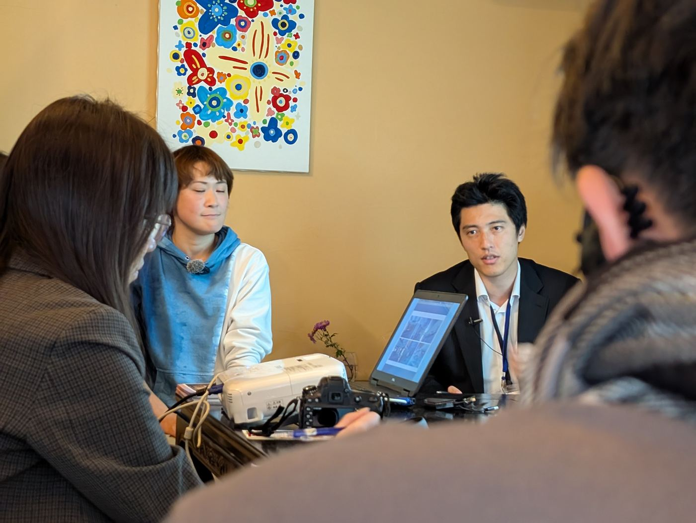
- 藍染（蓼藍）：植物染，能染布、染衣，也能泡茶。這裡有工藝作坊、體驗課程，也有產品銷售。
- 住宿：除了住宿以外，也提供當地食材製作的餐食；旅客可以體驗在地生活——像是劈柴、整理空間、接觸山林。
在講座中，中村小姐提到外地人對南三陸的印象可能都是「靠海的小鎮」，但她特別強調：其實這裡的山林資源也非常深厚。她的藍染事業算是站在「里山」的角度重新看地方。
中村小姐留下來的理由讓我印象很深：「要幫助人們回到生活軌道，我得先了解這裡的氣候。而要理解氣候，一週或一個月都不夠，我需要一整年去感受四季。」中村小姐因為救援隊的契機來到南三陸町，並且慢慢被這個地方給打動，某種程度她把「留下來」當成一種理解地方的方式。老屋的接手與活化就是她繼續深耕，甚至將南三陸町魅力傳遞給更多人的媒介。
接著中村小姐提到她想做的未來項目，她的想法很生活化，也很地方導向。她希望透過開發蓼藍相關飲食（麵包、茶、食譜）、與企業合作開發產品、打造一間能體驗「里山生活」的旅館、讓老屋成為一個休息寓所（給外地人、也給居民）等方式將她所知道的南三路町分享給大家。我很喜歡她提到的一個概念：「對不再使用的物品，可以讓它重新連結未來。」這與我如何看待地方創生或是文化的概念很像，很多事物本來就不是去開發、創造，而是重新讓它出現在大眾視野中。這句話其實很能代表她的工作方式：從老屋、老木頭、老技藝裡找新的可能。
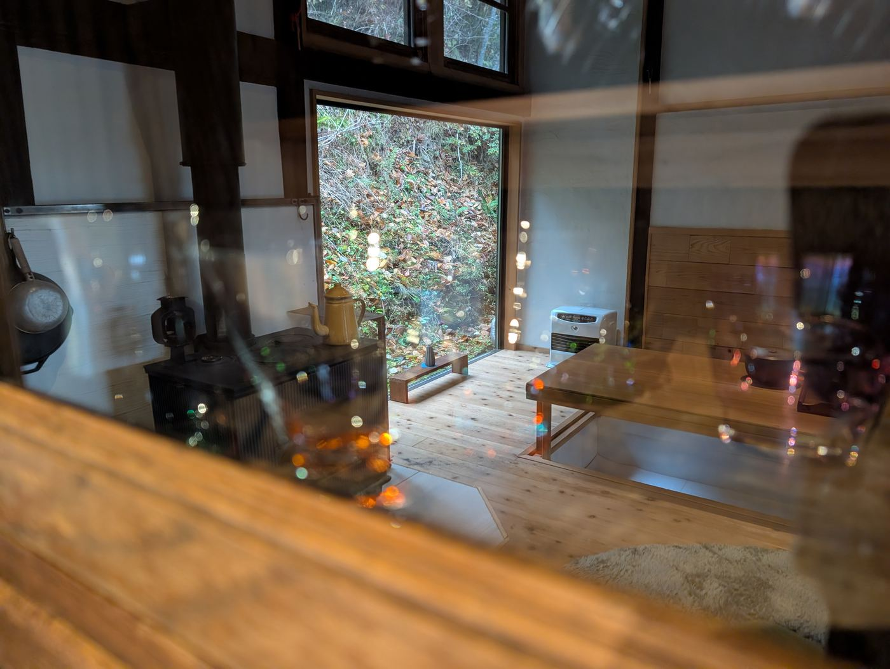
另外，這棟老屋真的能看出歲月：樑柱的木頭是當地伐下來的，保留方式非常用心。她還展示了一個古老的「可收納梯子」，構造很巧妙。洗手間也令人印象深刻——用土製作、靠微生物分解，是一種對自然負擔非常小的設計。整個空間都能感受到她的細膩與「慢慢生活」的節奏。
南三陸町學生旅行工作坊
展開課程筆記
第三組：特別聚焦在home stay 跟 森林資源上，第一個部分是比較溫暖的吧，大家可以透過這部分來體驗章魚燒、燒芋、在地食材的部分。home stay 對這次來到這邊的我們來說是很重要的經驗，感覺大家其實都很累又很緊繃。突然遇到一群很溫暖的長輩，對自己很好、問自己餓不餓、準備很多好吃的食物的時候，就會覺得像是回家一樣。他們希望將這份感動也留給來到這邊的學生。
另一部分森林資源上，由於南三陸町有非常多認證，學生們也可以透過見學跟講座了解大自然。因為時間拉的是兩週，所以也會安排文化體驗跟地點見學（如311紀念館）讓大家可以透過兩週的時間，了解到這裡的魅力。
第四組，這組希望從災害經驗重新看見生命的價值，讓高中生可以思考生命經驗以及日本如何看待災害，希望可以讓台灣年輕人將這個經驗帶回台灣。同時，這組聚焦農業、漁業跟設施，讓大家從各式各樣的角度可以認識南三陸町，加上這些事情都與震災有關，我們可以從各式各樣的小細節裡，感受到他們如何面對災害重建時的決心與韌性。
第壹組將主題鎖定在南三陸町的特色，章魚上，同時設計一個4~6日弾性時長，以林業、漁業、建築為主，這組也聚焦在南三陸町得到國際認證的FSC 國際森林認證、水產養殖管理委員會(ASC)國際認證，希望可以介紹給台灣的學子，學習當地的自然保存。另外一定要去的是311紀念館與生涯學習中心，讓大家可以參觀當地組織。整體行程比較緩慢，大家都可以好好地享受這趟旅程，慢慢的認識這個地方與組織，知道這個城鎮的魅力。
第五祖，這組聚焦農業、漁業跟設施，等面向，設計三個路線，這些路線從各個面向切入，也加入很多在地特色，例如章魚神社、魚市、農業體驗、神社、釣魚體驗等，甚至還有紅酒莊參訪，這部分是我們這次沒有體驗的部分。
在最後，第五組提到因為目前的交流上好像以台灣的嘉義地區高中為主，因此也設計了一個規範跟合作流程，內容包含，台灣業者、南三陸觀光協會、台灣公部門等，希望透過這個協力模式讓這麼好的機會，可以在全台灣都實施。可以看到這組在設計行程之餘，更多的是希望讓這個旅程、南三陸町這個地方被更多人看到，也可以讓國際教育、文化永續、合作等等「善」的事情，可以持續下去。
我給出去的恩，要像水一樣流走。我收到的恩，就要深深的印刻在心裏。
今天聽完各組的分享，我覺得大家的企劃其實都反映了這幾天在南三陸的感受，只是角度不同。我也記了一下目前對各組的理解以及我很喜歡的地方。
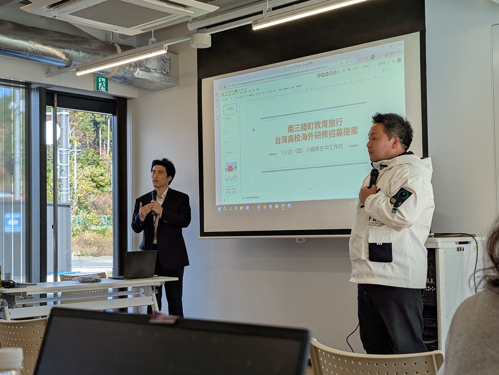
這組有兩個清楚的重點就是 home stay 和 森林資源。
home stay 的部分，他們講到的那種「突然被照顧」的狀態，確實是這次行程中很鮮明的體驗。因為前幾天的工作坊還有離台蠻久的關係，大家本來都很累、很緊繃，但遇到那些熱心的長輩，不停問餓不餓、端食物給你，那個感覺會讓外地人立刻鬆下來。這組希望把這份溫度也變成學生來南三陸時能感受到的核心。
另一部分是森林。南三陸有很多相關認證與自然資源，他們把見學、講座、文化體驗（包括 311 相關地點）分配在兩週的旅程中，讓學生能慢慢理解這裡的自然與人之間的關係。
第四組重點：從災害經驗思考生命與在地的堅韌
這組的主軸比其他組都更加鮮明，是從震災經驗出發，希望帶台灣高中生去思考生命價值，以及日本面對災害的方式。內容包含農業、漁業、設施等不同面向，讓大家從細節觀察震災影響下的重建方式。
他們的核心是「帶著一個經驗回台灣」，有點像把南三陸的韌性轉譯給台灣的學生，然後透過學習與旅程，讓自己不管是在心態或是經驗上都可以成為一位「成年人」。
第一組：用自然資源串起 4～6 天的深度見學
第一組比較像把南三陸的「核心特色」壓縮成一個清楚的行程模式。主題以章魚與三大產業：林業、漁業、建築為主。他們把南三陸取得的 FSC 與 ASC 國際認證作為見學亮點，希望讓台灣學生理解這個地方的自然保存方式。行程是慢節奏設計，會到 311 紀念館、生涯學習中心等地方，讓參與者可以用比較沉穩的步調認識城鎮。
第五組：三個路線 × 多面向的在地特色設計
第五組切入的面向很多——農業、漁業、設施。他們設計了三條不同的路線，內容包含我們這次沒經歷的部分，例如：章魚神社、魚市場、釣魚體驗、農業體驗、神社巡禮、甚至紅酒莊參訪，這組比較像是「從多個切點」來理解南三陸。
另外他們把目前交流偏向嘉義地區這件事放進企劃裡，提出一套合作流程：台灣業者 × 南三陸觀光協會 × 台灣公部門，希望能讓這類交流從一個地區擴散出去，比起行程設計，第五組又花了一點心力在想「怎麼讓這件事情長期運作下去」。
小結
整體看下來，每組的方向都不太一樣：
- 第三組重感受（home stay）與自然
- 第四組重生命與震災相關的反思
- 第一組重自然資源與緩步探索
- 第五組重制度化與可持續的合作結構
不過在某些層面上，例如國際認證（FSC 與 ASC）或是比較重大的事件（東日本大地震），基本上都是各組會提到或想要以此為亮點的特色。這也側面顯示了台灣青年學子看重的特質是甚麼。不過因為各組組成各有不同，所以我們也都是從不同角度去理解南三陸，反而讓整體的圖像更完整。最後，在聽到現場的大人物致詞時記下了一句我覺得很感動的畫，這句話也許可以當作今天的註解：「我給出去的恩，要像水一樣流走；我收到的恩，要深深記在心裡。」這趟旅程有很多類似的瞬間，我們也都是抱持著這份心情去思考如何利用工作坊回饋給旅程中遇見的人。
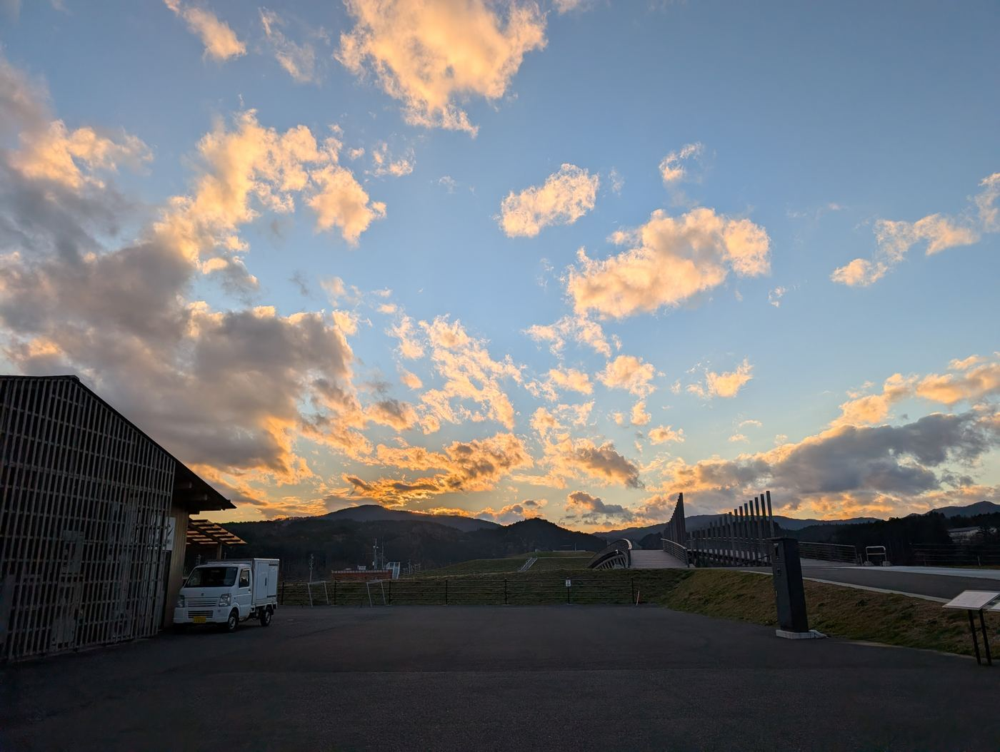
Day 11
ねほりばーらんど香菇園、有限会社耕佑、farmers 工坊
November 22, 2025
＋
ねほりばーらんど香菇園、有限会社耕佑、farmers 工坊
ねほりばーらんど香菇園
展開課程筆記
ねほりばーらんど香菇園
中條友紀小姐
中條小姐本來在迪士尼樂園工作，但因為一直對農務有興趣所以最後回到家鄉經營菇園。
菇園裡面兩個棚子可以養一個家庭，通常養育的狀態時一個類似太空包，裡面有木屑跟肥料還有放想要的菌種，因為冬天很冷的關係會在裡面放暖爐。
有三種方式會讓香菇跑出來：泡在水裡、打它、溫度差。
除了專門從事農業外，也吸引了一些人來這邊交流活動，剛好回來這裡20年，舉辦了個交流會讓花山的大家可以來聊聊。
拔香菇的方式是抓著根部，然後往下拔。通常會摸菇傘下面有沒有褶皺，如果已經有了，就代表可以採收，還沒有的話代表這棵香菇還會長大。
大家就在這邊拔香菇，會變成我們的午餐！
今天去了中條友紀小姐的香菇園。會想要開香菇園創業的原因是她原本在迪士尼工作，後來還是選擇回到家鄉專心務農。她說自己一直對農務有興趣，最後還是覺得「土地比較適合自己」。這句話我聽起來很平實，但也能理解那種「回到生活真正想做的事」的感覺。
香菇園裡有兩個大型棚子，中條小姐說「兩個棚子就能養活一個家庭」。香菇其實都是從像太空包的東西長出來的，裡面是木屑、肥料，再加上菌種。因為冬天太冷，棚裡需要一直開著暖爐。
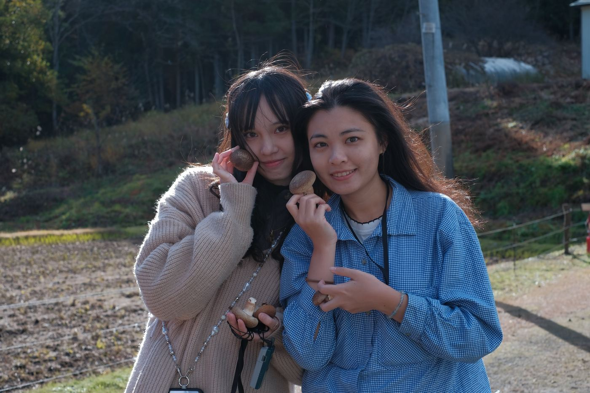
她跟我們分享了香菇怎麼「被催出來」：泡水、敲打、或利用溫度差。三種方式都能刺激香菇冒出頭。由於我是個文組生，平常對這種事情也沒有多關注，所以聽到這些方法的時候覺得非常有趣。由於我以前也沒有採收過香菇，所以中條小姐在講解採收的時候我也特別聽了一下，才知道採收的方法也很有趣。原來採收香菇時需要抓著根部往下拔，而且拔的時候要晃一晃，不會把土一起抓下來。另外，乃瑄跟我們補充有些菇園會限制大家採收時要觀察菇傘底下的褶皺，有褶皺表示可以採收，沒有的話就是還會再長大。不過中條小姐的香菇園沒有這項限制。參訪後的氛圍其實很輕鬆，大家就在棚子裡一邊聊天、一邊拔香菇，最後我們採下的香菇還真的變成了午餐。透過這次體驗才發現原來食物從土地長出來的節奏這麼清楚，只是在都市中的生活中很容易忽略。
另外，中條小姐剛好回來滿 20 年，她最近辦了一場交流會，讓花山的人聚在一起聊聊。即使只是務農，她仍然保持著「讓地方聚在一起」的想法，聽起來很日常，但其實是需要很多心力的。今天的現場感很強。香菇園的溫度、木屑味、大自然的聲音，還有中條小姐講話的節奏，都讓我覺得務農這件事比想像中更「靠近生活」。
有限会社耕佑
展開課程筆記
伊藤秀太先生
栗原地區其實不太適合農耕，但伊藤先生引進了溫室跟水耕的技術來種植。
耕佑⇒跟朋友一起農耕。
從米開始，開始往水耕蔬菜，從只有一個溫室，到十間溫室，規模慢慢變大。
營業額的部分：60趴是生菜，15趴是山芹菜，15趴萵苣，10趴菇菇
現在的產量可以供應大賣場，到青森的aeon都會是耕佑的生菜。
這邊使用的農業用水會是一直循環的，從地下水開始抽，然後會有循環的水路讓誰一直循環。
20-25度 萵苣生菜最棒！
這邊也有加工出貨的機器跟保存用冰箱，可以在工廠裡包裝後直接前往aeon
香菇的技術跟上一間菇園是一樣的，主要是種植舞菇。
今天參訪了伊藤秀太先生的農場。栗原這一帶本來就不是適合作物生長的地形，但他卻用「技術」把一個原本不利的環境變成可持續的農業場域。伊藤先生一開始是從朋友一起耕作開始的（名字叫「耕佑」）。一開始只種米，後來慢慢往水耕蔬菜擴展。從最初的一間溫室，到現在已經有十間。規模的變化其實說明了這片土地被重新「長出可能性」。
目前營業比重是以下的資料：
60% 生菜
15% 山芹菜
15% 萵苣
10% 菇類
最讓我驚訝的是出貨範圍：他們的生菜能供應到大型賣場，甚至遠到青森的 AEON。從栗原一路送到北方，這件事本身就代表穩定性和品質已經達到量產級了。
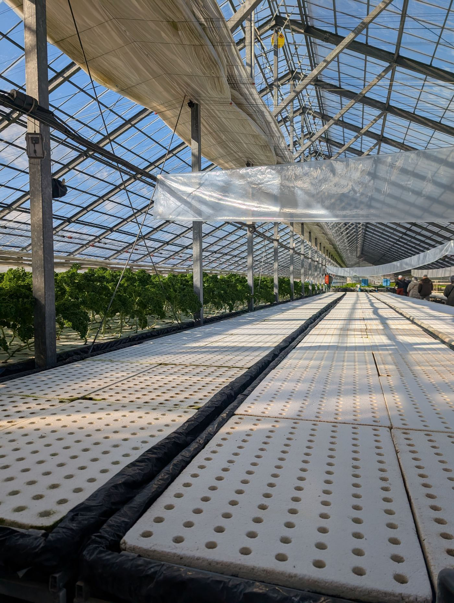
農園中的水耕系統是循環式的，從地下水抽取，然後透過水路一直循環，維持植物需要的溫度與養分。伊藤先生說萵苣和生菜在 20–25 度最舒服。才知道原來要種出好吃蔬菜，也有這麼多眉角，蔬菜也跟人一樣在自己偏好的「生活環境」中可以生的更好。而這次旅程下來我一直都覺得這裡的蔬菜非常好吃！
廠內還有加工與保存設備，採收後能直接在工廠內包裝，再出貨到 AEON。這種一條龍的系統感覺很現代化，也讓農業變得更可預測。另外，他們也種植舞菇。技術和之前參訪的香菇園相近，所以看到那個熟悉的太空包，我竟然有一點「喔我知道這個」的小小熟悉感。
整體來說，伊藤先生的農場讓我看到一種「技術型農業的韌性」。土地條件不好，但技術補上；環境不友善，但溫室彌補；市場遠，但物流鏈補足。
有點像是在東北常看到的那種精神，大家都不是完全的硬撐，更像是在嘗試中逐步改善，然後在符合自己理念的狀態下找到自己喜歡的方式生活下去。
farmers 工坊
展開課程筆記
Farmers 工坊
不用工廠大量生產的原因是因為想要讓這個商品更有故事。通常會拿來當果醬的都是不能在市場上使用的果實。
今天現在這邊試作了甜椒果醬，很簡單，但也很有趣。先將甜椒汁加入香草莢跟糖開始加熱攪拌到92度，在這個期間需要一直攪拌，避免燒焦。等到92度後再加入一次糖，然後快速攪拌，後面就好了！
後面開始簡報，希望創辦以在地、故事為主的品牌，在十年前栗原面臨的問題是：缺乏具有代表性的特產品、後繼者不足、既有的各項取組之間缺乏連結，但最重要的是無法讓居民與來訪者真正感受到地方的魅力，所以創辦這個品牌。
在後來舉辦了各式的活動，例如2014年的栗原農夫計畫，這個計畫是跟麒麟啤酒合作的，希望可以透過這次的合作讓當地孩子認識故鄉外，也可以吸引外地人，分享栗原的魅力。
以美食旅遊傳遞地方魅力：農業體驗、跟無印良品合作的美妝體驗等等。同時也有：農產品的銷售與物流流通、 加工品的研發與販售、與餐飲店合作開發聯名菜單、規劃與餐飲店合作的活動企劃、經營關係人口交流據點等。伊藤先生不僅是想要精進1級產業而已，而是希望將觸手神像其他地方，有趣的例子是跟學校的合作，在疫情期間與學校合作開發餐食組合。透過這次的經驗發現，只要產品背後的故事是好的，就好有人想要購買。
⇒由生產者與餐飲店（都市，如仙台）合作，目前繼續以這樣的方式進行
與仙台咖啡店•糕點專門學校共同開發菜單，還有「栗原未來食譜開發營」→邀請大學生討論企業與地方所面臨的問題，共同提出解決方式。（讓學生的想法可以落地，同時也讓彼此的想法碰撞）
農產品的銷售與流通、加工品的研發與販售、建立人們交流互動的機制⇒理念非常棒，但只有成為事業、商業行為才能真正永續。
從失敗的靈感，舞菇跟卡車餐車現在還沒有賺錢，從這些事情會從其他地方想、或是改善，像是餐車其實有宣傳的功能。對伊藤先生來說失敗不是不賺錢，是沒有持續改善的餘地。
有同學問出如何在自己想做的事情跟市場導向之間作出平衡，但伊藤先生覺得這兩件事不是分開想的，有時候行動就是會跟保護當地連結，這是沒辦法分開或是捨棄掉的。要是賺錢卻是破壞自然的話，那就不會想做。
栗原市裡做小規模的店家其實很多，在商店街或風景地的都有，但如果想要做六級產業化，量一定很大，所以規模不太一樣。剛開始就會跟其他公司合作，分散風險。主要是協助採購的部分，或是提供協助。（伊藤小姐sunbrew）
今天在 Farmers 工坊做了甜椒果醬。這裡不做大量生產，而是刻意保留人工與故事性。用的甜椒其實都是市場不會收購的果實，但透過加工，反而成了新的商品。
整個製作的流程意外地簡單。我們把甜椒汁加上香草莢與糖，加熱到 92 度，在這段期間要一直攪拌避免燒焦；到溫度後再加一次糖、快速攪拌，就完成了。是一個簡單的「親手做」體驗。
試做完後我們開始聆聽今日的簡報，也讓我更加理解這個品牌成立的背景。十年前的栗原面臨很多地方共同的問題：缺乏代表性的特產、後繼者不足、組織之間缺乏連結，更重要的是外地人甚至居民自己，都很難真正感受到這個地方的魅力。而farmers 工坊品牌的創立，就是為了補上這一塊。
他們開始做各式活動，例如 2014 年與麒麟啤酒合作的「栗原農夫計畫」。希望孩子能認識故鄉，也吸引外地人看到栗原的特質。後來逐漸發展出「以美食旅遊傳遞地方魅力」的方向：農業體驗、與無印良品合作的美妝企劃、加工品研發、販售、與餐飲業合作推出聯名料理、規劃交流活動等。
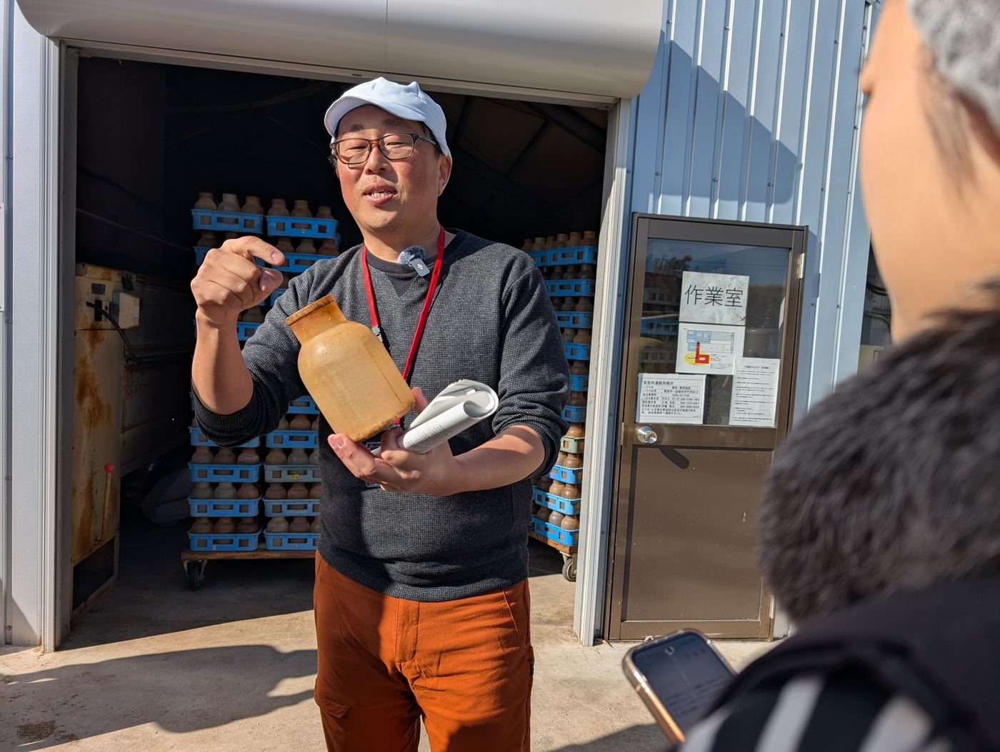
在分享中讓我印象最深的是伊藤先生的思考方式，他不把自己視為只做第一級產業的人，而是想把觸角伸到更前端、更外面的地方。像疫情期間與學校合作推出餐食組合，就是個典型例子——產品背後有好的故事，人自然會願意嘗試。他也很重視「合作」。與仙台的咖啡店、美食店、糕點專門學校一起開發菜單；甚至還有「栗原未來食譜開發營」，邀請大學生一起思考地方的課題。這些企劃讓我感覺栗原不是只在想「把產品打出去」，而是想建立一種能讓地方跟外地互相滋養的循環。伊藤先生說一句話我很喜歡：「理念很好，但只有成為事業、成為商業行為，才能真正永續。」這句話非常務實，這也是我在文創系的訓練中，我們一直很看重的。死守著自己的理念，卻沒有人認同、買單，那就無法延續，無法延續就無法傳承。我們在推廣、理念與延續上面一定有很多取捨與方式，也剛好呼應我們這幾天在不同地點聽到的內容，浪漫或使命感是很重要的，但不能只靠浪漫就能存活。也有人問他「怎麼在自己想做的事與市場需求之間取得平衡？」他回答得很自然，兩者其實是一起的。如果賺錢的方法會破壞當地，那他寧可不做。行動本身會把他帶到想守護的方向，而不是把兩條路分得很開。即使有些事業目前沒有賺錢（例如舞菇和餐車），他也不把這視為失敗。只要還有可以改善、可以延伸的可能性，那就不是失敗。對他來說真正的失敗，是停在原地、沒有下一步。
最後提到栗原內其實有很多小型店家，但如果要往更大型的「六級產業化」走，就必須跟更多企業合作，因為量體會完全不同。這裡也看得出 sunbrew（伊藤小姐）在協助採購與串聯資源上的角色。整體看下來，今天的參訪讓我看到另一種地方創生的樣子，不是喊口號，也不是靠單一明星商品，而是靜靜地把每個故事連起來，把彼此的力量慢慢堆高。
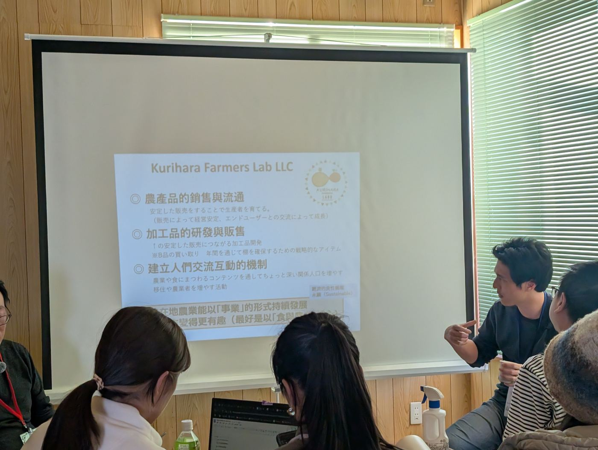
Day 12
VESTA CHP 組織
November 23, 2025
＋
VESTA CHP 組織
VESTA CHP 組織
展開課程筆記
工坊參觀
台灣禁止砍樹40年，現在開放，日本是以永續林業為主，因此在砍伐的時候會注重沒有林業廢棄物。
木片會用於能源使用、造紙
木材會以重量決定價格
由於這裡的木材主要以建材為主，如果品質不過關也會用於能源以及造紙。
木材以闊葉樹跟針葉樹為主。
由於木材的樹皮不會使用到，所以會送進一個機器裡先用滾的方式扒掉樹皮，然後再把樹處理成要產出的樣子（木片、木頭）。
現在
台灣的林業40年不能砍伐，樹都是政府的，因為公部門主導，所以林業推動的很快。比日本還要用更多力氣，日本比較慢慢發展的感覺。
木片一直煮會變成白色，就可以變成可以製紙的材料，同時也會跟其他廢紙再次利用，這是技術上可行的。
闊葉木則是白色的
針葉木做出來的紙比較灰色、軟，像是報紙
木材要真的可以使用前需要煙燻來乾燥木材，大概需要十天。這個煙燻木材跟煙燻食材的概念是一樣的，煙燻完之後就不太會發霉。可以成為商品的水分程度要看產品，會用機器去判別，建材水分的話20趴左右，基材15趴，牆壁地板可能10趴，各自需要的都不一樣。
煙燻後會變成更棕色的顏色，乾燥用溫度大概50-60度左右。如果追求效率100度比較好，但追求品質的話就是60度。
第一次煙燻是一起的，第二次會依照需要的濕度跟木材不同分開處理。
使用石油燒可能會破壞樹的品質，但木片不會，也不會製造垃圾，所以採用後者。如果溫度超過一定數值也會破壞木材的細胞。
日本建材業一般會是分工的，會由不一樣廠商提供建材集合到一處建造。但這裡因為是全包，所以難以自動化，不過可以因為客戶調整客製化。
這邊堅持使用傳統機械，因為比較環保。品質也較好。現在主要還是用人工去辨認建材狀態，但也因為AI發展，之後或許不需要人工辨別。
在看到的過程中木頭會產生木酢液，也是應該防霉的措施。
你的工廠裡面都是阿拉斯加的木材，原因是美國不會使用原生的木材，後來就運來日本使用。本來會使用國外木材，但後來發現各國的林業狀態不一樣，會對他國林業造成破壞，所有最後回歸理念，使用在地木材並強調永續。
在最大的工廠裡可以一條龍加工，但因為客戶需求各有不同，所以還是以分開加工為主。
另一個工廠地址是用舊學校改的。
煙燻後的木材會放在外面，一般來說木材如果遇到下雨的話會變形，但煙燻過後的就沒問題。
到了另一個地方風乾木材，這樣不會破壞木材材質、也不會喪失油份，盡量保持木材原來的模樣，但就會需要花到三倍的時間。
木片要成為染料前要先乾燥，加熱槽用電為主，但旁邊也有過濾區，加熱槽下面有區塊是可以讓空氣跑進去讓火可以燒起來的。
永續！燒木片的地方，可以將熱能儲存起來，然後使用在隔壁的木片加熱槽，加熱後的木片可以成為燃料。
大機械用一樣的木片燒製，最後只剩下碳，當中產生熱能可以儲存，也可以轉化成電能。
最後最後的粉塵變成木顆粒，可以變成燃料或是貓砂。
管理林木的過程中需要砍一些樹枝，這些樹枝也可以變成木顆粒。
也有跟小七合作的募款箱，日本全國看得到，都不用釘子用卡住的。壞掉之後可以維修或是變成能源用的。
簡報
透過森林循環來做地方創生，希望透過找到共同理念的人永續。目標是打在可以永續一、兩百年的森林。也會強調活用當地資源。
想要找到有理念的賺錢方法，理念：永續、熱情>一定要考慮對小鎮好對自然環境好。
目前希望以一百、兩百年後開闢針闊混交林的森林為目標，原因是混合林的優點有這些：水質的淨化、持續提升生產力、治山防災、生態系的維持、以巨木林為目標。
製作的商品除了剛剛說的募款箱、家具外，還有筷子，筷子多用廢料製造，讓浪費縮到最小。
希望打造的產業是：
和地區共生→循環 ·不考慮環境的產業絕對禁止
- 資源的零排放
- 能源的自給自足
- 各種產業互相連結合作人材的培育(納入從外部而來)
- 迎向未來的教育
今天的參訪完全超出我原本的想像。以前對林業的印象很模糊，只覺得「砍樹」是負面的，但在工坊裡看到的整個運作脈絡，讓我第一次理解什麼叫：永續林業是真的可以被實踐的。
日本的林業跟台灣很不一樣。台灣禁止砍樹 40 年，森林大多是公部門主導的，但日本則是走「永續砍伐＋分類利用」的路線，因此機制成熟、鏈結完整。在VESTA CHP，木材的去向分成三類：品質好 → 建材、品質普通 → 木片能源、不能用的部分 → 造紙。樹皮會先被滾掉，再進入不同的加工程序。木片煮久了會變白，可以變成紙漿；針葉木做出來的紙比較灰軟、像報紙；闊葉木則比較白。另外一到工序是去除水分的「煙燻」，煙燻木頭時需要將溫度控制在 50-60 度，追求品質（100 度會破壞細胞），並且經過10 天以上的乾燥期，煙燻完的木材就不容易發霉。另外木材的水分含量也有不同標準：建材約 20%，基材約 15%，牆壁與地板甚至要 10%。全部都要機器逐一判定。其中一段我很喜歡，是他們堅持用傳統機械，因為環保又能維持品質。雖然 AI 未來可能能辨認木材瑕疵，但現在仍然是以工匠的眼睛與手感為主。
在這邊我看到了循環的極致，他們把木頭的每一毫米都用到極致。就連木材處理過程中會產生：
- 木片 → 加熱槽用的燃料
- 木片燃燒後 → 只剩「碳」
- 碳 → 儲存熱能或發電
- 最後的粉塵 → 變成木顆粒（甚至可以做成貓砂、燃料）
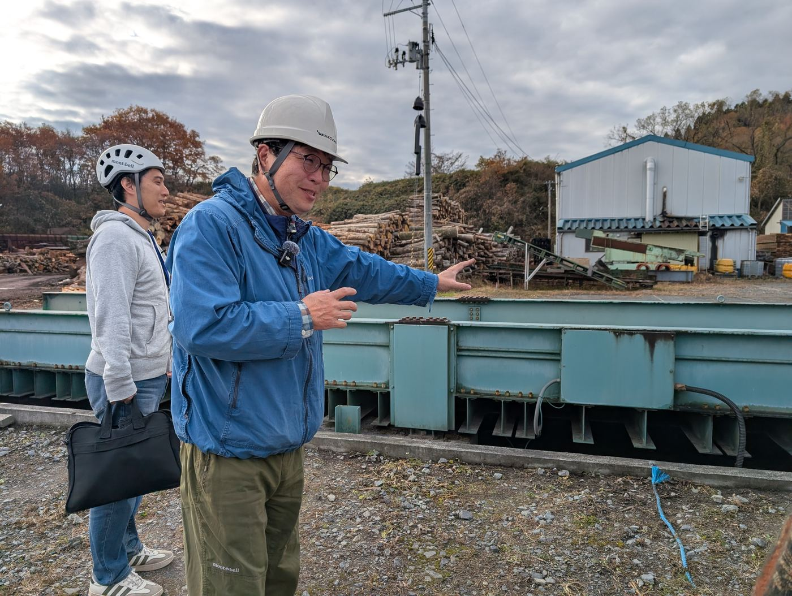
連林間修枝下來的枝條，也都可以拿來做木顆粒，這是一個完整的「零廢棄」循環。工坊裡的所有連 7-11 的募款箱都是他們做的——不使用任何釘子，壞掉可以修，不能修就回收當能源。我很喜歡講者提到的願景，企業希望能打造一片「針闊混交林」的森林，目標是 100 年、200 年後仍能運作的林業。這個願景對於台灣人來說很可貴，我們的民族性在思考很多事情時根本無法想像到100、200年以後的事情，大家都想著現在，以至於對於「永續」的概念不太重視。但相較於日本，台灣的環境卻比日本更加幸運且能實施這個願景。台灣因為自身環境的豐饒，而會忽略保存與永續，這些對我來說是日常的事務，在日本卻是要特別推動的項目，甚至是重要到成為信念與使命的任務。我在看著他們談這些事時那種很自然的堅定，我突然意識到對於他們而言，「永續」在這裡不是被逼出來的政策，而是每個人內心的一種信念。工坊的理念很清楚：
只做對自然好、對小鎮好、對未來好的事情。賺錢，也要跟理念對齊。理念與事業不能分開。
這是我第一次這麼直接看見「森林可以變成一個循環系統」，甚至連能源都可以靠自己產生，也第一次理解永續不是難以達成，而是必須讓每個環節都相信這件事。站在工坊裡，看著木頭從剛被取下的狀態，一路到可以成為建材、能源、紙張、甚至貓砂，我驚訝於每到工序的繁瑣，以及想出這些工序的人的用心。在這裡一棵樹不只是被砍下來，而是繼續活在小鎮的生活裡面，完整它的一生。我想，我以後會更珍惜每一個木製品。也會記得，永續不是高舉的標語，而是一連串細緻的選擇。
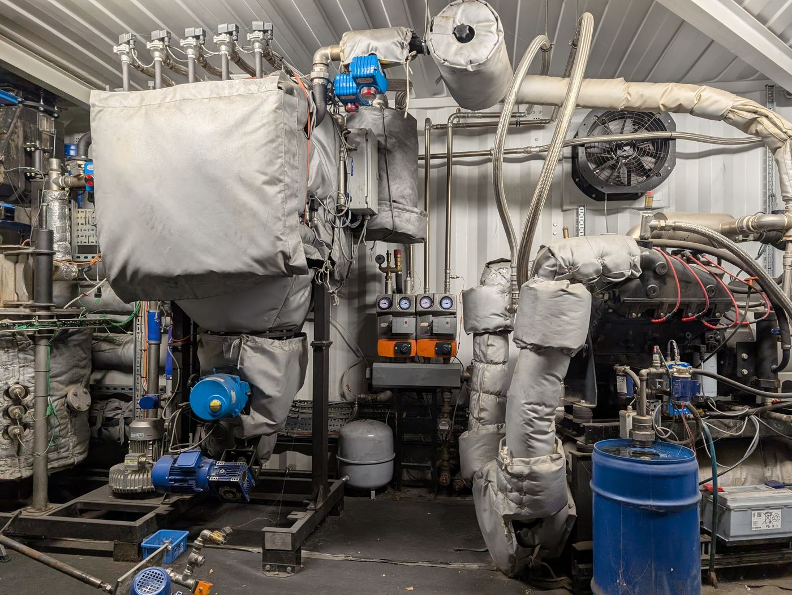
工作坊時坊主分享我們所使用的器具
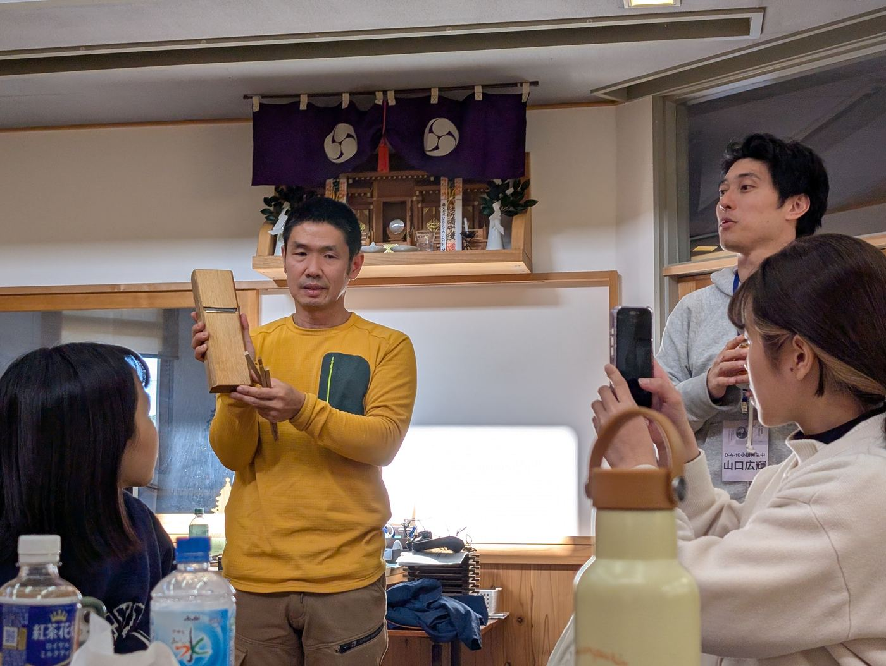
Day 13
仙台觀光國際協會、成果發表會
November 24, 2025
＋
仙台觀光國際協會、成果發表會
仙台觀光國際協會
展開課程筆記
講者 松本尚美
現在想要推動電子化的觀光
也會參加各式各樣的觀光展，與政府合作，或是與日本觀光業者合作培訓。製作多語言的手冊。
日本國際推廣的方面與旅遊為主，還有日台親善協會不過這是志工為主。但都是以熱情為主。
以東北狀況來說，東北的國際旅客占比三趴，但台灣旅客在這裡占了四十八趴。
在推動觀光的過程中，也發現日本東北乃至全國的環境都對素食者不太友善，對於日本人來說，很難想像素食的種類不同，向是五辛素、海鮮素等等。這都還是東北地區很缺乏的知識，所以他們也在跟當地以及廚師合作開發素食餐食。也是希望可以更好的招待台灣旅客。
松本小姐把自己的使命放於如何把自己的家鄉推廣給更多人，但想要推廣就需要先了解其他人，像是台灣。他提到一個例子是台灣茶其實很有明，但對育本人來說很貴。那對於不知道的人就無法理解。松本小姐的工作就是了解這些故事，然後跟別人分享，讓更多人知道。
另外的分享是關於之前中國限制台灣出口鳳梨，台灣就將鳳梨轉出口至日本。由於技術良好所以鳳梨到日本之後口感還是很好，很多人因為這個契機發現台灣鳳梨的美味。日本的大家漸漸從想要支持台灣農業，變成真的喜歡台灣鳳梨，會去購買來吃，這個主辨是很重要的。這讓我發現平常就要好好累積、好好做是的重要性，等到低谷的時候就會有知道自己價值的人們紛紛來支持自己。
日本人現在也面臨一些問題，向是對於農業來說老鼠是不好的，但如果把老鼠殺掉的話會沒有鳥來棲息，就會破壞這個生態系。另外還有熊的數量與熊宮集人的事件，很多人會認為可能要控管熊的數量或是殺掉等等，但這也顯示了生態系的變化，以及人類對於熊的生活的影響。這都是我們需要理解的故事，去理解為甚麼會有這些事件。
松本小姐特別做了關於一個台南的雜誌。通常日本人到台灣都會去買一個旅遊手冊，但通常都是介紹台北。所以特別做了一個關於台南旅遊的版本。
同時也舉辦很多介紹台灣文化的活動，例如原住民、酒等等，翁小姐提到，其實對於大部分日本來來說，很難分辨台灣製作跟中國製作，這對他來說是很可惜的。所以他正在用活動、分享會、擺攤是集等方式，用一個可親的方式讓大家認識台灣。
松本尚美小姐現在主要推動的是「觀光電子化」與「多語言資訊」，也常代表仙台參加各種國際觀光展，和政府、旅遊業者合作培訓。協會裡還有日台親善協會，多數成員都是志工，靠的都是喜歡台灣的那種純粹熱情。松本小姐本人去過台灣無數次，她說台灣旅客在東北的占比高達 48%，遠高於其他國際旅客的比例。在這樣互動與來回的過程中也讓他意識到：「如果要招待好台灣旅客，就必須真正理解他們。」她特別提到東北對素食者不太友善。日本人多半不了解素食的類型，像是五辛素、海鮮素、蛋奶素等等。所以他們現在也在跟廚師合作開發能真的讓素食者吃得安心的素食餐點。
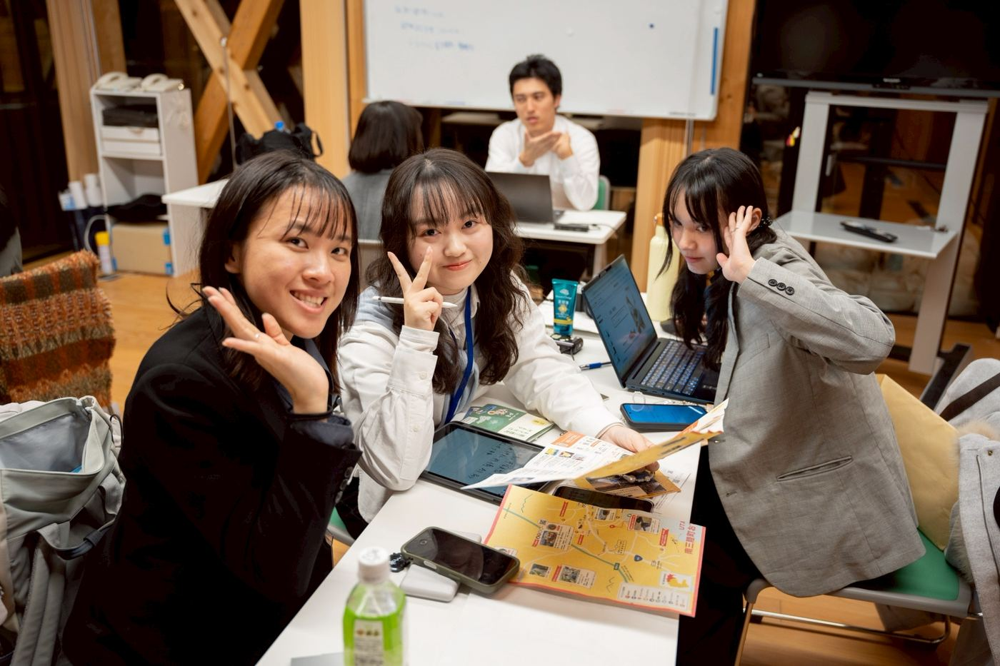
在她的談話裡，我印象最深是那句：「要推廣家鄉，就要先懂別人的故事。」她說台灣茶在日本很有名，但日本人看它貴，不容易理解背後的價值。而她的工作，就是理解這些差異，然後轉譯、分享。
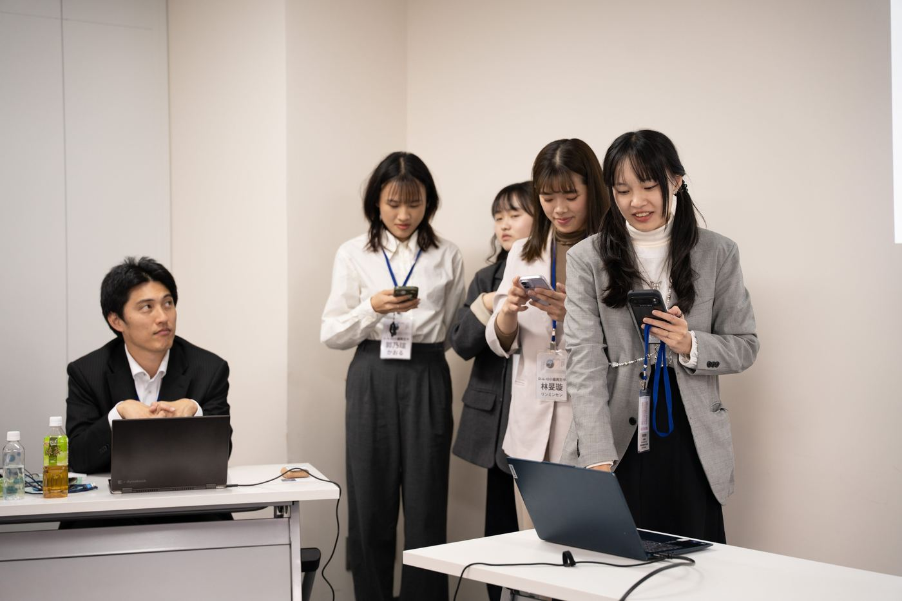
她舉了鳳梨的例子：當中國禁止台灣鳳梨進口、台灣把鳳梨轉出口到日本後，因為技術好、品質佳，日本消費者從「支持台灣」變成「真的喜歡吃台灣鳳梨」。她笑著說，這證明「平時累積很重要，真正的關係是平常做得好，危機時就有人挺你。」她也提到現在日本面臨的一些自然議題，例如農地裡老鼠過多，但如果一味消滅又會破壞鳥類棲息；熊的出沒問題同樣反映生態系變動與人類活動的影響。她說，這些都是「故事」，需要被理解，而不是只看表面。
最後，她展示了自己做的「台南旅遊雜誌」。因為市面上日本旅客買到的幾乎都是台北，她想讓更多日本人知道台南的魅力。她也辦很多台灣文化相關的活動——包含原住民文化、酒、水果——希望用輕鬆、不距離的方式，讓日本人認識台灣。
整場分享給我的感覺是：真正的跨文化交流，其實是從「理解彼此的脈絡」開始的。松本小姐在做的事情，不只是旅遊推廣，而是慢慢把台灣的故事放進日本人的日常裡。
成果發表會
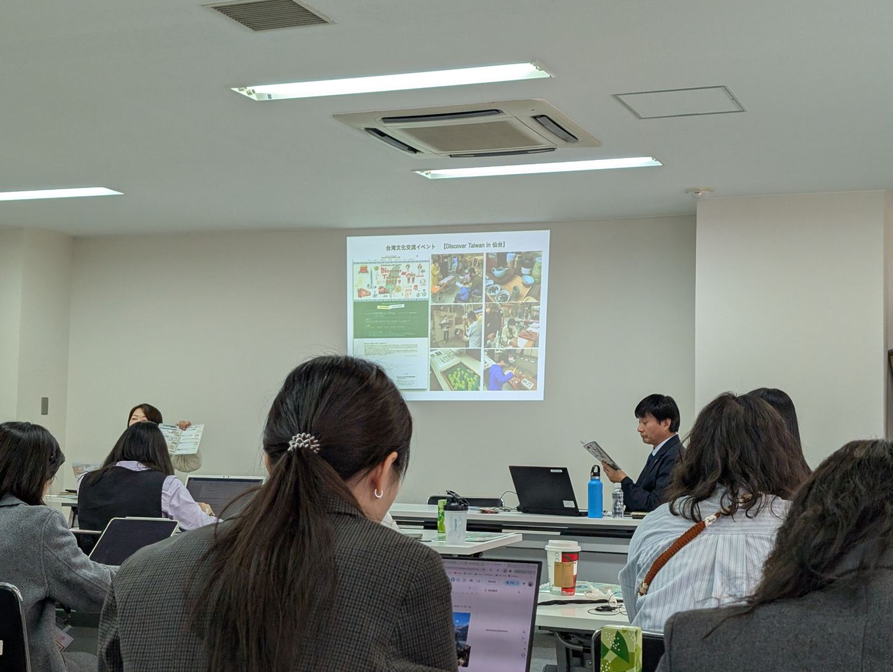
心得
最後我們花了一段時間製作關於這段旅程的最終發表，我們小組認為可以從我們到訪的地點為發想，來延伸自己的心得與學習。我最後選擇的是這趟旅程裡，最讓我放在心裡的位置的南三陸 311 メモリアル。走進紀念館的那一刻，其實心裡沒有預期會被什麼擊中。但看著映像裡的大自然力量、來不及逃生的瞬間、與災後殘存的地景，我第一次那麼深刻地意識到——生命真的又脆弱、又強大。
在那裡，我看到的並不是悲傷本身。比較像是，人們在經歷巨大失去後留下來的那種「還是想往前的意志」。那種力量不是大聲的，而是慢慢、安靜地累積起來的。比起災害，我更被「活著下去的人」給打動。他們把自己的經驗當成一種提醒，也當成一種希望，希望後來的人能學到什麼、記得什麼、避免什麼。這份心意在空間裡是看得到的，也能感覺得到。
我想把這段經驗好好帶回台灣。不是把悲傷帶回去，而是把那份「願意把歷史變成希望」的態度帶回去。分享給朋友、也提醒自己——要珍惜現在能做的每一步。今天的我，對於「活著」這件事又多理解了一點。也真心感謝南三陸把這個位置留給我們理解。
其他的夥伴們或以自己人生經驗為出發點，或以地點為出發點，但可以看到大家都很喜歡這趟旅程，也在這次的旅途中收穫滿滿的經驗。我自己很喜歡最後一組的影片，在最後的成發可以看到這段旅途的點滴，結合同學的訪談，真的會有種畢業典禮的感覺。感覺的到大家對於這次旅程所帶來的關係、學習都有很多的想法以及繼續延續的心，希望在這次旅程後除了學習經驗外，也可以將這次認識的所有關係繼續存續到未來！
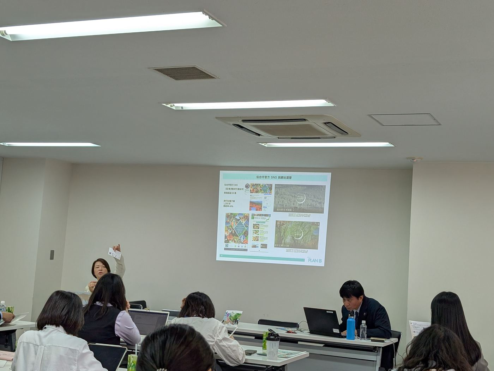
Day 14
荒滨小学校、閖上の記憶
November 25, 2025
＋
荒滨小学校、閖上の記憶
荒滨小学校
心得
荒浜小學校是東日本大地震後保留下來的震災遺構。第一次走進去時，那種氛圍很難用語言描述——建築物完好的地方像是假裝什麼都沒發生，而破損的陽台、卡在時間裡的大時鐘、空掉的走廊，又像是突然把我拖回那一天。那裡安靜得過分，但也是那種安靜讓我意識到：這棟建築本身，就是一具「死物」。一、二樓保留的是最原始的災後景象，沒有過度修復，傾塌的牆、捲曲的欄杆、水痕、碎裂的玻璃框。我站在那裡時，竟覺得海嘯帶走生命的力量不像影像那樣「可怕」，反而像是某種冰冷卻巨大的事實，巨大到能讓時間本身停下來。與遺構保存不同，四樓的展覽聚焦在災害記憶、防災知識與紀念物。
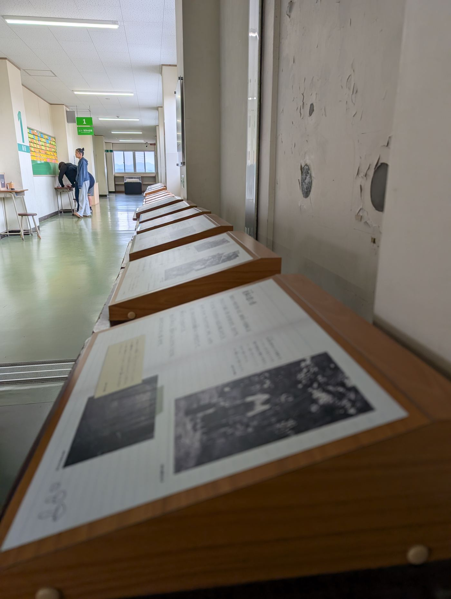
其中，最讓我有感的是在「災害記憶」展間中的「時間性」。每一個展板都以「幾點幾分」開頭：15:32、15:45、15:54……對於罹難者來說，像生命最後的倒數，對生還者來說像一個無法逃開的劇本節點。那些短短的文字，卻是生還者最真實的感受。尤其當我看到「前方是什麼？」這句時，心裡真的刺了一下。看展的人只會看到單純的文字，像是：「往高處避難」，但實際經歷的人，他們當下到底有多慌、多怕、多不敢相信？觀展的我們永遠只能靠字句想像。而那個「15:54」——那麼具體的時間，要記住它需要多大的勇氣？但他們還是記了下來，並願意用這份勇氣替所有人保存。
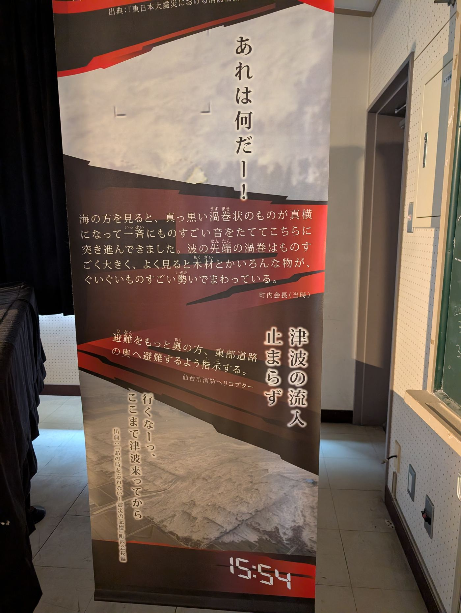
在紀念物的展間中，讓我思考，如果這些事物沒有人記得，那他們曾經存在過的證據會去哪裡？展間裡有一個小鎮模型，上頭標著一個個曾存在的名字：「佐藤家」、「大學生的家」、「豆腐店」。那現在，那些地方，都到哪去了呢？最直接的答案是往小學的窗外看，卻只看到一片空地。這片土地如今只留下了這間學校。那些家、那些生活、那些聲音，一起被海嘯沖散了。這讓我想到那這趟旅程中看到的南三陸攝影集中的一段話：「我們的街道去哪了？那些森林去哪了？人們又去哪了？從出生到現在第一次憎恨大自然。」看到文字與影像遠不及實際親臨，而這也是遺構保存最重要原因。我們總是需要一些念想或是殘存物去想像。
我們無法親歷那場災難，但透過這些殘留的物件與模型，我們能看見一個問題，如果沒有人替他們記著，那過去的證據要去哪裡？我很喜歡《可可夜總會》中的一句話：「真正的死亡，是沒有人記得你。」在荒浜小學校，我深刻感覺到這座城鎮努力地「記得」每一個逝去的人。每一個展板、每一張照片、每一段故事，都像是在說：「我們沒有忘記你。」也像是在說：「雖然你不在了，但你仍然是這個地方的一部分。」
在這趟旅途中我總是感受到日本人在「檢討」這件事上有過份的執著，但這其實是一種對生命的認真，「只要準備更充分，或許就不會發生了吧。」這句話，我在這趟旅程中聽了不只一次。日本民族的反思常被誤解為「責備」，但在這裡，我看到的涵義卻是一種對生命的尊重，對逝者的誠實，對未來的敬畏。他們希望逝去的人不是「被忘記」，而是「被轉化」，成為前進的理由。
慰靈碑旁種植的花朵，它所展現的生命力是我所感受到最微小卻最溫暖的地方。也是我感受的所有人所散發的能量。
〈閖上の記憶〉
心得
〈閖上の記憶〉比起這次去的其他場域，感覺更加樸實，建築主要以貨櫃屋的狀態至於運河旁邊，除了故事館外，還有一些美食街跟可以購買漁產的地方。感覺是供給給當地居民以及少量的觀光客，旁邊就是港口也讓這個場域不是「被建構」的這件事顯得更加明確。但也因為場域顯得太過樸實，所以帶來的衝擊也更加貼近自己。
講者是名取市在地人，在東日本大地震時生還，但也失去了父母與兒子。在講座中我們看到了海嘯前後的差別，以及對我來說衝擊最大的，在避難地拍攝的海嘯沖走民眾的影片。儘管我不喜歡留下影像，但我從不否認以畫面、影像紀錄的重要性，第一次看到活生生的人被大水沖走，這對認知與感受上的衝擊性是很大的。這個影片讓我感受到人類的脆弱，一條條性命可以這麼簡單的被帶走。但最令我感到荒謬的，還是講師帶點平靜與溫暖的語調，她平靜的彷彿只是在閱讀一本繪本，但在場的所有人都知道這個故事是來自她的親身經歷以及最深的傷口。
這趟旅程裡，我遇到了許多帶著傷的人。有些傷不會說話，有些傷藏在笑容裡，有些傷沒有哭泣的聲音，但在空氣裡、在眼神裡、在停頓裡輕輕閃過。在《閖上の記憶》的講師分享時，他說了一句讓我難以忘記的話：「對我而言，真正的復興，是我的兒子能回來。」但他也明白，這件事永遠不可能發生了。然而正因如此，在世的人更想把能做的事做到最好。整理資料、記錄歷史、帶著外地人走過那些曾被海嘯吞沒的路、講述那些名字與故事、示範如何避難、提醒後人該怎麼活下來。這些看似平凡的行為，背後都藏著一種沉默的用力，一種把悲傷折成船、推向遠方的方式。
所以他們用了各式各樣的方是希望可以紀念這些是去的人們，像是每年三一一的祈願氣球儀式，希望將想說的話透過飛向天空的氣球，傳遞給在天堂的人們。或是隨處可見的慰靈碑，上面的一個個名字都是活下來的人們的執念。離開〈閖上の記憶〉後，我們前往小學旁邊的孩子的慰靈碑，講師邀請我們撫摸石碑，讓它變的溫暖一點。有同學很認真的去撫摸了碑上的文字，也為了這些逝去的生命認認真真的哭了一場。
當下對我而言沒有太多的感觸，因為研究內容的關係，我早已習慣觀看跟「死亡」有關的故事，特別是生離死別的故事。在我跟同學的討論中，會覺得這樣撫摸的「儀式」可能有點多，或是思考真的需要這樣嗎？但在我緩慢的思考中，我認為只要是可以讓生存下來的人們，可以在心中有點暖意，可以覺得有繼續活下去的動力，那不管是甚麼形式都是最好的。
或許這就是為什麼他們每個人看起來都像「光」的原因，不是因為沒有傷，而是因為他們選擇背著傷繼續前進。他們選擇了不遺忘，努力讓記憶變成活下去的理由。
在參訪的時候我一直想起米津玄師〈カムパネルラ〉中的歌詞：「君がつけた傷も 輝きのその一つ」「你留給我的傷，也是其中一道光芒。」
水晶不會自主的發出光芒，需要透過一次次的受傷、打磨，才能變成反射光芒的水晶。閃閃發光的他們，或許也是因為曾經破碎過。我在看講者講述的經歷以及兒子的時候感受到的溫暖與悲傷，還有她堅持一直買漫畫祭奠兒子的行動，都告訴我她心中的那些傷口並沒有癒合，但在我眼裡也是因為這些傷口讓她正在發光。